第一章 物理量与单位
Physical quantities and units — 涵盖基本量与导出量推导、方程齐次性检验、常见物理量数量级估算、系统与随机误差分析、精密度与准确度、不确定度合成以及矢量的正交分解与合成。
00 考纲学习目标 Syllabus Learning Outcomes
1.1 物理量 Physical quantities
物理学研究的是可以测量的量。一个物理量 (physical quantity) 必须同时包含两部分：
例如 $m = 9.6\text{ kg}$，其中 $9.6$ 是数值，$\text{kg}$ 是单位。只写“$9.6$”、只写“$\text{kg}$”、或只写“质量”都不是一个物理量的测量值。百分数（如 $6.4\%$）是两个同类量的比值，本身没有单位，也不是对物理量的一次测量。
1.1.1 数量级估算 Estimation
考试中常要求对日常物理量作出合理估算（通常只需正确到数量级，即 10 的幂次）。下表列出应当熟记的典型数值：
| 物理量 Quantity | 典型值 Typical value | 备注 |
|---|---|---|
| 成年人质量 | $70\text{ kg}$ | 体重约 $700\text{ N}$ |
| 汽车质量 | $1000\text{ kg}$ 至 $1500\text{ kg}$ | 大象约为汽车的 4倍 |
| 一个苹果的重量 | $\approx 1\text{ N}$ | 质量约 $100\text{ g}$ |
| 人步行速度 | $1.5\text{ m s}^{-1}$ | 跑步约 $5\text{ m s}^{-1}$ |
| 高速公路车速 | $30\text{ m s}^{-1}$ | 约 $110\text{ km h}^{-1}$ |
| 空气中的声速 | $330\text{ m s}^{-1}$ | |
| 光速 | $3.0 \times 10^8\text{ m s}^{-1}$ | |
| 一层楼高 | $3\text{ m}$ | |
| 原子直径 | $10^{-10}\text{ m}$ | |
| 原子核直径 | $10^{-15}\text{ m}$ 至 $10^{-14}\text{ m}$ | |
| 可见光波长 | $400\text{ nm}$ 至 $700\text{ nm}$ | |
| 水的密度 | $1000\text{ kg m}^{-3}$ | 空气约 $1.2\text{ kg m}^{-3}$ |
| 大气压 | $1.0 \times 10^5\text{ Pa}$ | |
| 室温 | $293\text{ K } (20^\circ\text{C})$ | |
| 家用电压 | $230\text{ V}$（英国） | 灯泡功率约 $60\text{ W}$ |
| 足球体积 | 约 $6000\text{ cm}^3$ | 半径约 $11\text{ cm}$ |
估算时先把已知量换成 SI 单位，然后保留一位有效数字进行计算。例如：大象最大动量 $p = mv \approx (4 \times 1200) \times (40 / 3.6) \approx 5 \times 10^4\text{ kg m s}^{-1}$，最接近的选项是 $7 \times 10^4\text{ kg m s}^{-1}$。
1.2 国际单位制 SI units
1.2.1 基本量与基本单位 Base quantities and base units
国际单位制 (Système International, SI) 选定少数几个基本量 (base quantity)，其余所有物理量的单位都由它们导出。9702 考纲要求记住以下基本量：
| 基本量 Base quantity | 符号 | SI 基本单位 Base unit | 单位符号 |
|---|---|---|---|
| 质量 mass | $m$ | kilogram | $\text{kg}$ |
| 长度 length | $l$ | metre | $\text{m}$ |
| 时间 time | $t$ | second | $\text{s}$ |
| 电流 electric current | $I$ | ampere | $\text{A}$ |
| 热力学温度 thermodynamic temperature | $T$ | kelvin | $\text{K}$ |
| 物质的量 amount of substance | $n$ | mole | $\text{mol}$ |
“基本量”是 current（电流），“基本单位”是 ampere。题目问“SI base quantity”时，选 current 而不是 ampere；charge（电荷）是导出量，单位 coulomb (C = A s) 也是导出单位。
质量的基本单位是 kg，不是 g；温度的基本单位是 K，不是 $^\circ\text{C}$。
1.2.2 导出单位 Derived units
导出量 (derived quantity) 由基本量通过定义式得到，其单位就是对应基本单位的乘积或商。推导时一定要从定义式出发：
| 导出量 | 定义式 | 导出单位 | 用 SI 基本单位表示 |
|---|---|---|---|
| 速度 velocity | $v = s / t$ | $\text{m s}^{-1}$ | $\text{m s}^{-1}$ |
| 加速度 acceleration | $a = \Delta v / t$ | $\text{m s}^{-2}$ | $\text{m s}^{-2}$ |
| 力 force | $F = ma$ | newton (N) | $\text{kg m s}^{-2}$ |
| 动量 momentum | $p = mv$ | $\text{N s}$ | $\text{kg m s}^{-1}$ |
| 压强 pressure | $p = F / A$ | pascal (Pa) | $\text{kg m}^{-1}\text{s}^{-2}$ |
| 功 /能 work, energy | $W = Fs$ | joule (J) | $\text{kg m}^2\text{s}^{-2}$ |
| 功率 power | $P = W / t$ | watt (W) | $\text{kg m}^2\text{s}^{-3}$ |
| 电荷 charge | $Q = It$ | coulomb (C) | $\text{A s}$ |
| 电势差 p.d. | $V = W / Q$ | volt (V) | $\text{kg m}^2\text{s}^{-3}\text{A}^{-1}$ |
| 电阻 resistance | $R = V / I$ | ohm ($\Omega$) | $\text{kg m}^2\text{s}^{-3}\text{A}^{-2}$ |
| 频率 frequency | $f = 1 / T$ | hertz (Hz) | $\text{s}^{-1}$ |
| 密度 density | $\rho = m / V$ | $\text{kg m}^{-3}$ | $\text{kg m}^{-3}$ |
| 强度 intensity | $I = P / A$ | $\text{W m}^{-2}$ | $\text{kg s}^{-3}$ |
求伏特 (V) 用 SI 基本单位的表达式。
$$\text{V} = \frac{\text{kg m}^2\text{ s}^{-2}}{\text{A s}} = \text{kg m}^2\text{ s}^{-3}\text{ A}^{-1}。$$
1.2.3 方程的齐次性 Homogeneity of equations
如果一个物理方程中每一项的 SI 基本单位都相同，则称该方程是齐次的 (homogeneous)。
齐次是方程正确的必要条件，但不是充分条件：齐次方程仍可能因为数值系数（如 $\frac{1}{2}$）或缺项而错误。例如 $s = ut + at^2$ 是齐次的，但物理上是错误的（应为 $\frac{1}{2}at^2$）。
纯数（如 $\frac{1}{2}$、 $2\pi$）和比值没有单位，不影响齐次性。
检验 $v^2 = u^2 + 2as$ 是否齐次。
1.2.4 词头 Prefixes
| 词头 | 符号 | 倍数 | 词头 | 符号 | 倍数 |
|---|---|---|---|---|---|
| pico | p | $10^{-12}$ | deci | d | $10^{-1}$ |
| nano | n | $10^{-9}$ | kilo | k | $10^{3}$ |
| micro | μ | $10^{-6}$ | mega | M | $10^{6}$ |
| milli | m | $10^{-3}$ | giga | G | $10^{9}$ |
| centi | c | $10^{-2}$ | tera | T | $10^{12}$ |
1.3 误差与不确定度 Errors and uncertainties
1.3.1 系统误差与随机误差
使每次测量读数都朝同一方向偏离真实值相同大小（或相同比例）的误差。不能通过多次测量取平均来减小，只能通过校准仪器 (calibration) 、修正零点误差或改进实验方法来消除。
零点误差 (zero error )是一种典型的系统误差：当被测量为零时，仪器读数不为零。例如千分尺两砧合拢时读数为 $+0.02\text{ mm}$，则所有读数都偏大 $0.02\text{ mm}$，应从每次读数中减去。
使读数在真实值附近无规律地分散（大小、方向都不同）的误差。可以通过多次重复测量取平均值或作图取最佳拟合线来减小其影响。
1.3.2 精密度与准确度 Precision and accuracy
Precision : how close repeated measured values are to each other (the size of the smallest division / the spread of readings).
准确度 ：测量值与真实值的接近程度——受系统误差影响。
精密度 ：多次测量值之间彼此接近的程度（也指读数的分辨程度、有效数字位数）——受随机误差影响。
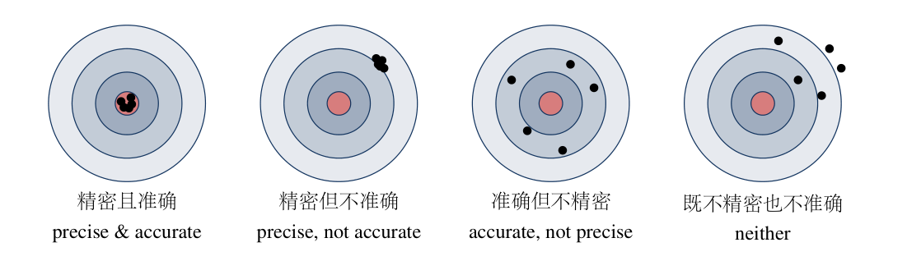
在读取仪器数值时，精密度取决于仪器最小分度：例如读数 $62.65\text{ cm}$ 比 $61.5\text{ cm}$ 更精密（读到 $0.01\text{ cm}$）；而哪一个更准确则要和真实值比较。
| 常用仪器 | 最小分度 (精密度 ) | 典型不确定度 |
|---|---|---|
| 米尺 metre rule | $1\text{ mm}$ | $\pm 1\text{ mm}$（两端读数各 $\pm 0.5\text{ mm}$） |
| 游标卡尺 vernier calipers | $0.1\text{ mm}$ 或 $0.02\text{ mm}$ | $\pm 0.1\text{ mm}$ |
| 千分尺 micrometer screw gauge | $0.01\text{ mm}$ | $\pm 0.01\text{ mm}$ |
| 秒表 stopwatch | $0.01\text{ s}$ | 人反应时间约 $\pm 0.2\text{ s}$ |
| 数字电表 digital meter | 最后一位 | $\pm$ 最后一位的 1 |
1.3.3 不确定度的表示与合成
测量结果写成 $x \pm \Delta x$，其中 $\Delta x$ 为绝对不确定度 (absolute uncertainty )。
分数不确定度 fractional uncertainty = $\frac{\Delta x}{x}$ ，百分比不确定度 percentage uncertainty = $\frac{\Delta x}{x} \times 100\%$
(1) 加减：$y = a + b$ 或 $y = a - b \implies \Delta y = \Delta a + \Delta b$（绝对不确定度相加）。
(2) 乘除：$y = ab$ 或 $y = \frac{a}{b} \implies \frac{\Delta y}{y} = \frac{\Delta a}{a} + \frac{\Delta b}{b}$（百分比不确定度相加）。
(3) 乘方：$y = a^n \implies \frac{\Delta y}{y} = |n|\frac{\Delta a}{a}$（$n$ 可以是分数或负数）。
(4) 常数（如 $\pi, 2$）无不确定度。
一般地，$y = k\frac{a^m b^n}{c^p}$ 时，$\frac{\Delta y}{y} = m\frac{\Delta a}{a} + n\frac{\Delta b}{b} + p\frac{\Delta c}{c}$。
两个量相减时，绝对不确定度仍然相加；当差值很小时，百分比不确定度会非常大。
最终结果的绝对不确定度一般保留 1位有效数字，测量值的小数位与之对齐，例如 $g = (9.8 \pm 0.3)\text{ m s}^{-2}$。
单摆周期 $T = 2\pi\sqrt{l / g}$，测得 $l = (0.800 \pm 0.002)\text{ m}$， $T = (1.80 \pm 0.02)\text{ s}$。求 $g$ 及其不确定度。
$$\frac{\Delta g}{g} = \frac{\Delta l}{l} + 2\frac{\Delta T}{T} = \frac{0.002}{0.800} + 2 \times \frac{0.02}{1.80} = 0.0025 + 0.0222 = 0.0247$$ $$\Delta g = 0.0247 \times 9.75 = 0.24\text{ m s}^{-2} \approx 0.2\text{ m s}^{-2}，所以 g = (9.8 \pm 0.2)\text{ m s}^{-2}。$$
1.4 标量与矢量 Scalars and vectors
标量只有大小；矢量既有大小又有方向。
| 标量 Scalars | 矢量 Vectors |
|---|---|
| distance, speed, mass, time, energy, work, power, pressure, density, temperature, charge, potential difference, resistance, volume, amplitude, frequency, wavelength | displacement, velocity, acceleration, force (including weight, tension, friction, upthrust, drag), momentum, impulse, electric/gravitational/magnetic field strength, torque (moment) |
1.4.1 矢量的加减 Adding and subtracting vectors
矢量相加用首尾相接法（三角形法则 triangle of vectors ）或平行四边形法则。$\mathbf{a} - \mathbf{b} = \mathbf{a} + (-\mathbf{b})$，即把 $\mathbf{b}$ 反向后再相加。
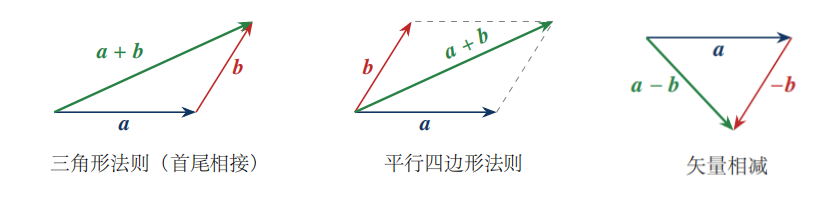
- 两矢量互相垂直：$R = \sqrt{a^2 + b^2}$，方向 $\tan\theta = b / a$。
- 两矢量夹角为 $\theta$：用余弦定理 $R^2 = a^2 + b^2 + 2ab\cos\theta$（$\theta$ 为两矢量尾对尾时的夹角）；也可以用精确作图（scale drawing）求解。
- 多个力：先全部分解到两个互相垂直的方向上，分别求和，再合成。
1.4.2 矢量的分解 Resolving vectors
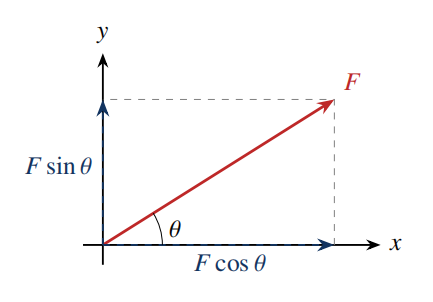
一个矢量 $F$ 与 $x$ 轴夹角 $\theta$，可以分解为两个互相垂直的分量 (components )：
$$F_x = F\cos\theta,\quad F_y = F\sin\theta,\quad F = \sqrt{F_x^2 + F_y^2}。$$记忆方法：与角 $\theta$“相邻”的分量用 $\cos$，“对边”的分量用 $\sin$。斜面上的物体，重力沿斜面分量为 $mg\sin\theta$，垂直斜面分量为 $mg\cos\theta$（$\theta$ 为斜面倾角）。
1.5 本章小结与教学提示 Summary & Teacher's Note
本章是全书基础，建议 3–4 课时。重点训练： (1) 从定义式推导基本单位； (2) 百分比不确定度的合成，尤其是乘方项； (3) 共点力的分解。 Paper 1 每年前 3–4 题都出自本章，属于必拿分。学生最常犯的错误：把 current/ampere 混淆； $\text{cm}^3$ 与 $\text{m}^3$ 换算错误；把 accuracy 与 precision 说反。
1.5 本章小结 Summary
| 物理量 / 关系 | 公式 | 说明 |
|---|---|---|
| SI 基本单位 | $\text{kg, m, s, A, K, mol}$ | 记清基本量与基本单位 |
| 百分比不确定度 | $\frac{\Delta x}{x} \times 100\%$ | 乘除：百分比相加 |
| 加减的不确定度 | $\Delta y = \Delta a + \Delta b$ | 相减时也相加 |
| 乘方的不确定度 | $\frac{\Delta y}{y} = n \frac{\Delta a}{a}$ | $y = a^n$ |
| 矢量分解 | $F_x = F\cos\theta,\quad F_y = F\sin\theta$ | $\theta$ 为与 $x$ 轴夹角 |
| 两矢量合成 | $R^2 = a^2 + b^2 + 2ab\cos\theta$ | 垂直时 $R = \sqrt{a^2 + b^2}$ |
1.6 典型例题精选与解析 Worked Examples
The surface area of one face of a cube is determined with an uncertainty of $\pm 1.0\%$. This area is used to calculate the volume of the cube. What is the percentage uncertainty in the calculated volume of the cube?
A $\pm 1.0\%$
B $\pm 1.5\%$
C $\pm 3.0\%$
D $\pm 6.0\%$
面积 $A = L^2$，体积 $V = L^3 = A^{3/2}$。所以 $\frac{\Delta V}{V} = \frac{3}{2}\frac{\Delta A}{A} = 1.5 \times 1.0\% = 1.5\%$。
注意不要先求 $L$ 的不确定度再乘 3 而出错：$\Delta L / L = 0.5\%$，$\Delta V / V = 3 \times 0.5\% = 1.5\%$，结果一致。
At temperatures close to $0\text{ K}$, the specific heat capacity $c$ of a particular solid is given by $c = bT^3$, where $T$ is the temperature and $b$ is a constant, characteristic of the solid. The SI unit of specific heat capacity is $\text{J kg}^{-1}\text{ K}^{-1}$. What is the unit of constant $b$, expressed in SI base units?
A $\text{m}^2\text{ s}^{-2}\text{ K}^{-3}$
B $\text{m}^2\text{ s}^{-2}\text{ K}^{-4}$
C $\text{kg m}^2\text{ s}^{-2}\text{ K}^{-3}$
D $\text{kg m}^2\text{ s}^{-2}\text{ K}^{-4}$
$\text{J kg}^{-1}\text{ K}^{-1} = (\text{kg m}^2\text{ s}^{-2})\text{ kg}^{-1}\text{ K}^{-1} = \text{m}^2\text{ s}^{-2}\text{ K}^{-1}$。
$b = c / T^3$，单位为 $\text{m}^2\text{ s}^{-2}\text{ K}^{-1} / \text{K}^3 = \text{m}^2\text{ s}^{-2}\text{ K}^{-4}$。
A metal rod is exactly $62.00\text{ cm}$ long. The length of the rod is measured using two different devices, X and Y. The reading on device X is $61.5\text{ cm}$. The reading on device Y is $62.65\text{ cm}$. Which device gives the more precise reading for the length, and which device gives the more accurate reading for the length?
| more precise reading | more accurate reading | |
|---|---|---|
| A | X | X |
| B | X | Y |
| C | Y | X |
| D | Y | Y |
精密度看读数分辨率：Y 读到 $0.01\text{ cm}$，X 只读到 $0.1\text{ cm}$，所以 Y 更精密。
准确度看与真实值的差距：$|61.5 - 62.00| = 0.50\text{ cm}$，$|62.65 - 62.00| = 0.65\text{ cm}$，X 更接近真实值，所以 X 更准确。
Two coplanar forces act on a small object. One force has magnitude $10\text{ N}$. The other force has magnitude $8.0\text{ N}$ and acts at an angle of $60^\circ$ to the first force. What is the magnitude of the resultant of the two forces?
A $14\text{ N}$
B $16\text{ N}$
C $17\text{ N}$
D $18\text{ N}$
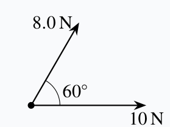
方法一（分解）：$R_x = 10 + 8.0\cos 60^\circ = 14.0\text{ N}$， $R_y = 8.0\sin 60^\circ = 6.93\text{ N}$， $R = \sqrt{14.0^2 + 6.93^2} = 15.6 \approx 16\text{ N}$。
方法二（余弦定理）：$R^2 = 10^2 + 8^2 + 2(10)(8)\cos 60^\circ = 244$， $R = 15.6\text{ N}$。
1.6 本章练习 Practice questions
What are the base units for intensity?
答案 Answer：A
强度 $I = P / A$，单位 $\text{W m}^{-2}$。
$\text{W} = \text{J s}^{-1} = \text{kg m}^2\text{ s}^{-3}$，所以 $\text{W m}^{-2} = \text{kg s}^{-3}$。
What are the advantages of taking repeat measurements and calculating a mean in an experiment?
| taking repeat measurements | calculating a mean | |
|---|---|---|
| A | shows if the results are accurate | reduces the effects of random errors |
| B | shows if the results are accurate | reduces the effects of systematic errors |
| C | shows if the results are precise | reduces the effects of random errors |
| D | shows if the results are precise | reduces the effects of systematic errors |
答案 Answer：C
重复测量可以看出读数之间的分散程度，即是否精密；取平均只能减小随机误差的影响，对系统误差无效（系统误差使每次读数朝同一方向偏移，平均后依然存在）。
The value of a quantity $X$ is calculated from the values of quantities $Y$ and $Z$ by using the equation $X = \frac{Y}{Z}$ .
The percentage uncertainty in the value of $Y$ is twice the percentage uncertainty in the value of $Z$. What is the ratio
$$\frac{\text{percentage uncertainty in the value of } X}{\text{percentage uncertainty in the value of } Z}$$ ?
答案 Answer：B
除法：百分比不确定度相加。设 $Z$ 的百分比不确定度为 $z$，则 $Y$ 为 $2z$， $X$ 为 $2z + z = 3z$，比值为 3。
What is a reasonable estimate for the volume of a fully-inflated spherical football?
答案 Answer：C
足球直径约 $22\text{ cm}$，半径 $r \approx 11\text{ cm}$， $V = \frac{4}{3}\pi r^3 = \frac{4}{3}\pi (11)^3 \approx 5600\text{ cm}^3$，最接近 $6000\text{ cm}^3$。
A student measures the current and the potential difference for a resistor in a circuit.
The measurements are used to calculate the resistance of the resistor. What is the percentage uncertainty in the calculated resistance?
答案 Answer：D
$R = V / I$，百分比不确定度相加：
$$\frac{0.01}{50.00} \times 100\% + \frac{0.1}{500.0} \times 100\% = 0.02\% + 0.02\% = 0.04\%。$$
Three coplanar forces, P, Q and R, act at a point.
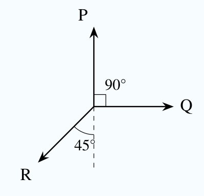
The three forces are in equilibrium. The magnitude of P is increased by 10%. The directions of the forces are unchanged. Which percentage increase, if any, is required to the magnitudes of Q and R for the forces to be once again in equilibrium?
| % increase in magnitude of Q | % increase in magnitude of R | |
|---|---|---|
| A | 10 | 10 |
| B | 0 | 10 |
| C | $10\sqrt{2}$ | $10\sqrt{2}$ |
| D | 10 | $10\sqrt{2}$ |
答案 Answer：A
竖直方向：$R\cos 45^\circ = P$；水平方向：$R\sin 45^\circ = Q$。方向不变时，三个力构成的矢量三角形形状不变（相似三角形），所以 $P$ 增大 10% 时， $Q$ 和 $R$ 也都必须增大 10% 。
By placing one tick ($\checkmark$) in each row, complete Table 1.1 to identify whether each of the listed quantities is a scalar or a vector.
| quantity | scalar | vector |
|---|---|---|
| amplitude | ||
| force | ||
| momentum | ||
| power |
amplitude : scalar ； force : vector ； momentum : vector ； power : scalar 。
amplitude 与 power 为标量 [B1]
force 与 momentum 为矢量 [B1]
第二章 运动学 Kinematics
Kinematics — 掌握位移、速度与加速度矢量概念、运动图像（$s$-$t$、$v$-$t$ 图像斜率与面积）、匀加速直线运动四大 SUVAT 方程严谨推导、自由落体运动与两种测定 $g$ 的实验方法、抛体运动的独立性与速度正交合成。
00 考纲要求 Syllabus learning outcomes
2.1 描述运动的物理量 Quantities Describing Motion
Displacement : the distance in a straight line from a reference point in a specified direction (vector).
Velocity : change in displacement per unit time (rate of change of displacement).
平均速度 = 总位移 / 总时间； 平均速率 = 总路程 / 总时间。沿圆周走 $\frac{3}{4}$ 圈时，平均速率按弧长算，平均速度按弦长（起点到终点直线）算。
瞬时速度 是某一时刻的速度，等于 $s$–$t$ 图在该点的 切线斜率 。
“减速” (deceleration) 指加速度方向与速度方向相反，计算时 $a$ 取负值。
2.2 运动图像 Graphs of motion
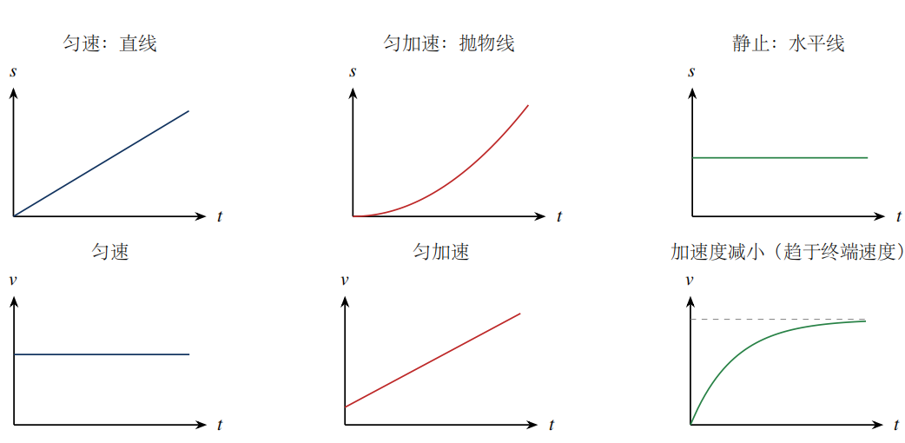
| 图像 | 斜率 gradient | 面积 area under graph |
|---|---|---|
| 位移 –时间 $s$–$t$ | 速度 $v$ | 无物理意义 |
| 速度 –时间 $v$–$t$ | 加速度 $a$ | 位移 $s$ |
| 加速度 –时间 $a$–$t$ | （不要求） | 速度的变化量 $\Delta v$ |
$v$–$t$ 图中，时间轴 下方 的面积表示反方向的位移。求 路程 时把各部分面积的绝对值相加；求 位移 时取代数和。
曲线 $s$–$t$ 图求某时刻速度：在该点作 切线 ，取切线上相距较远的两点计算斜率（取点间隔至少占图像一半以上，以减小读数误差）。
曲线 $v$–$t$ 图下的面积可以用数方格估算：数出完整方格数（超过半格的计为一格），乘以每格代表的位移。
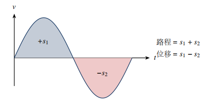
A car moves in a straight line along a road. Figure 1.1 shows the variation with time $t$ of the velocity $v$ of the car.
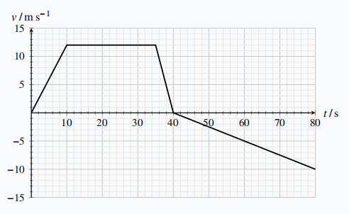
(i) State the feature of the graph that represents the distance travelled by the car between $t = 0$ and $t = 40\text{ s}$. [1]
(ii) Calculate the distance travelled by the car between $t = 0$ and $t = 40\text{ s}$. [1]
(iii) Determine the maximum magnitude of the acceleration of the car. [2]
(iv) At $t = 25\text{ s}$, the car is at a point P. At $t = 40\text{ s}$, the car is at a distance of $150\text{ m}$ from P. After $t = 40\text{ s}$, the car travels with a constant acceleration of $-0.25\text{ m s}^{-2}$ until the car is again at point P. Calculate the speed of the car when it is at point P for the second time. [2]
(v) At $t = 0$, the displacement of the car is zero. Sketch the variation of the displacement of the car with $t$ from $t = 0$ to $t = 80\text{ s}$. Values for displacement are not required. [3]
(i) 图线与时间轴之间的面积 (area under the graph) 。 [B1]
(ii) 面积 = $\frac{1}{2}(10)(12) + (25)(12) + \frac{1}{2}(5)(12) = 60 + 300 + 30 = \mathbf{390\text{ m}}$ 。 [A1]
(iii) 最陡的一段是 $t = 35$ 到 $40\text{ s}$： $a = \frac{0 - 12}{5} = -2.4\text{ m s}^{-2}$ 。 [C1]
加速度大小最大值 = $\mathbf{2.4\text{ m s}^{-2}}$ 。 [A1]
(iv) 从 $t = 40\text{ s}$ 起初速 $u = 0$，$a = -0.25$，位移 $s = -150\text{ m}$ （返回 P）：
$v^2 = u^2 + 2as = 0 + 2(-0.25)(-150) = 75$ 。 [C1]
$v = \mathbf{8.7\text{ m s}^{-1}}$ 。 [A1]
(v) 草图要点：
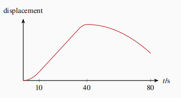
- 从原点出发，先增大后减小，且不穿过 $t$ 轴（ $t = 80\text{ s}$ 时位移 $390 - 200 = 190\text{ m} > 0$）； [B1]
- 在 $t = 40\text{ s}$ 处位移最大； [B1]
- 0–10 s 斜率增大； 10–35 s 直线； 35–40 s 斜率减小； 40–80 s 斜率继续减小（变为负）。 [B1]
2.3 匀加速直线运动方程 Equations of uniformly accelerated motion
设物体初速度为 $u$，经过时间 $t$ 后速度为 $v$，加速度 $a$ 恒定，位移为 $s$。
推导 (derivation) ：
(1) 由加速度定义 $a = \frac{v - u}{t}$，得 $v = u + at$ 。
(2) 匀加速时平均速度为 $\frac{u + v}{2}$，位移 = 平均速度 × 时间，得 $s = \frac{u + v}{2}t$ 。这也是 $v$–$t$ 图下梯形的面积。
(3) 把 (1) 代入 (2) ： $s = \frac{u + (u + at)}{2}t$，得 $s = ut + \frac{1}{2}at^2$ 。
(4) 由 (1) 得 $t = \frac{v - u}{a}$，代入 (2) ： $s = \frac{(u + v)(v - u)}{2a}$，得 $v^2 = u^2 + 2as$ 。
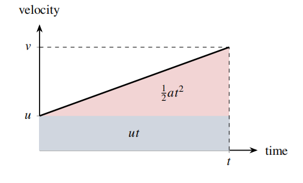
适用条件：直线运动且加速度恒定。五个量 $s, u, v, a, t$ 中已知任意三个即可求另外两个。（考试数据表给出 $s = ut + \frac{1}{2}at^2$ 与 $v^2 = u^2 + 2as$ 。）
(2) 列出 $s, u, v, a, t$ 中已知的三个和要求的一个；
(3) 选不含“第五个量”的方程；
(4) 带符号代入，答案注意正负号的物理意义。
2.4 自由落体 Free fall
在 无空气阻力 时，地球表面附近所有物体下落的加速度相同，称为 自由落体加速度 (acceleration of free fall ) $g = 9.81\text{ m s}^{-2}$ ，方向竖直向下，与物体质量无关。
2.4.1 测定 $g$ 的实验
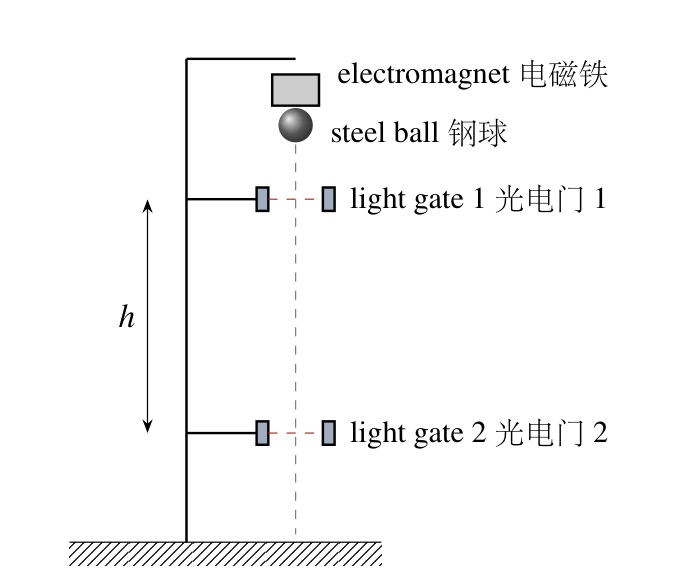
方法一（电磁铁 + 光电门 /计时器） ：
- 切断电磁铁电流，钢球由静止释放，同时开始计时；钢球通过（或撞开）下方的触发板 (trapdoor) 时停止计时，得时间 $t$。
- 用米尺测量钢球底部到触发板的高度 $h$。
- 由 $h = \frac{1}{2}gt^2$ （ $u = 0$）得 $g = 2h / t^2$。
- 改变 $h$ 重复多次，作 $h$–$t^2$ 图，斜率 = $g/2$，所以 $g = 2 \times \text{斜率}$。
方法二（两个光电门） ：
测出钢球通过光电门 1、 2 的速度 $v_1 = d / \Delta t_1$ ， $v_2 = d / \Delta t_2$ （ $d$ 为球直径），以及两门间距 $h$，则 $g = \frac{v_2^2 - v_1^2}{2h}$ 。
A stone is thrown vertically upwards from a point that is 12 m above the sea. It then falls into the sea below after 3.4 s. Air resistance is negligible. At which speed is the stone released when it is thrown?
A $3.5\text{ m s}^{-1}$
B $6.6\text{ m s}^{-1}$
C $13\text{ m s}^{-1}$
D $20\text{ m s}^{-1}$
取向上为正： $s = -12\text{ m}$ ， $a = -9.81\text{ m s}^{-2}$ ， $t = 3.4\text{ s}$。
$-12 = u(3.4) - \frac{1}{2}(9.81)(3.4)^2 = 3.4u - 56.7 \implies u = \frac{44.7}{3.4} = \mathbf{13\text{ m s}^{-1}}$ 。
The diagram shows an arrangement to stop trains that are travelling too fast.
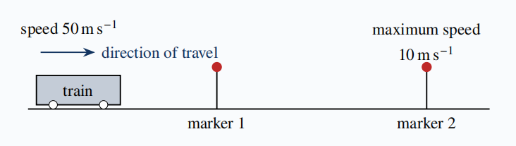
Trains coming from the left travel at a speed of $50\text{ m s}^{-1}$ . At marker 1, the driver must apply the brakes so that the train decelerates uniformly in order to pass marker 2 at no more than $10\text{ m s}^{-1}$ . The train carries a detector that notes the times when the train passes each marker and will apply an emergency brake if the time between passing marker 1 and marker 2 is less than 20 s. How far from marker 2 should marker 1 be placed?
A $200\text{ m}$
B $400\text{ m}$
C $500\text{ m}$
D $600\text{ m}$
临界情况：从 $50\text{ m s}^{-1}$ 匀减速到 $10\text{ m s}^{-1}$ 恰好用 $20\text{ s}$ 。
$s = \frac{u + v}{2}t = \frac{50 + 10}{2} \times 20 = \mathbf{600\text{ m}}$ 。
2.5 抛体运动 Projectile motion
当物体在一个方向上 匀速 运动、而在垂直方向上 匀加速 运动时，两个方向的运动 相互独立 ，只通过共同的时间 $t$ 联系。忽略空气阻力的抛体运动就是这种情况：
水平方向： $a_x = 0$，$v_x = u\cos\theta$ 恒定，$x = (u\cos\theta)t$；
竖直方向： $a_y = -g$，$v_y = u\sin\theta - gt$ ，$y = (u\sin\theta)t - \frac{1}{2}gt^2$ 。
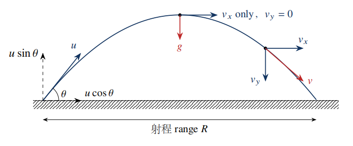
最高点：竖直速度为零，但水平速度不为零，所以物体 不是静止 的；加速度仍为 $g$（向下）。
飞行时间由竖直方向决定：同一高度落回时 $t = \frac{2u\sin\theta}{g}$ ；最大高度 $h = \frac{(u\sin\theta)^2}{2g}$ 。
达到相同最大高度的两个抛体，竖直初速度相同，所以 飞行时间相同 ，与水平速度无关。
水平抛出： $u_y = 0$，下落时间只由高度决定 $h = \frac{1}{2}gt^2$ 。
落地速度： $v = \sqrt{v_x^2 + v_y^2}$ ，方向 $\tan\alpha = v_y / v_x$ 。
有空气阻力时 （定性）：水平速度逐渐减小，射程和最大高度都减小，轨迹不再对称——下降段比上升段更陡。
A ball is thrown horizontally with a speed of $10.0\text{ m s}^{-1}$ above horizontal ground. The ball hits the ground at a time of 3.0 s after being thrown. Air resistance is negligible. What is the speed of the ball just before it hits the ground?
A $10\text{ m s}^{-1}$
B $29\text{ m s}^{-1}$
C $31\text{ m s}^{-1}$
D $39\text{ m s}^{-1}$
$v_x = 10.0\text{ m s}^{-1}$ 不变； $v_y = gt = 9.81 \times 3.0 = 29.4\text{ m s}^{-1}$ 。
$v = \sqrt{10.0^2 + 29.4^2} = \mathbf{31\text{ m s}^{-1}}$ 。
（选 B 是忘了合成水平速度；选 D 是把两个分量直接相加。）
2.6 本章小结 Summary
| 物理量 / 关系 | 公式 | 说明 |
|---|---|---|
| 速度 | $v = \Delta s / \Delta t$ | $s$–$t$ 图斜率 |
| 加速度 | $a = \Delta v / \Delta t$ | $v$–$t$ 图斜率 |
| 位移 | $v$–$t$ 图下面积 | 轴下方为负 |
| SUVAT |
$v = u + at$ ； $s = \frac{u + v}{2}t$ $s = ut + \frac{1}{2}at^2$ ； $v^2 = u^2 + 2as$ |
恒定加速度直线运动 |
| 抛体（无阻力） | $v_x$ 恒定， $a_y = -g$ | 两方向独立，时间相同 |
2.7 本章练习 Practice questions
Two projectiles, X and Y, are fired into the air from the same place on level ground and reach the same maximum height, as shown.
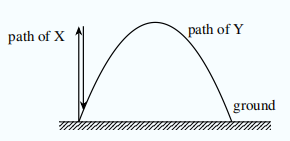
Projectile X is fired vertically upwards and projectile Y is fired at an angle to the horizontal. Air resistance is negligible. Which statement is correct?
答案 Answer ： C
最大高度 $h = \frac{u_y^2}{2g}$ 相同 $\implies$ 竖直初速度 $u_y$ 相同 $\implies$ 飞行时间 $\frac{2u_y}{g}$ 相同。 Y 在最高点仍有水平速度，不是静止； Y 的初速度更大（还有水平分量）； Y 的路程更长。
A lead sphere is released from rest at point X, a long way above the surface of a planet. The sphere falls in a vacuum. After a time of 4.0 s, it has fallen through a vertical distance of 3.0 m. Assume the acceleration of free fall is constant. How far will the sphere have fallen from point X at a time of 20 s after its release?
答案 Answer ： B
由静止开始 $s = \frac{1}{2}gt^2 \propto t^2$。时间变为 5 倍，距离变为 25 倍： $3.0 \times 25 = \mathbf{75\text{ m}}$ 。
At time $t = 0$, an object moves from rest with constant acceleration in a straight line. At time $t$, the object is distance $s$ from its rest position. A graph is drawn of $s$ against $t^2$ as shown.
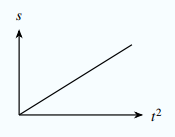
Which statement describes the acceleration of the object?
答案 Answer ： C
$s = \frac{1}{2}at^2$，与 $y = mx$ 比较，斜率 $m = a/2$，所以 $a = 2 \times \text{斜率}$。
The water surface in a deep well is 78.0 m below the top of the well. A person at the top of the well drops a heavy stone down the well. Air resistance is negligible. The speed of sound in the air is $330\text{ m s}^{-1}$ . What is the time interval between the person dropping the stone and hearing it hitting the water?
答案 Answer ： D
下落时间： $78.0 = \frac{1}{2}(9.81)t_1^2$ ，$t_1 = \mathbf{3.99\text{ s}}$ ；声音上传时间 $t_2 = 78.0 / 330 = \mathbf{0.236\text{ s}}$ 。总时间 = $3.99 + 0.24 = \mathbf{4.22\text{ s}}$ 。
A car travels anticlockwise along a horizontal circular road of radius 12 m, as shown. The car takes a time of 4.0 s to move from position P to position Q.
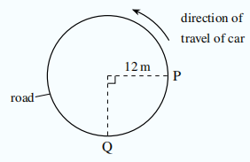
What is the magnitude of the average velocity of the car for the journey from P to Q?
答案 Answer ： A
平均速度 = 位移 / 时间。逆时针从 P 到 Q 走了 $\frac{3}{4}$ 圈，但位移只是 P、Q 间的弦长 = $12\sqrt{2} = \mathbf{17.0\text{ m}}$ 。
$\bar{v} = 17.0 / 4.0 = \mathbf{4.2\text{ m s}^{-1}}$ 。
（ D 是平均速率： $\frac{3}{4} \times 2\pi \times 12 / 4.0 = 14$ 。）
(a) Underline all the vector quantities in the following list:
distance displacement speed velocity acceleration. [1]
(b) A car of mass 1400 kg is initially travelling horizontally in a straight line at a constant speed of $15\text{ m s}^{-1}$ . The brakes are applied and the car decelerates uniformly to rest in a distance of 35 m. Calculate:
(i) the initial kinetic energy of the car [2]
(ii) the acceleration of the car [2]
(iii) the resultant force on the decelerating car. [2]
(c) The initial speed of the car in (b) is now doubled to $30\text{ m s}^{-1}$ . The brakes of the car are then applied and the car comes to rest. The resultant force on the car remains the same as in (b)(iii). Describe and explain the effect, if any, of doubling the initial speed on:
(i) the magnitude of the acceleration of the car [1]
(ii) the distance travelled by the car in coming to rest. [2]
(a) 只划 displacement, velocity, acceleration 。 [A1]
(b)(i) $E_k = \frac{1}{2}mv^2 = \frac{1}{2}(1400)(15)^2$ [C1]
$= \mathbf{1.6 \times 10^5\text{ J}}$ [A1]
(b)(ii) $0 = 15^2 + 2a(35)$ [C1]
$a = \mathbf{-3.2\text{ m s}^{-2}}$ [A1]
(b)(iii) $F = ma = 1400 \times 3.2$ [C1]
$= \mathbf{4500\text{ N}}$ （也可用 $F = E_k / s = 1.6 \times 10^5 / 35 = \mathbf{4600\text{ N}}$） [A1]
(c)(i) 不变：力和质量都不变，由 $F = ma$ ，加速度不变。 [A1]
(c)(ii) 初动能变为原来的 4 倍（ $E_k \propto v^2$）， [B1]
力相同，所以制动距离也变为 4 倍，即 $\mathbf{140\text{ m}}$ 。 [B1]
第三章 动力学 Dynamics
Dynamics — 掌握质量与惯性、线动量与冲量、牛顿三大运动定律及受力分析（$F=ma$）、流体阻力与终端速度物理过程及图像分析、动量守恒定律及其推导、完全弹性/非弹性碰撞相对速度关系与二维动量矢量合成。
00 考纲学习目标 Syllabus Learning Outcomes
3.1 质量、力与牛顿运动定律
3.1.1 质量与惯性
质量 (mass) 是物体抵抗运动状态改变的性质（即惯性 inertia 的量度）。质量越大，同样的合力产生的加速度越小。质量是标量，单位 $\text{kg}$，与物体所在位置无关。
3.1.2 线动量
3.1.3 牛顿三大定律
注意：$F = ma$ 只在质量不变时成立；质量变化时（如火箭喷气、传送带上落沙）必须用 $F = \frac{\Delta p}{\Delta t}$。
- $F$ 是合力 (resultant force)。加速度方向总是与合力方向相同（但速度方向不一定与合力相同，例如减速运动、抛体运动）。
- 合力为零 $\iff$ 加速度为零 $\iff$ 静止或匀速直线运动，称为平衡 (equilibrium)。在 $s$–$t$ 图上，水平线（静止）和倾斜直线（匀速）都对应平衡。
- 冲量 (impulse) $F\Delta t = \Delta p$；$F$–$t$ 图下的面积等于动量变化量。
- 大小相等、方向相反；
- 作用在两个不同的物体上（所以永远不会相互抵消）；
- 是同种性质的力（都是引力，或都是接触力/电磁力）；
- 沿同一直线，同时产生、同时消失。
两个物体不必接触（引力对就不接触）。
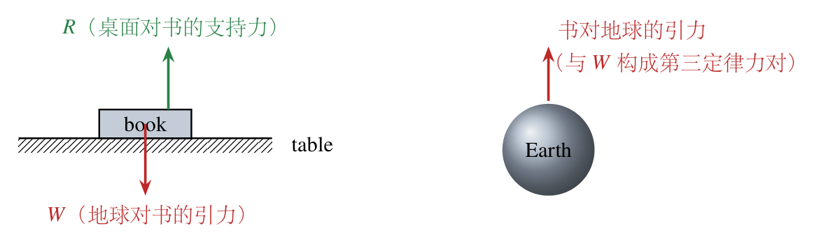
A book rests on a table. The book has weight $W$. Newton’s third law describes the relationship between pairs of forces. Which force pairs with $W$ to make a Newton’s third law pair of forces?
A the contact force acting on the book due to the table
B the contact force acting on the table due to the book
C the friction force between the book and the table
D the gravitational force acting on the Earth due to the book
$W$ 是地球对书的引力，它的配对力必须是同种力（引力）、作用在另一物体（地球）上：书对地球的引力。
3.1.4 运用 $F = ma$ 解题
步骤：
(1) 隔离物体，画受力分析图 (free-body diagram)；
(2) 规定正方向（通常取加速度方向）；
(3) 合力 $=$ 沿正方向的力之和 $-$ 反方向的力之和；
(4) 列 $F_{\text{合}} = ma$。
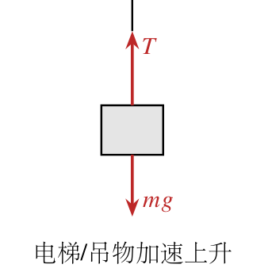
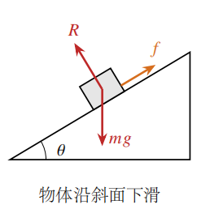
3.2 非匀变速运动：阻力与终端速度
3.2.1 摩擦力与阻力
摩擦力 (friction)：两个接触表面相对运动（或有相对运动趋势）时产生，方向与相对运动（趋势）方向相反。
黏滞力/阻力 (viscous force / drag)：物体在流体（液体或气体）中运动时受到的阻力；空气中的阻力称为空气阻力 (air resistance)。阻力方向总与物体相对流体的运动方向相反，大小随速度增大而增大。
能量转化：摩擦和阻力都把动能转化为内能（热），使系统机械能减少。
3.2.2 有空气阻力的下落与终端速度
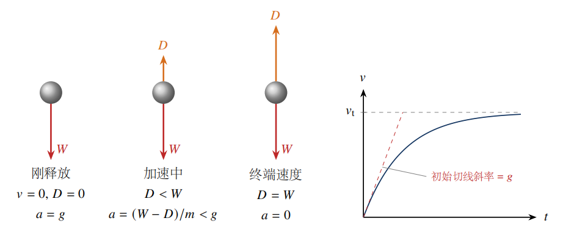
- 刚释放时：速度为零，阻力为零，合力 $= W$，加速度 $= g$；
- 速度增大：阻力 $D$ 增大，合力 $W - D$ 减小，加速度减小（$v$–$t$ 图斜率逐渐减小）；
- 终端速度：当 $D = W$ 时合力为零，加速度为零，速度达到最大并保持不变，称为终端速度 (terminal velocity)。
跳伞运动员 (Parachutist) 过程分析
以终端速度下落时打开降落伞，面积增大使阻力突然大于重量，合力向上，运动员减速；随速度减小阻力减小，直到再次 $D = W$，达到一个较小的新终端速度。
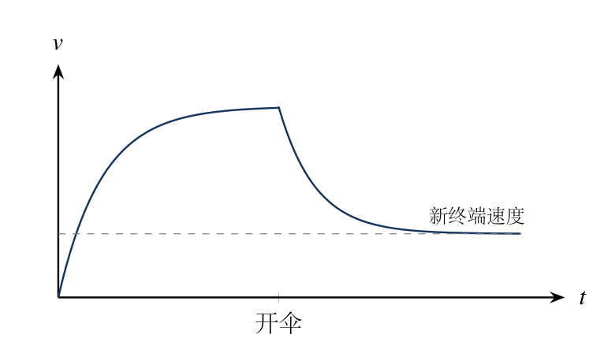
A hollow steel object is dropped from rest in air. The object reaches a terminal velocity $v$ before hitting the ground. Which change results in an increase in the terminal velocity?
A Drop a solid steel object of the same dimensions from the same height.
B Drop the object from a greater height.
C Throw the object downwards from the same height with an initial velocity $0.5v$.
D Throw the object upwards from the same height with an initial velocity $0.5v$.
终端速度时 $D = W$。外形相同时阻力只取决于速度；实心物体重量更大，需要更大的阻力才能平衡，所以终端速度更大。改变高度或初速度不改变 $D = W$ 的条件，终端速度不变。
3.3 动量守恒 Conservation of momentum
A、B 相互作用时间 $\Delta t$ 内，由第三定律 $F_{AB} = -F_{BA}$，由第二定律 $\Delta p_A = F_{BA}\Delta t$，$\Delta p_B = F_{AB}\Delta t$，所以 $\Delta p_A + \Delta p_B = 0$，总动量不变。
3.3.1 弹性碰撞与非弹性碰撞
| 物理量 / 碰撞类型 | 完全弹性碰撞 (perfectly elastic) | 非弹性碰撞 (inelastic) |
|---|---|---|
| 总动量 (Total momentum) | 守恒 (Conserved) | 守恒 (Conserved) |
| 总能量 (Total energy) | 守恒 (Conserved) | 守恒 (Conserved) |
| 总动能 (Total kinetic energy) | 守恒 (Conserved) | 减少（转化为内能、声能等） |
| 相对速率 (Relative speed) | 接近速率 $=$ 分离速率 | 分离速率 $<$ 接近速率 |
- 完全非弹性碰撞：碰后两物体粘在一起，以共同速度运动，动能损失最大（但动量仍守恒）。
- 爆炸/反冲：初总动量为零，炸开后各部分动量矢量和仍为零；总动能增加（化学能转化为动能）。
- 弹性碰撞的相对速度关系：$u_A - u_B = v_B - v_A$（一维，带符号）。这个式子与动量守恒联立，比解动能方程简单得多。
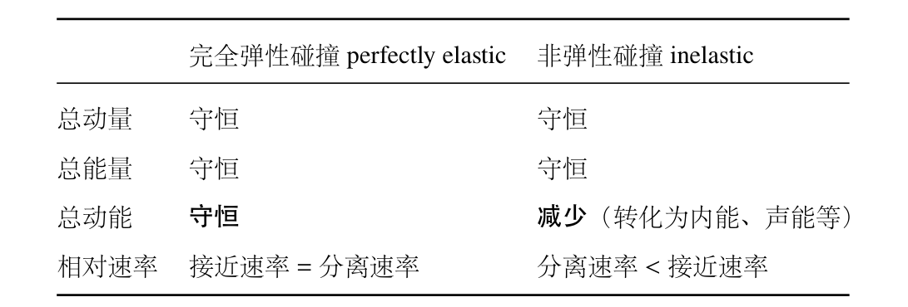
(a) Define momentum. [1]
(b) A ball X of mass $0.15\text{ kg}$ moves along a horizontal frictionless surface. The ball collides elastically with ball Y that is initially stationary. Balls X and Y have equal diameters but different masses. Figure 1.1 shows the variation with time of the velocity of ball X before, during and after the collision.
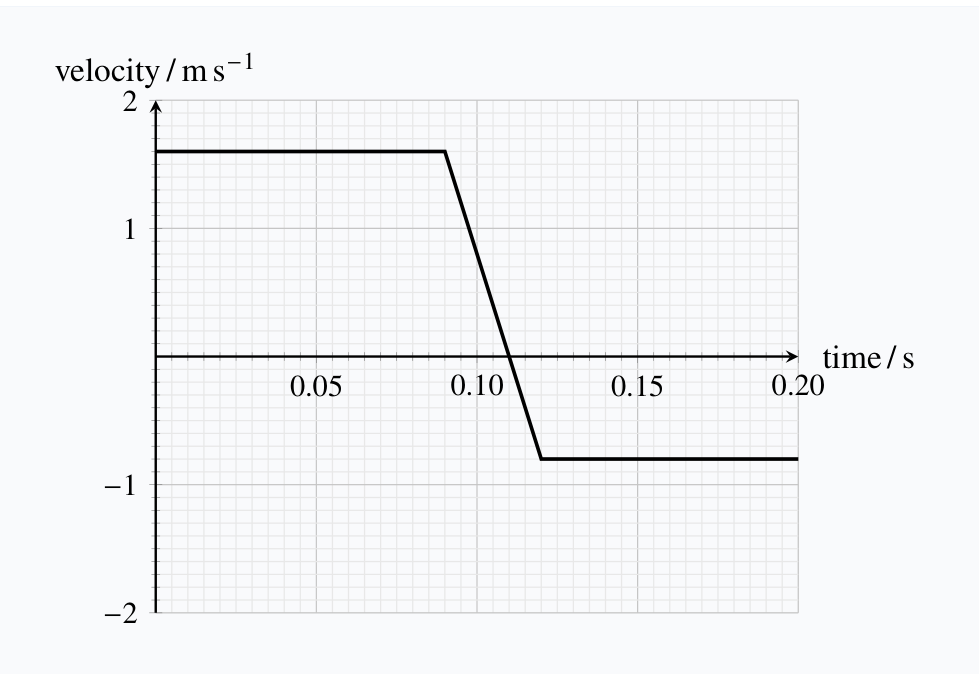
(i) Determine the magnitude of the acceleration of ball X during the collision. [2]
(ii) Determine the magnitude of the change in momentum of ball X due to the collision. [2]
(iii) Determine the total distance travelled by ball X during the collision. [2]
(c) (i) By considering relative speeds, explain why the velocity of ball Y after the collision must be $+0.80\text{ m}\cdot\text{s}^{-1}$. [2]
(ii) On Figure 1.1, sketch the variation of the velocity of ball Y with time between $\text{time} = 0$ and $\text{time} = 0.20\text{ s}$. [2]
(iii) Calculate the mass of ball Y. [2]
(a) 质量与速度的乘积 (product of mass and velocity)。注意不能写 speed。[B1]
(b)(i) $a = \frac{\Delta v}{\Delta t} = \frac{-0.8 - 1.6}{0.12 - 0.09}$ [C1]
$= -80$，大小 $80\text{ m}\cdot\text{s}^{-2}$ [A1]
(ii) $\Delta p = m\Delta v = 0.15 \times (-0.8 - 1.6)$ [C1]
$= -0.36$，大小 $0.36\text{ kg}\cdot\text{m}\cdot\text{s}^{-1}$ [A1]
(iii) 碰撞中 X 先减速到零（$0.020\text{ s}$ 内），再反向加速（$0.010\text{ s}$ 内）。路程是两段面积之和：
$s_1 = \frac{1}{2} \times 1.6 \times 0.020 = 0.016\text{ m}$，$s_2 = \frac{1}{2} \times 0.80 \times 0.010 = 0.004\text{ m}$ [C1]
总路程 $= 0.016 + 0.004 = 0.020\text{ m}$ [A1]
(c)(i) 弹性碰撞：相对接近速率 $=$ 相对分离速率。[B1]
接近速率 $= 1.6 - 0 = 1.6$，所以 $v_Y - (-0.80) = 1.6$，$v_Y = +0.80\text{ m}\cdot\text{s}^{-1}$。[B1]
(ii) 从 $(0, 0)$ 到 $(0.09, 0)$ 的水平线；从 $(0.09, 0)$ 到 $(0.12, 0.80)$ 的直线；从 $(0.12, 0.80)$ 到 $(0.20, 0.80)$ 的水平线。[B1+B1]
(iii) 动量守恒：$0.15 \times 1.6 = 0.15 \times (-0.80) + m_Y(0.80)$ [C1]
$0.36 = 0.80 m_Y \implies m_Y = 0.45\text{ kg}$ [A1]
3.3.2 二维动量守恒
二维问题中动量守恒对每个方向分别成立：把各动量分解到两个互相垂直的方向（$x$、$y$），分别列守恒方程；或直接画动量矢量三角形。
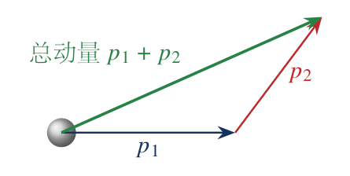
The diagram shows the view from above of two hard balls rolling along a horizontal table.
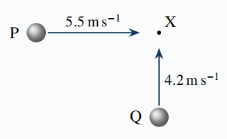
The balls each have a mass of $0.16\text{ kg}$. The initial velocity of ball P is $5.5\text{ m}\cdot\text{s}^{-1}$ and the initial velocity of ball Q is $4.2\text{ m}\cdot\text{s}^{-1}$. The initial velocity of ball P is perpendicular to the initial velocity of ball Q. The balls collide at point X where ball Q stops immediately. There are no resistive forces acting on the balls. What is the speed of ball P after the collision?
A $1.3\text{ m}\cdot\text{s}^{-1}$
B $5.5\text{ m}\cdot\text{s}^{-1}$
C $6.9\text{ m}\cdot\text{s}^{-1}$
D $9.7\text{ m}\cdot\text{s}^{-1}$
Q 碰后静止，所以碰后 P 的动量等于碰前两球的总动量（矢量和）。两球质量相同，可直接合成速度： $$v_P = \sqrt{5.5^2 + 4.2^2} = 6.9\text{ m}\cdot\text{s}^{-1}$$ 方向介于原来两速度方向之间。
3.4 本章小结 Summary
| 物理量 / 关系 | 公式 | 说明 |
|---|---|---|
| 动量 | $p = mv$ | 矢量，$\text{kg}\cdot\text{m}\cdot\text{s}^{-1}$ |
| 牛顿第二定律 | $F = \frac{\Delta p}{\Delta t}$，$F = ma$ | $F$ 为合力 |
| 重量 | $W = mg$ | 引力场对质量的作用 |
| 冲量 | $F\Delta t = \Delta p$ | $F$–$t$ 图面积 |
| 动量守恒 | $\sum p_{\text{前}} = \sum p_{\text{后}}$ | 无外力，矢量式 |
| 弹性碰撞 | $u_A - u_B = v_B - v_A$ | 动能也守恒 |
| 终端速度 | $D = W$（液体中 $D + U = W$） | 合力为零 |
3.5 本章练习 Practice questions
A ball of mass $0.20\text{ kg}$ is falling vertically through a liquid and has not reached terminal velocity. The upthrust on the ball is $0.65\text{ N}$. At one instant, the drag force on the ball is $0.50\text{ N}$. What is the magnitude of the resultant force on the ball at this instant?
A $0.81\text{ N}$
B $1.5\text{ N}$
C $1.8\text{ N}$
D $2.0\text{ N}$
向下：$W = 0.20 \times 9.81 = 1.96\text{ N}$；向上：浮力 $0.65\text{ N}$ 与阻力 $0.50\text{ N}$（球向下运动，阻力向上）。
合力 $= 1.96 - 0.65 - 0.50 = 0.81\text{ N}$（向下）。
A bowling ball of mass $4.50\text{ kg}$ falls a short distance vertically into a tray of sand. The bowling ball decelerates uniformly in the sand. The deceleration of the bowling ball when it is in contact with the sand is $8.00\times 10^2\text{ m}\cdot\text{s}^{-2}$. What is the magnitude of the force exerted on the bowling ball by the sand as it decelerates?
A $44.1\text{ N}$
B $3560\text{ N}$
C $3600\text{ N}$
D $3640\text{ N}$
取向上为正，加速度向上 $a = +800$。
$F - mg = ma \implies F = m(g + a) = 4.50 \times (9.81 + 800) = 3640\text{ N}$。（C 漏了重力。）
A toy car moves in a straight line. The graph shows the variation with time of the displacement of the car from its initial position.
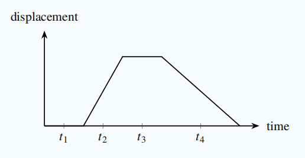
A student investigates whether the forces acting on the car are in equilibrium at four different times, $t_1$, $t_2$, $t_3$ and $t_4$. At which times are the forces acting on the car in equilibrium?
A $t_1$, $t_2$, $t_3$ and $t_4$
B $t_1$ and $t_3$ only
C $t_1$ only
D $t_3$ only
四个时刻图线都是直线段：$t_1$、$t_3$ 静止，$t_2$、$t_4$ 匀速（斜率恒定）。加速度都为零，合力为零，都处于平衡。
A skydiver is falling at terminal velocity. The skydiver opens her parachute. Which quantity increases in magnitude immediately after the skydiver opens her parachute?
A the resultant force acting on the skydiver
B the velocity of the skydiver
C the distance between the skydiver and the ground
D the weight of the skydiver
开伞前合力为零；开伞瞬间阻力突然增大，超过重力，合力从零变为向上的较大值，所以合力的大小增大。速度随后减小，离地距离继续减小，重量不变。
(a) State the principle of conservation of momentum. [2]
(b) A stationary boat of mass $160\text{ kg}$ floats on water. The mast of the boat is vertical. A sack of mass $23\text{ kg}$ is thrown at the boat, as shown in Figure 2.1.
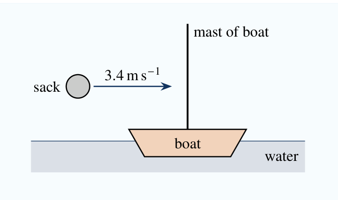
Immediately before colliding with the mast of the boat, the sack is travelling horizontally with a speed of $3.4\text{ m}\cdot\text{s}^{-1}$. The sack collides with the mast and remains in contact with it, without rebounding. Assume that resistive forces acting on the boat during the collision are negligible.
(i) Calculate the horizontal speed $v$ of the sack and boat immediately after the collision. [2]
(ii) The total kinetic energy of the sack and boat immediately before the collision is $E_1$. The total kinetic energy of the sack and boat immediately after the collision is $E_2$. Determine the ratio $E_2/E_1$. [3]
(iii) State and explain whether the collision between the sack and boat is elastic or inelastic. [1]
(a) 系统的总动量保持不变（或：作用前总动量 $=$ 作用后总动量），[M1]
条件：孤立系统 / 无合外力。[A1]
(b)(i) $23 \times 3.4 + 160 \times 0 = (23 + 160)v$ [C1]
$v = 0.43\text{ m}\cdot\text{s}^{-1}$ [A1]
(ii) $E_{\text{k}} = \frac{1}{2}mv^2$ [C1]
$\frac{E_2}{E_1} = \frac{\frac{1}{2}(183)(0.43)^2}{\frac{1}{2}(23)(3.4)^2} = \frac{16.9}{132.9}$ [C1]
$= 0.13$ [A1]
(iii) 碰后总动能小于碰前总动能（$E_2 < E_1$），所以是非弹性碰撞。[B1]
(a) Define force. [1]
(b) A rocket is launched vertically upwards from a launch pad. The initial mass of the rocket, with all of its fuel, is $2.83 \times 10^6\text{ kg}$. For the first $60\text{ s}$ after lift-off, the rocket engine burns fuel at a rate of $2.0 \times 10^4\text{ kg}\cdot\text{s}^{-1}$ to produce a constant thrust force. Figure 1.1 shows the variation of the speed of the rocket with time for the first $60\text{ s}$ after lift-off.
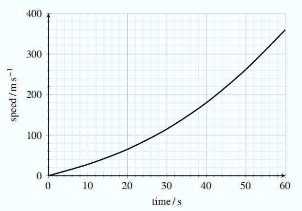
Assume that the drag force acting on the rocket is negligible over this time.
(i) By considering the mass of unburnt fuel in the rocket, explain why the speed of the rocket does not increase linearly with time, despite the thrust force from the engine being constant. [2]
(ii) Describe how Figure 1.1 may be used to determine the acceleration of the rocket at lift-off. No calculations are required. [1]
(iii) The acceleration of the rocket at lift-off is $2.5\text{ m}\cdot\text{s}^{-2}$. Determine a value for the thrust force $T$ produced by the rocket engine. [2]
(iv) Determine the kinetic energy of the rocket at time $60\text{ s}$ after lift-off. [3]
(v) Use Figure 1.1 to estimate the height of the rocket above the launch pad at time $60\text{ s}$ after lift-off. Explain your reasoning. [2]
(c) The mass of the emitted exhaust gases is the same as the mass of fuel burnt by the engine. Use your answer in (b)(iii) to calculate the speed at which the exhaust gases are emitted from the rocket. [2]
(d) In practice, the drag force on the rocket is not negligible. State the effect of the drag force on the acceleration at lift-off and on the kinetic energy at time $60\text{ s}$ (less / same / greater), compared with the values that assumed negligible drag force. [2]
(a) 力是动量的变化率 (rate of change of momentum)。[B1]
(b)(i) 燃料不断燃烧，火箭（含剩余燃料）的质量不断减小；[B1]
推力恒定、重力减小，合力增大而质量减小，由 $a = F/m$，加速度不断增大，所以速度–时间图的斜率增大，不是直线。[B1]
(ii) 在 $t = 0$ 处作曲线的切线，切线的斜率即为起飞时的加速度。[B1]
(iii) 起飞时 $T - mg = ma \implies T = m(g + a) = 2.83 \times 10^6 \times (9.81 + 2.5)$ [C1]
$T = 3.5 \times 10^7\text{ N}$ [A1]
(iv) $t = 60\text{ s}$ 时质量 $m = 2.83 \times 10^6 - 60 \times 2.0 \times 10^4 = 1.63 \times 10^6\text{ kg}$；[C1]
由图读出 $v = 360\text{ m}\cdot\text{s}^{-1}$，$E_{\text{k}} = \frac{1}{2}(1.63 \times 10^6)(360)^2$ [C1]
$= 1.1 \times 10^{11}\text{ J}$ [A1]
(v) 高度 $=$ 速度–时间图下的面积（火箭竖直上升，速率 $=$ 速度大小）。[B1]
用梯形近似（每 $10\text{ s}$ 一段）：$10 \times (14 + 46.5 + 90 + 147.5 + 221 + 311) \approx 8.3 \times 10^3\text{ m}$，曲线下凸，实际略小，约 $8 \times 10^3\text{ m}$。[A1]
(c) 推力等于排出气体的动量变化率：$T = \frac{\Delta m}{\Delta t}v$ [C1]
$v = \frac{3.48 \times 10^7}{2.0 \times 10^4} = 1.7 \times 10^3\text{ m}\cdot\text{s}^{-1}$ [A1]
(d) 起飞时速度为零，阻力为零，加速度不变 (same)；[B1]
飞行中阻力做负功、合力减小，$60\text{ s}$ 时速度更小，动能更小 (less)。[B1]
第四章 力、密度与压强 Forces, density and pressure
Forces, density and pressure — 掌握重心概念、力矩与力偶矩定义及计算（$\tau = Fd$）、平衡条件（合力为零与合力矩为零）及共面力矢量三角形、密度与压强定义、液体静压强公式推导（$\Delta p = \rho g \Delta h$）、浮力成因与阿基米德原理（$F = \rho g V$）及终端速度受力分析。
00 考纲学习目标 Syllabus Learning Outcomes
4.1 力的转动效果 Turning effects of forces
4.1.1 重心
4.1.2 力矩
$d = r\sin\theta$（$r$ 为 O 到作用点距离），等价于 $(F\sin\theta)\times r$。
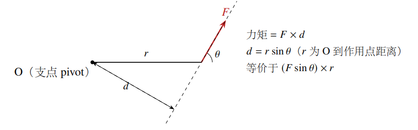
4.1.3 力偶与力偶矩
“The torque of a couple is the product of one of the forces and the perpendicular distance between the lines of action of the forces.”
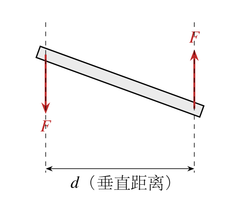
Two forces, each of magnitude $F$, act on a beam of length $x$ as shown.
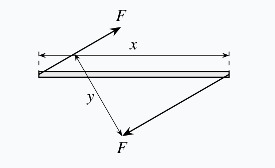
The perpendicular distance between the forces is $y$ and the two forces form a couple. What is the torque of the couple?
A $Fx$
B $2Fx$
C $Fy$
D $2Fy$
力偶矩 = 一个力 × 两力作用线间的垂直距离 = $Fy$。$x$ 是梁长，不是垂直距离；也不要乘 2。
4.2 平衡 Equilibrium
(1) 合力为零 (resultant force is zero)：任意方向上的分力之和为零；
(2) 合力矩为零 (resultant torque/moment about any point is zero)。
- 选取有未知力（尤其是支点反力）作用的点为力矩中心，可以消去该未知力。
- 均匀杆的重量作用在中点。
- 只有合力为零而合力矩不为零（如力偶）时物体会转动，不平衡；只有合力矩为零而合力不为零时物体会平动，也不平衡。
4.2.1 三力平衡与矢量三角形
若物体在三个共面力作用下平衡，则：
- 三个力首尾相接组成一个闭合三角形（triangle of forces）；
- 三个力的作用线（若不平行）交于一点。
- 可用正弦定理、作图或分解法求解。
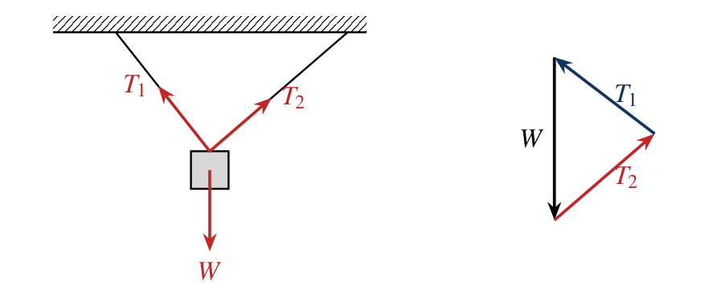
(a) State the conditions required for an object to be in equilibrium. [2]
(b) A block rests in equilibrium on the centre of a uniform horizontal plank. The block is attached to two ropes, each of which passes over a fixed pulley and then attaches to an end of the plank as shown in Figure 2.1.
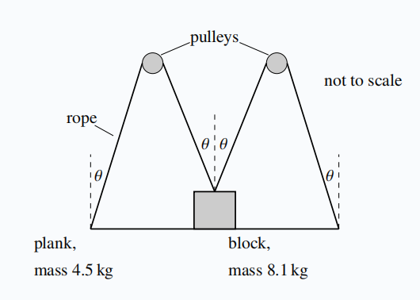
Where the ropes attach to the block and to the plank, the angle between the ropes and the vertical is $\theta$. There is negligible friction between the pulleys and the ropes. The mass of the block is $8.1\text{ kg}$. The mass of the plank is $4.5\text{ kg}$. Figure 2.2 shows the directions of the forces acting on the plank and the block. The weight of the plank is $W_\text{P}$, the weight of the block is $W_\text{B}$, the tension in each rope is $T$ and the forces that the plank and the block exert on each other each have magnitude $R$.
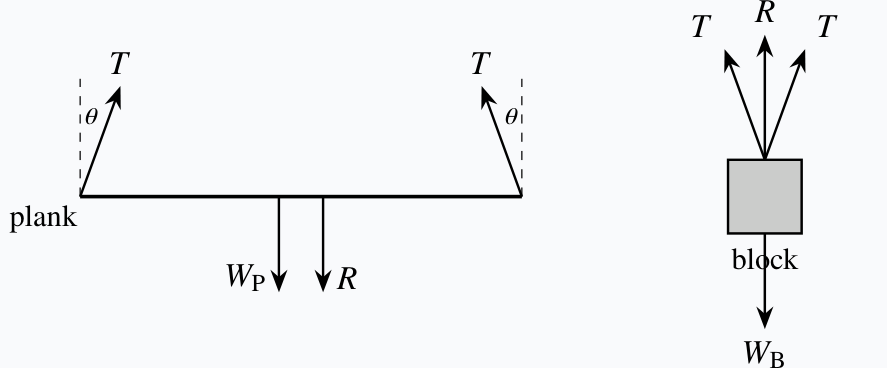
(i) Use Figure 2.2 to show that $R + W_\text{P} = W_\text{B} - R$. [2]
(ii) Use the equation in (b)(i) to calculate the magnitude of $R$. [2]
(a) 合力（任意方向）为零； [B1]
对任意点的合力矩为零。 [B1]
(b)(i) 木板竖直方向：$2T \cos\theta = R + W_\text{P}$ [M1]
木块竖直方向：$2T \cos\theta + R = W_\text{B}$，即 $2T \cos\theta = W_\text{B} - R$。两式联立得 $R + W_\text{P} = W_\text{B} - R$。 [A1]
（注意：$T$ 与竖直方向夹角为 $\theta$，竖直分量用 $\cos\theta$，误用 $\sin\theta$ 只得 1 分。）
(ii) $2R = W_\text{B} - W_\text{P} = (8.1 - 4.5) \times 9.81$ [C1]
$R = 18\text{ N}$ [A1]
4.3 密度与压强 Density and pressure
4.3.1 液体压强公式的推导
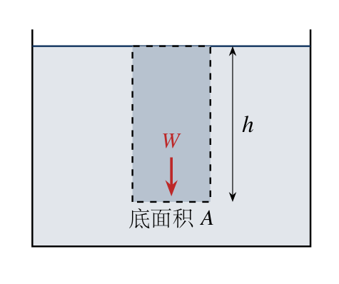
想象液面下深度 $\Delta h$ 处有一个水平面积 $A$，其上方液柱的重量全部压在该面积上： $$\Delta p = \frac{F}{A} = \frac{mg}{A} = \frac{\rho V g}{A} = \frac{\rho (A\Delta h) g}{A} = \rho g \Delta h.$$
4.3.2 浮力与阿基米德原理
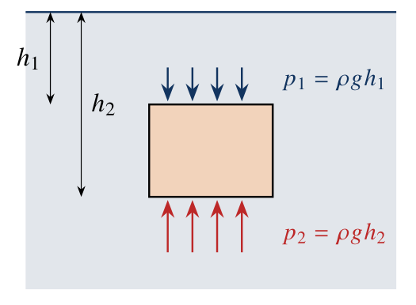
浸在流体中的物体，下表面比上表面更深，受到的压强更大，因此向上的压力大于向下的压力，二者之差就是浮力 (upthrust)。
上表面受到的向下压力 $F_1 = p_1 A$，下表面受到的向上压力 $F_2 = p_2 A$，侧面压力相互抵消。因此 $$U = F_2 - F_1 = \rho g (h_2 - h_1) A = \rho g V.$$
- 浮力与物体自身的密度、重量、浸没深度（完全浸没后）都无关。
- 漂浮：浮力 = 重量，$\rho_{\text{液}} g V_{\text{浸}} = \rho_{\text{物}} g V_{\text{物}}$，所以浸入比例 $\frac{V_{\text{浸}}}{V_{\text{物}}} = \frac{\rho_{\text{物}}}{\rho_{\text{液}}}$。液体密度越大，物体浮得越高。
A hydrometer is a device for measuring the density of liquids. It consists of a weighted bulb at the bottom of a calibrated tube.
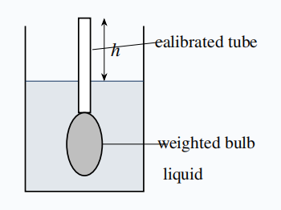
The hydrometer is floating in a liquid at room temperature. The length of the tube above the level of the liquid is $h$. Which change causes $h$ to decrease?
A adding more liquid into the cylinder
B decreasing the density of the liquid
C increasing the air pressure above the liquid
D increasing the density of the liquid
漂浮时浮力 = 重量（不变），$\rho g V_{\text{浸}} = W$。液体密度减小，需要排开更多体积，所以浸得更深，露出部分 $h$ 减小。加液体不改变浸入体积；大气压同时作用于上下，不影响。
An object is held at rest just below the surface of a liquid of uniform density as shown in Figure 4.1.
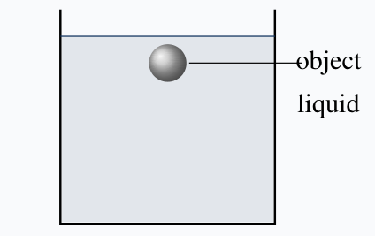
The object is released and accelerates downwards until it reaches terminal velocity. The magnitude of the weight of the object is $W$. The magnitude of the upthrust acting on the object is $U$. The magnitude of the drag force acting on the object is $D$.
(a) By placing one tick in each row, complete Table 4.1 to show what happens to the magnitude of the three forces acting on the object as it accelerates. [3]
| force | increases | stays the same | decreases |
|---|---|---|---|
| $W$ | |||
| $D$ | |||
| $U$ |
(b) State an expression, in terms of $W$, $D$ and $U$, that shows the relationship between the forces acting on the object when the object is at its terminal velocity. [1]
(c) The object has a mass of $0.070\text{ kg}$ and a volume of $1.0 \times 10^{-5}\text{ m}^3$. The density of the liquid is $1100\text{ kg}\cdot\text{m}^{-3}$. Calculate $D$ when the object is at terminal velocity. [3]
(a)
$W$：stays the same [B1]
$D$：increases（速度增大，阻力增大） [B1]
$U$：stays the same（完全浸没后排开体积不变，$U = \rho g V$ 不变） [B1]
(b) $W = D + U$ [A1]
(c) $W = 0.070 \times 9.81 = 0.69\text{ N}$ [C1]
$U = \rho g V = 1100 \times 9.81 \times 1.0 \times 10^{-5} = 0.11\text{ N}$ [C1]
$D = W - U = 0.69 - 0.11 = 0.58\text{ N}$ [A1]
4.4 本章小结 Summary
| 物理量 / 关系 | 公式 | 说明 |
|---|---|---|
| 力矩 | $M = Fd$ | $d$ 为到作用线的垂直距离 |
| 力偶矩 | $\tau = Fd$ | 一个力 × 两作用线间距 |
| 平衡条件 | $\sum F = 0$，$\sum M = 0$ | 力矩对任意点 |
| 密度 | $\rho = m/V$ | $\text{kg}\cdot\text{m}^{-3}$ |
| 压强 | $p = F/A$ | $\text{Pa} = \text{N}\cdot\text{m}^{-2}$ |
| 液体压强 | $\Delta p = \rho g \Delta h$ | 只与竖直深度有关 |
| 浮力 | $F = \rho g V$ | $\rho$ 为流体密度 |
4.5 本章练习 Practice questions
Torque is the result of a pair of forces acting to cause a turning effect. Torque is calculated as the product of force and distance. Which row gives the correct description of the force and the distance used to calculate the torque of a couple?
| force | distance | |
|---|---|---|
| A | the magnitude of one force | the perpendicular distance between the two forces |
| B | the sum of the magnitudes of both forces | the perpendicular distance between the two forces |
| C | the magnitude of one force | the perpendicular distance from one force to the mid-point between the forces |
| D | the resultant of the two forces | the perpendicular distance from one force to the mid-point between the forces |
力偶矩 = 一个力的大小 × 两力作用线之间的垂直距离。
A horizontal uniform rod of length $10.0\text{ cm}$ is shown.
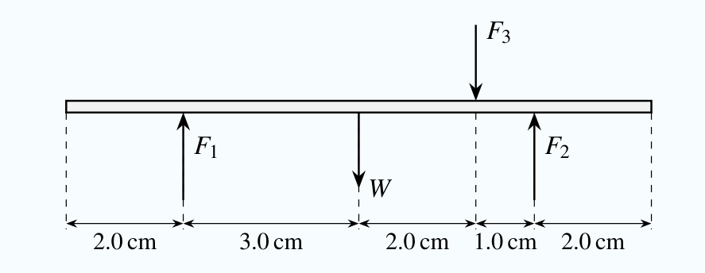
The rod is acted on by its weight $W$ and by three forces $F_1$, $F_2$ and $F_3$. The rod is in equilibrium. All the forces are vertical. $F_2 = \frac{4}{3}F_3$. What is the ratio $F_1/F_2$?
A $\frac{1}{4}$
B $\frac{1}{2}$
C $1$
D $2$
对重心（$W$ 的作用点，$x = 5\text{ cm}$）取力矩，消去 $W$：
逆时针：$F_2 \times 3.0$；顺时针：$F_1 \times 3.0 + F_3 \times 2.0$。
$3F_2 = 3F_1 + 2F_3 = 3F_1 + 2 \times \frac{3}{4}F_2 = 3F_1 + 1.5F_2$，得 $F_1 = 0.5F_2$，比值 = $\frac{1}{2}$。
The density of paper is $800\text{ kg}\cdot\text{m}^{-3}$. A typical sheet of paper has a width of $210\text{ mm}$ and a length of $300\text{ mm}$. The thickness of a pack of 500 sheets of paper is $50\text{ mm}$. What is the mass of a single sheet of paper?
A $0.5\text{ g}$
B $5\text{ g}$
C $50\text{ g}$
D $500\text{ g}$
每张厚度 = $50 / 500 = 0.10\text{ mm}$。体积 $V = 0.210 \times 0.300 \times 1.0 \times 10^{-4} = 6.3 \times 10^{-6}\text{ m}^3$。$m = \rho V = 800 \times 6.3 \times 10^{-6} = 5.0 \times 10^{-3}\text{ kg} = 5\text{ g}$。
Which statement about equilibrium is correct?
A If a system is in equilibrium then there must be no forces acting on it.
B If a system is in equilibrium then there must be no resultant torque on it.
C If there are no moments due to forces acting on a system then it must be in equilibrium.
D If there is no resultant force acting on a system then it must be in equilibrium.
平衡要求合力和合力矩都为零，所以“平衡 ⇒ 合力矩为零”正确。A：可以受力，只要合力为零；C、D 只满足一个条件，不一定平衡。
An object is submerged in a liquid. Which statement about the upthrust acting on the object is correct?
A It is proportional to the density of the liquid.
B It is proportional to the density of the object.
C It is proportional to the total depth of the liquid.
D It is proportional to the weight of the object.
$F = \rho g V$，$\rho$ 是液体密度，所以浮力与液体密度成正比，与物体密度、重量、液体深度无关。
A uniform square picture is attached to a wire and hangs in equilibrium from a pin at point P, as shown in Figure 4.1.
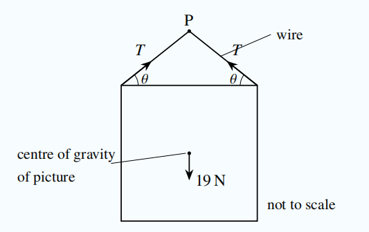
The picture has weight $19\text{ N}$ and its centre of gravity is directly below P. The top side of the picture is horizontal. The wire forms an angle $\theta$ with the horizontal. The tension $T$ in the wire is $13\text{ N}$.
(i) Define the moment of a force about a point. [1]
(ii) Explain why the moment of the weight about P is zero. [1]
(iii) Calculate $\theta$. [2]
(i) 力与该点到力的作用线的垂直距离的乘积。 [B1]
(ii) 重力的作用线通过 P 点（P 到重力作用线的垂直距离为零），所以力矩为零。 [B1]
(iii) 竖直方向平衡：$2T \sin\theta = W$ [C1]
$\sin\theta = \frac{19}{2 \times 13} = 0.731$，$\theta = 47^\circ$ [A1]
第五章 功、能量与功率 Work, energy and power
掌握功的定义与计算（$W = Fs\cos\theta$）、$F$–$s$ 图像下的面积；推导重力势能变化公式（$\Delta E_\text{p} = mg\Delta h$）与动能公式（$E_\text{k} = \frac{1}{2}mv^2$）；理解能量守恒定律及其在有阻力系统中的应用；掌握效率、功率定义与 $P = Fv$ 的推导及综合题型求解。
00 考纲学习目标 Syllabus Learning Outcomes
5.1 功 Work
力与位移成夹角 $\theta$ 时的功
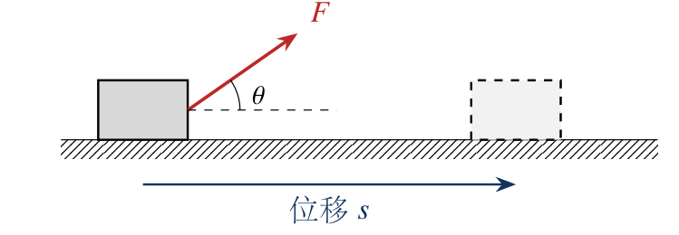
“力与位移成角 $\theta$ 时，$W = Fs\cos\theta$。” 其中 $F\cos\theta$ 是力沿位移方向的力分量。
- $\theta = 90^\circ$ 时力不做功：如匀速圆周运动的向心力、水平移动物体时的重力和支持力。
- 力与位移方向相反（如摩擦力、阻力）时做负功：物体的能量减少，称为“克服阻力做功”（work done against resistive forces）。
- $F$–$s$ 图下的面积等于所做的功：适用于变力，如弹簧。
5.2 重力势能与动能
5.2.1 重力势能 Gravitational potential energy
推导：在均匀重力场中把质量为 $m$ 的物体匀速提高 $\Delta h$，所需外力等于重量 $mg$，外力做功： $$W = Fs = (mg)(\Delta h)$$ 这些功全部储存为重力势能，所以：
适用条件与特征：重力势能的变化只取决于竖直高度变化，与路径无关；水平移动物体时 $E_\text{p}$ 不变。
5.2.2 动能 Kinetic energy
推导：质量为 $m$ 的物体从静止开始，在恒定合力 $F$ 作用下通过位移 $s$，速度达到 $v$。 $$v^2 = u^2 + 2as = 0 + 2as \implies as = \frac{1}{2}v^2$$ 合力做功： $$W = Fs = (ma)s = m(as) = \frac{1}{2}mv^2$$ 这些功全部转化为物体的动能，所以：
- $E_\text{k} \propto v^2$：速度从 $10$ 增加到 $20$ 与从 $70$ 增加到 $80$ 时，动能增量不同，$\Delta E_\text{k} \propto (v_2^2 - v_1^2)$。
- 动能与动量的关系：$E_\text{k} = \frac{p^2}{2m}$。
5.3 能量守恒 Conservation of energy
有阻力时的能量方程（最常用）
A ball is projected from the ground at point X. The ball then reaches its maximum height at point Y before landing on lower ground at point Z. The diagram shows the path of the ball.
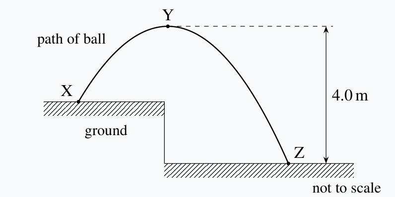
The ball leaves the ground at X with a kinetic energy of $5.2\text{ J}$. The ball has a kinetic energy of $9.6\text{ J}$ when it hits the ground at Z. The weight of the ball is $2.0\text{ N}$. The vertical height of Y above Z is $4.0\text{ m}$. Air resistance is negligible. What is the vertical height of Y above X?
A $1.8\text{ m}$
B $2.0\text{ m}$
C $2.2\text{ m}$
D $2.6\text{ m}$
X 到 Z：动能增加 $9.6 - 5.2 = 4.4\text{ J}$ = 重力势能减少 = $W\Delta h$，所以 X 比 Z 高 $4.4/2.0 = 2.2\text{ m}$。Y 比 X 高 $4.0 - 2.2 = 1.8\text{ m}$。
5.4 效率与功率 Efficiency and power
5.4.1 $P = Fv$ 的推导
恒力 $F$ 使物体以速度 $v$ 沿力方向运动，在 $\Delta t$ 时间内移动 $\Delta s$： $$P = \frac{W}{\Delta t} = \frac{F\Delta s}{\Delta t} = F\left(\frac{\Delta s}{\Delta t}\right) = Fv$$
Which equation is not required to derive the formula $P = Fv$?
A $W = Fs$
B $v = \frac{s}{t}$
C $F = ma$
D $P = \frac{W}{t}$
推导只用到 $P = W/t$、$W = Fs$、$v = s/t$，不需要 $F = ma$。
An object of weight $3.0\text{ N}$ is moved vertically at a constant velocity $v$ by an electric motor. The electric motor has an efficiency of $25\%$. The object travels a vertical distance of $1.2\text{ m}$ in $3.0\text{ s}$. Assume that the useful output energy of the motor is equal to the increase in gravitational potential energy of the object. What is the electric power supplied to the motor?
A $0.3\text{ W}$
B $1.2\text{ W}$
C $4.8\text{ W}$
D $30\text{ W}$
有用输出功率 $= \frac{mg\Delta h}{t} = \frac{3.0 \times 1.2}{3.0} = 1.2\text{ W}$；输入功率 $= \frac{1.2}{0.25} = 4.8\text{ W}$。
An electric train of mass $1.5 \times 10^4\text{ kg}$ travels up a slope at a constant speed as shown in Figure 4.1.
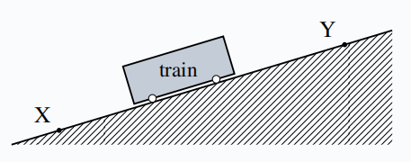
At point X, the train has gravitational potential energy $7.4\text{ MJ}$. At point Y, the train has gravitational potential energy $13.0\text{ MJ}$. The train takes a time of $52\text{ s}$ to move from X to Y. The kinetic energy of the train is $1.3 \times 10^5\text{ J}$.
(a) Calculate the speed of the train. [3]
(b) The train is powered by an electric motor. The useful output power of the motor is $1.1 \times 10^5\text{ W}$.
(i) Define power. [1]
(ii) Determine the resistive force $F$ acting on the train as it moves from point X to point Y. [3]
(iii) The current in the motor is $95\text{ A}$. The potential difference (p.d.) across the motor is $1400\text{ V}$. Calculate the percentage efficiency of the motor. [3]
(a) $E_\text{k} = \frac{1}{2}mv^2$ [C1]
$v^2 = \frac{2 \times 1.3 \times 10^5}{1.5 \times 10^4}$ [C1]
$v = 4.2\text{ m s}^{-1}$ [A1]
(b)(i) 单位时间内做的功 (work done per unit time)。 [B1]
(b)(ii) 电机有用输出功 = 重力势能增加 + 克服阻力做功：$W = Pt$，$W_\text{阻} = Fs$ [C1]
$W_\text{阻} = 1.1 \times 10^5 \times 52 - (13.0 - 7.4) \times 10^6 = 1.2 \times 10^5\text{ J}$ [C1]
$s = vt = 4.2 \times 52$，$F = \frac{1.2 \times 10^5}{4.2 \times 52} = 550\text{ N}$ [A1]
(b)(iii) 输入功率 $P = IV = 95 \times 1400 = 1.33 \times 10^5\text{ W}$ [C1]
$\text{efficiency} = \frac{1.1 \times 10^5}{1.33 \times 10^5} \times 100\%$ [C1]
$= 83\%$ [A1]
5.5 本章小结 Summary
| 物理量 / 关系 | 公式 | 说明 |
|---|---|---|
| 功 | $W = Fs\cos\theta$ | 标量，$\text{J}$ |
| 重力势能变化 | $\Delta E_\text{p} = mg\Delta h$ | 均匀重力场 |
| 动能 | $E_\text{k} = \frac{1}{2}mv^2$ | 合力做功 = $\Delta E_\text{k}$ |
| 效率 | $\text{有用输出} / \text{总输入} \times 100\%$ | 能量或功率 |
| 功率 | $P = \frac{W}{t} = Fv$ | $\text{W} = \text{J s}^{-1}$ |
| 能量守恒 | 初能 = 末能 + 克服阻力做功 | 封闭系统总能量守恒 |
5.6 本章练习 Practice questions
A parent and a child run from rest at the bottom of a stairway to the top of the stairway. Both take the same time. The mass of the parent is greater than the mass of the child. Which physical quantity for the parent and for the child has the same numerical value as a result of climbing the stairway?
A average kinetic energy
B average velocity
C gravitational potential energy gained
D power generated
位移相同、时间相同，所以平均速度相同。动能、势能、功率都与质量有关，质量不同则不同。
An alpha particle has $2.2 \times 10^{-13}\text{ J}$ of kinetic energy. What is the speed of the alpha particle?
A $4.1 \times 10^6\text{ m s}^{-1}$
B $5.8 \times 10^6\text{ m s}^{-1}$
C $8.1 \times 10^6\text{ m s}^{-1}$
D $1.2 \times 10^7\text{ m s}^{-1}$
$\alpha$ 粒子质量 $\approx 4\text{ u} = 4 \times 1.66 \times 10^{-27} = 6.64 \times 10^{-27}\text{ kg}$。$v = \sqrt{\frac{2E_\text{k}}{m}} = \sqrt{\frac{2 \times 2.2 \times 10^{-13}}{6.64 \times 10^{-27}}} = 8.1 \times 10^6\text{ m s}^{-1}$。
A small diesel engine uses a volume of $1.5 \times 10^4\text{ cm}^3$ of fuel per hour to produce a useful power output of $40\text{ kW}$. Assume that $34\text{ kJ}$ of energy is transferred to the engine when it uses $1.0\text{ cm}^3$ of fuel. What is the rate of transfer from the engine of energy that is wasted?
A $102\text{ kW}$
B $142\text{ kW}$
C $182\text{ kW}$
D $470\text{ kW}$
输入功率 $= \frac{1.5 \times 10^4 \times 34 \times 10^3}{3600} = 1.42 \times 10^5\text{ W} = 142\text{ kW}$。浪费功率 $= 142 - 40 = 102\text{ kW}$。
A small ball is projected into the air from horizontal ground. The diagram shows part of the path of the ball.
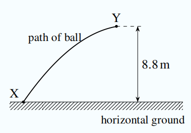
The ball leaves the ground at point X with a kinetic energy of $8.0\text{ J}$. A short time later, the ball is at point Y where it has a kinetic energy of $3.5\text{ J}$. Point Y is at a vertical height of $8.8\text{ m}$ above the ground. Air resistance is negligible. What is the mass of the ball?
A $0.041\text{ kg}$
B $0.052\text{ kg}$
C $0.093\text{ kg}$
D $0.13\text{ kg}$
$\Delta E_\text{p} = 8.0 - 3.5 = 4.5\text{ J} = mg\Delta h$，所以 $m = \frac{4.5}{9.81 \times 8.8} = 0.052\text{ kg}$。
When the speed of an object is increased from $10\text{ m s}^{-1}$ to $20\text{ m s}^{-1}$, its kinetic energy increases by $E$. What is the increase in the kinetic energy of the object when its speed increases from $70\text{ m s}^{-1}$ to $80\text{ m s}^{-1}$?
A $E$
B $4E$
C $5E$
D $7E$
$\Delta E_\text{k} \propto (v_2^2 - v_1^2)$：$\frac{80^2 - 70^2}{20^2 - 10^2} = \frac{1500}{300} = 5$。
A rollercoaster carriage of mass $280\text{ kg}$ travels over a raised section of track, as illustrated in Figure 3.1.
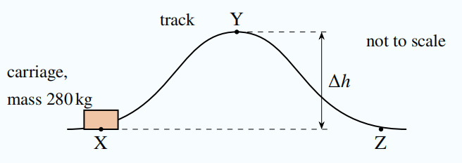
At position X, the carriage has kinetic energy $16.1\text{ kJ}$. At position Y, the carriage has kinetic energy $1.3\text{ kJ}$. The length of track between X and Y is $23\text{ m}$. In moving from X to Y the carriage does $5.1\text{ kJ}$ of work against resistive forces.
(a)(i) Calculate the average resistive force acting on the carriage between X and Y. [2]
(a)(ii) Calculate the change in height $\Delta h$ between X and Y. [3]
(b) The carriage travels further along the track to point Z. State and explain whether the speed of the carriage at Z is greater than, less than or the same as the speed of the carriage at X. [1]
(a)(i) $F = \frac{W}{d} = \frac{5.1 \times 10^3}{23}$ [C1]
$= 220\text{ N}$ [A1]
(a)(ii) $\Delta E_\text{p} = 16.1 \times 10^3 - 1.3 \times 10^3 - 5.1 \times 10^3 = 9.7 \times 10^3\text{ J}$ [C1]
$\Delta E_\text{p} = mg\Delta h$ [C1]
$\Delta h = \frac{9.7 \times 10^3}{280 \times 9.81} = 3.5\text{ m}$ [A1]
(b) X、Z 高度相同，但从 X 到 Z 一直在克服阻力做功，Z 处动能小于 X 处，所以 Z 处速度较小。 [B1]
第六章 固体的形变 Deformation of solids
掌握固体形变的基本术语（拉力、压力、伸长量、压缩量、比例极限）；掌握胡克定律（$F = kx$）及弹簧串并联；理解应力（$\sigma = F/A$）、应变（$\varepsilon = x/L$）与杨氏模量（$E = \sigma/\varepsilon$）的定义；掌握测定金属丝杨氏模量的实验方法与误差分析；理解弹性形变、塑性形变与弹性极限；掌握 $F$–$x$ 图下功与弹性势能的计算（$E_\text{p} = \frac{1}{2}Fx = \frac{1}{2}kx^2$）。
00 考纲学习目标 Syllabus Learning Outcomes
6.1 拉伸、压缩与胡克定律
6.1.1 基本术语
- 拉力 (tensile force)：使物体伸长的一对方向相反、向外的力。
- 压力 (compressive force)：使物体缩短的一对方向相反、向内的力。
- 负载 (load)：施加在物体上使其形变的力。
- 伸长量 (extension) $x$：拉伸后长度 $-$ 原长；压缩量 (compression)：原长 $-$ 压缩后长度。（注意不是“拉伸后的长度”。）
- 比例极限 (limit of proportionality)：伸长量与负载成正比的最大负载点，超过此点 $F$–$x$ 图不再是直线。
6.1.2 弹簧的串联与并联
Identical springs are joined in four arrangements. Which arrangement has the same spring constant as a single spring?
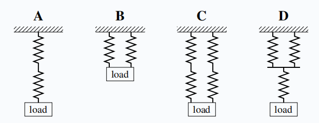
A：串联 $k/2$；B：并联 $2k$；C：每支串联为 $k/2$，两支并联 $= k/2 + k/2 = k$；D：$2k$ 与 $k$ 串联，$\frac{1}{k_\text{总}} = \frac{1}{2k} + \frac{1}{k}$，$k_\text{总} = \frac{2}{3}k$。
6.2 应力、应变与杨氏模量
同种材料、不同粗细和长度的金属丝，劲度系数 $k$ 不同。为描述材料本身的性质，引入应力和应变。
6.2.1 测定金属丝的杨氏模量
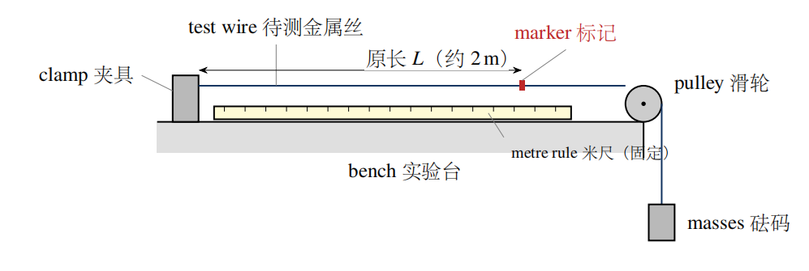
- 用米尺测量夹具到标记的原长 $L$（约 $2\text{ m}$，长金属丝使伸长量足够大，减小百分比不确定度）。
- 用千分尺 (micrometer screw gauge) 在金属丝不同位置、不同方向测量直径 $d$ 若干次取平均，$A = \frac{\pi d^2}{4}$。
- 先挂一个小砝码把金属丝拉直（消除弯曲），记下标记的初始读数。
- 逐次增加砝码，记录每次负载 $F = mg$ 和标记的位置，求伸长量 $x$。
- 逐次减载，检查伸长量能否恢复（确认未超过弹性极限）。
- 作 $F$–$x$ 图，取直线部分斜率 $= F/x$，则 $E = \text{斜率} \times \frac{L}{A}$。
(a) Define the Young modulus of a material. [1]
(b) A long, thin thread of high-density polythene has a uniform cross-section. The thread is suspended from one end so that it hangs vertically. The thread has a mass of $0.018\text{ kg}$ and a cross-sectional area of $2.6 \times 10^{-6}\text{ m}^2$. High-density polythene has a density of $960\text{ kg m}^{-3}$ and a Young modulus of $8.0 \times 10^8\text{ Pa}$.
(b)(i) Show that the length of the thread is $7.2\text{ m}$. [2]
(b)(ii) Show that the stress at the top of the thread due to its own weight is $6.8 \times 10^4\text{ Pa}$. [2]
(b)(iii) Figure 2.1 shows the variation with distance from the top of the thread of the stress in the thread due to its own weight. Suggest an explanation for the fact that the variation shown in Figure 2.1 is linear. [2]
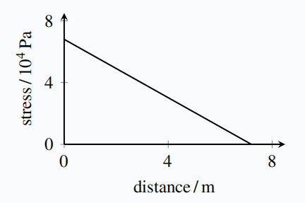
(c) The thread in (b) is now laid horizontally on a frictionless bench. A tensile force is applied to the ends of the thread so that there is a uniform stress throughout the thread of $6.8 \times 10^4\text{ Pa}$.
(c)(i) Calculate the extension of the thread. [2]
(c)(ii) Calculate the elastic potential energy of the thread. [2]
(d) Suggest, with a reason, whether the total extension of the vertically suspended thread in (b) is less than, equal to or greater than the answer in (c)(i). [1]
(a) 应力与应变之比 (stress per unit strain)。 [B1]
(b)(i) $\rho = m/V$，$V = \frac{0.018}{960} = 1.875 \times 10^{-5}\text{ m}^3$ [C1]
$L = \frac{V}{A} = \frac{0.018}{960 \times 2.6 \times 10^{-6}} = 7.2\text{ m}$ [A1]
(b)(ii) $\sigma = \frac{F}{A}$ [C1]
$= \frac{0.018 \times 9.81}{2.6 \times 10^{-6}} = 6.8 \times 10^4\text{ Pa}$ [A1]
(b)(iii) 线上某点所承受的重量（该点以下线段的重量）随距顶端距离的增大而线性减小； [B1]
截面均匀，所以该点的应力与其下方线段的重量成正比。 [B1]
(c)(i) $\varepsilon = \frac{\sigma}{E}$，$x = \frac{\sigma L}{E}$ [C1]
$x = \frac{6.8 \times 10^4 \times 7.2}{8.0 \times 10^8} = 6.1 \times 10^{-4}\text{ m}$ [A1]
(c)(ii) $E_\text{p} = \frac{1}{2}Fx = \frac{1}{2}(\sigma A)x$ [C1]
$= \frac{1}{2}(6.8 \times 10^4 \times 2.6 \times 10^{-6})(6.1 \times 10^{-4}) = 5.4 \times 10^{-5}\text{ J}$ [A1]
(d) 竖直悬挂时，除顶端外各处应力都小于 $6.8 \times 10^4\text{ Pa}$，所以总伸长量较小（实际约为一半）。 [B1]
6.3 弹性形变与塑性形变
“Plastic deformation: the object does not return to its original shape and size when the load is removed (permanent deformation).”
“Elastic limit: the maximum load beyond which the deformation is no longer elastic (becomes plastic).”
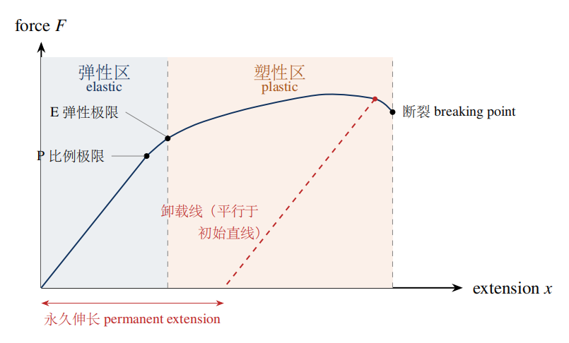
超过弹性极限后卸载，卸载线大致平行于原来的直线部分，但不回到原点，留下永久伸长 (permanent extension)。
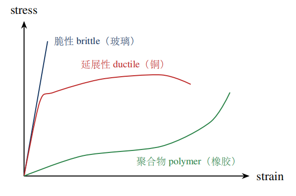
- 脆性 brittle（玻璃）：几乎没有塑性阶段，达到极限即断裂。
- 延展性 ductile（铜）：有明显塑性伸长阶段，可拉成细丝。
- 聚合物 polymer（橡胶）：应力–应变曲线非线性，卸载时有滞后。
6.4 弹性势能 Elastic potential energy
拉伸物体时外力做功。由于力随伸长量变化，功等于 $F$–$x$ 图下的面积。在比例极限内（直线部分），面积是三角形：
从 $x_1$ 拉到 $x_2$ 所做的功是梯形面积 $= \frac{1}{2}k\left(x_2^2 - x_1^2\right)$，不是 $\frac{1}{2}k\left(x_2 - x_1\right)^2$。例如从 $0$ 到 $x$ 与从 $x$ 到 $2x$ 的功之比为 $1 : 3$。
The graph shows the variation of the elastic potential energy $E_\text{p}$ stored in a spring with the square of the extension of the spring. What is the spring constant of the spring?
A $0.0096\text{ N m}^{-1}$
B $6.0\text{ N m}^{-1}$
C $12\text{ N m}^{-1}$
D $24\text{ N m}^{-1}$
$E_\text{p} = \frac{1}{2}kx^2$，图像斜率 $= \frac{1}{2}k = \frac{0.48}{0.04} = 12$，所以 $k = 24\text{ N m}^{-1}$。（C 漏了因子 2。）
6.5 本章小结 Summary
| 物理量 / 关系 | 公式 | 说明 |
|---|---|---|
| 胡克定律 | $F = kx$ | 比例极限内 |
| 串 / 并联弹簧 | $\frac{1}{k} = \frac{1}{k_1} + \frac{1}{k_2}$；$k = k_1 + k_2$ | 串联变软，并联变硬 |
| 应力 | $\sigma = \frac{F}{A}$ | $\text{Pa}$ |
| 应变 | $\varepsilon = \frac{x}{L}$ | 无单位 |
| 杨氏模量 | $E = \frac{\sigma}{\varepsilon} = \frac{FL}{Ax}$ | 材料性质 |
| 弹性势能 | $E_\text{p} = \frac{1}{2}Fx = \frac{1}{2}kx^2$ | $F$–$x$ 图面积 |
6.6 本章练习 Practice questions
A metal wire is stretched by a tensile force. The tensile force is increased. The volume of the wire remains constant and the limit of proportionality is not exceeded. Which quantity remains constant?
A the cross-sectional area of the wire
B the strain of the wire
C the stress in the wire
D the Young modulus of the metal
杨氏模量是材料的性质，在比例极限内不变。拉力增大，应力、应变都增大；体积不变而长度增大，截面积减小。
An initially unstretched spring is stretched within its limit of proportionality to a length of $80\text{ mm}$. The work done stretching the spring is $0.010\text{ J}$. The spring constant of the spring is $22.5\text{ N m}^{-1}$. What is the unstretched length of the spring?
A $30\text{ mm}$
B $50\text{ mm}$
C $60\text{ mm}$
D $110\text{ mm}$
$\frac{1}{2}kx^2 = 0.010$，$x = \sqrt{\frac{2 \times 0.010}{22.5}} = 0.030\text{ m} = 30\text{ mm}$。原长 $= 80 - 30 = 50\text{ mm}$。
The graph shows the relationship between the applied force and the extension for a spring.
$X$ is the work done by the force in extending the spring from $0$ to $10\text{ mm}$. $Y$ is the work done by the force in extending the spring from $10\text{ mm}$ to $20\text{ mm}$. What is the ratio $X : Y$?
A $1 : 1$
B $1 : 2$
C $1 : 3$
D $1 : 4$
$X = \frac{1}{2}k(10)^2 = 50k$，$Y = \frac{1}{2}k(20^2 - 10^2) = 150k$，$X : Y = 1 : 3$。（或面积：三角形与梯形之比。）
Two springs X and Y are attached to a fixed surface. Blocks are attached to their free ends. The blocks hang vertically in equilibrium from the springs as shown.
The stretched lengths of X and Y are equal. Spring X has spring constant $k$, unstretched length $l$ and extension $0.20l$. Spring Y has spring constant $3.0k$ and extension $0.10l$. The mass of the block attached to spring X is $m$. What is the mass of the block attached to spring Y?
A $0.67m$
B $1.0m$
C $1.5m$
D $3.0m$
X：$mg = k(0.20l)$；Y：$Mg = 3.0k(0.10l) = 0.30kl$。$\frac{M}{m} = \frac{0.30}{0.20} = 1.5$。
The diagram shows a force–extension graph for a spring.
What is the value of the work done to increase the extension of the spring from $10 \times 10^{-3}\text{ m}$ to $20 \times 10^{-3}\text{ m}$?
A $0.02\text{ J}$
B $0.06\text{ J}$
C $0.08\text{ J}$
D $0.12\text{ J}$
梯形面积 $= \frac{1}{2}(4.0 + 8.0) \times (10 \times 10^{-3}) = 0.060\text{ J}$。
(a) State Hooke’s law. [1]
(b) In an experiment to determine the spring constant of a spring X, a student measures the original length of the spring. The student then suspends an object in equilibrium from the spring and measures the final length of the spring. The spring does not extend beyond its limit of proportionality. The measurements taken by the student are shown in Table 2.1.
| Measurement | Value |
|---|---|
| original length of spring X | $(2.1 \pm 0.1)\text{ cm}$ |
| final length of spring X | $(14.0 \pm 0.1)\text{ cm}$ |
| mass of suspended object | $(0.300 \pm 0.005)\text{ kg}$ |
Calculate:
(b)(i) the extension, in cm, of spring X together with its absolute uncertainty [1]
(b)(ii) the spring constant of spring X [3]
(b)(iii) the percentage uncertainty in the value of the spring constant calculated in (b)(ii) due to the uncertainties in the measurements. [2]
(c) An identical object to the one in (b) is suspended in equilibrium from a spring Y that has a greater spring constant than spring X. Spring Y does not extend beyond its limit of proportionality. Describe and explain any difference in:
(c)(i) the extension of the springs [1]
(c)(ii) the elastic potential energy of the springs. [2]
(a) 伸长量与所施加的力成正比（在比例极限内）。 [B1]
(b)(i) $x = 14.0 - 2.1 = 11.9\text{ cm}$，不确定度相加 $0.1 + 0.1 = 0.2$：$(11.9 \pm 0.2)\text{ cm}$。 [A1]
(b)(ii) $k = \frac{F}{x}$ [C1]
$= \frac{0.300 \times 9.81}{0.119}$ [C1]
$= 24.7\text{ N m}^{-1}$ [A1]
(b)(iii) $\frac{0.2}{11.9} + \frac{0.005}{0.300} = 1.68\% + 1.67\%$ [C1]
$= 3\%$ [A1]
(c)(i) Y 的伸长量较小：力相同，劲度系数较大（$x = F/k$）。 [B1]
(c)(ii) Y 的弹性势能较小； [B1]
力相同而伸长量较小，$E_\text{p} = \frac{1}{2}Fx$（或 $E_\text{p} = \frac{F^2}{2k}$）。 [B1]
第七章 波 Waves
掌握行波本质与传递能量特征；熟练掌握描述波的物理量（位移、振幅、周期、频率、波长、波速、相位差）；掌握位移–距离图与位移–时间图的解读与质点振动方向判断；掌握示波器（CRO）时基与 y 增益测定波形；推导波动方程（$v = f\lambda$）；理解波的强度与振幅平方关系（$I \propto A^2$）；深入对比横波与纵波；掌握声波多普勒效应公式与计算（$f_\text{o} = f_\text{s} \frac{v}{v \pm v_\text{s}}$）；熟记电磁波谱各波段波长与应用；理解偏振现象与马吕斯定律（$I = I_0 \cos^2\theta$）。
00 考纲学习目标 Syllabus Learning Outcomes
7.1 行波 Progressive waves
行波 (progressive wave) 是振动（扰动）在介质中的传播，它传递能量而不传递物质：介质中的质点只在各自的平衡位置附近振动，并不随波迁移。
7.1.1 描述波的物理量与严格英文定义
| 物理术语 | 考纲英文定义 (Mark Scheme Exact Wording) | 中文解释与符号 |
|---|---|---|
| 位移 Displacement | distance (in a specified direction) of a point from its equilibrium position | 质点偏离平衡位置的距离（矢量），符号 $x$ 或 $y$，单位 $\text{m}$ |
| 振幅 Amplitude | maximum displacement (from the equilibrium position) | 质点离开平衡位置的最大位移，符号 $A$，单位 $\text{m}$ |
| 周期 Period | time for one complete oscillation (of a point on the wave) | 完成一次全振动的时间（波上某质点），符号 $T$，单位 $\text{s}$ |
| 频率 Frequency | number of oscillations per unit time | 单位时间内的振动次数，$f = 1/T$，单位 $\text{Hz}$ |
| 波长 Wavelength | distance between two adjacent points on a wave that are in phase (e.g. crest to crest) | 相邻两个同相点之间的距离（如相邻两波峰），符号 $\lambda$，单位 $\text{m}$ |
| 波速 Speed | distance travelled by the wave(front) per unit time | 波形（能量）传播的速度，符号 $v$，单位 $\text{m s}^{-1}$ |
| 相位差 Phase diff. | difference in the stages of oscillation of two points, measured in degrees or radians | 两点振动步调的差异；一个周期 $= 360^\circ = 2\pi\text{ rad}$ |
7.1.2 波的两种核心图像对比与质点振动方向
• 相位差：波上相距 $\Delta x$ 的两点，相位差 $\phi = \frac{\Delta x}{\lambda} \times 360^\circ = \frac{2\pi\Delta x}{\lambda}$。相距整数个波长的点同相 (in phase)，相距半波长奇数倍的点反相 (antiphase，相位差 $180^\circ$)。
• 判断质点运动方向：波向右传播时，某点下一时刻的位移等于它左边相邻点此刻的位移（“前一个点带动后一个点”）。
7.1.3 波动方程 $v = f\lambda$ 的推导与本质
推导过程：波在一个周期 $T$ 内恰好传播一个波长 $\lambda$ 的距离，所以 $$v = \frac{\text{distance}}{\text{time}} = \frac{\lambda}{T} = \lambda \times \frac{1}{T}$$ 由于频率 $f = \frac{1}{T}$，代入即得：
7.1.4 阴极射线示波器 (Cathode-Ray Oscilloscope, CRO) 读数规范
- 时基 time-base：水平方向每格代表的时间（如 $\text{ms div}^{-1}$）。周期 $T$ = 一个完整波形占的格数 × 时基。
- y 增益 y-gain：竖直方向每格代表的电压（如 $\text{V div}^{-1}$）。振幅 = 峰到中线的格数 × y 增益。
- 为减小读数误差，测多个周期的总格数再除以周期数；测峰–峰值再除以 2。
7.1.5 波的能量与强度
The graph shows the displacement of each particle in a transverse wave against distance at one instant in time. The speed of the wave is $1.6\text{ m s}^{-1}$. What is the frequency of the wave?
A $0.050\text{ Hz}$
B $0.080\text{ Hz}$
C $5.0\text{ Hz}$
D $8.0\text{ Hz}$
从图读出波长 $\lambda = 25 - 5 = 20\text{ cm} = 0.20\text{ m}$（相邻两峰）。$f = \frac{v}{\lambda} = \frac{1.6}{0.20} = 8.0\text{ Hz}$。（B 是忘了把 cm 换成 m。）
(a) State what is meant by a progressive wave. [1]
(b) A transverse progressive wave travels along a long string PQ from P to Q. Figure 3.1 shows the string at time $t = 0$. A point on the string is labelled X. At $t = 0$, point X is at its equilibrium position. The speed of the wave on the string is $75\text{ cm s}^{-1}$.
(b)(i) Show that the period of the wave is $0.24\text{ s}$. [2]
(b)(ii) Sketch the variation of the displacement from the equilibrium position of point X with $t$ between $t = 0$ and $t = 0.48\text{ s}$. [3]
(a) A wave that transfers energy from one place to another (in the direction of travel of the wave) without transferring matter. 一种把能量从一处传到另一处（沿波的传播方向）而不传递物质的波。 [B1]
(b)(i) $36\text{ cm}$ 包含两个完整波长，$\lambda = 18\text{ cm}$。 [C1]
$T = \frac{\lambda}{v} = \frac{18\text{ cm}}{75\text{ cm s}^{-1}} = 0.24\text{ s}$ [A1]
(b)(ii) 振幅 $= 24 / 2 = 12\text{ cm}$。波向右（P $\to$ Q）传播，X 左侧是波谷，所以 X 下一时刻向下运动。
正弦曲线从原点开始先向负方向； [B1]
振幅 12 cm； [B1]
周期 0.24 s，共两个完整周期至 0.48 s。 [B1]
7.2 横波与纵波 Transverse and longitudinal waves
横波与纵波的根本区别在于质点振动方向与能量传播方向的关系。两者都是行波，都满足 $v = f\lambda$，都能发生反射、折射、衍射和干涉。
| 对比维度 | 横波 Transverse waves | 纵波 Longitudinal waves |
|---|---|---|
| 质点振动方向 | 垂直于能量传播方向 (perpendicular to) | 平行于能量传播方向 (parallel to) |
| 波的结构 | 波峰 crest、波谷 trough | 密部 compression、疏部 rarefaction |
| 典型代表 | 电磁波、绳波、水面波、地震 S 波 | 声波、弹簧纵波、地震 P 波、超声 |
| 能否发生偏振 | 能 | 不能 |
| 共有波动性质 | 两种波都是行波，都满足 $v = f\lambda$，都能发生反射、折射、衍射、干涉。 | |
纵波的正弦图像解读 (Graphical representation of longitudinal waves)
纵波的图像表示：纵波也可以画成位移–距离的正弦图（把沿传播方向的位移画在纵轴上，规定向右为正）。在正弦图中，位移为零且两侧质点向它靠拢的点是密部中心，两侧质点离开它的点是疏部中心。
7.3 声波的多普勒效应 Doppler effect for sound waves
声源运动时，它在连续发出的两个波峰之间移动了一段距离，使前方的波前挤在一起（波长变短），后方的波前拉开（波长变长）。声速 $v$ 由介质决定，不变，所以观察者接收到的频率改变：
推导要点：声源每个周期 $T_\text{s}$ 内前进 $v_\text{s}T_\text{s}$，前方观察到的波长 $\lambda_\text{o} = vT_\text{s} - v_\text{s}T_\text{s}$，所以 $f_\text{o} = \frac{v}{\lambda_\text{o}} = \frac{v}{(v - v_\text{s})T_\text{s}} = f_\text{s}\frac{v}{v - v_\text{s}}$。
匀速驶过观察者的火车鸣笛：靠近时观察到恒定的较高频率，经过时突然降为恒定的较低频率（$f$–$t$ 图为两段水平线）。
The siren on an emergency vehicle emits a sound of constant frequency $1100\text{ Hz}$. The driver in a stationary car hears the sound at a frequency of $1000\text{ Hz}$. The speed of sound in air is $340\text{ m s}^{-1}$. What is the velocity of the emergency vehicle?
A $31\text{ m s}^{-1}$ away from the stationary car
B $34\text{ m s}^{-1}$ away from the stationary car
C $31\text{ m s}^{-1}$ towards the stationary car
D $34\text{ m s}^{-1}$ towards the stationary car
观察频率降低，说明声源远离。$1000 = 1100 \times \frac{340}{340 + v_\text{s}}$，$340 + v_\text{s} = 374$，$v_\text{s} = 34\text{ m s}^{-1}$。
7.4 电磁波谱 Electromagnetic spectrum
所有电磁波：
• 都是横波（振荡的电场和磁场互相垂直，且都垂直于传播方向）；
• 在真空中传播速度都相同，$c = 3.00 \times 10^8\text{ m s}^{-1}$；
• 不需要介质，能在真空中传播；可以偏振。
| 波谱区域 Region | 波长范围（近似） | 典型来源 / 应用 |
|---|---|---|
| $\gamma$ 射线 Gamma-rays | $< 10^{-11}\text{ m}$ | 放射性衰变；放疗、灭菌 |
| X 射线 X-rays | $10^{-11}\text{ m} \sim 10^{-8}\text{ m}$ | X 光管；医学成像 |
| 紫外线 Ultraviolet (UV) | $10^{-8}\text{ m} \sim 4 \times 10^{-7}\text{ m}$ | 太阳；消毒、荧光 |
| 可见光 Visible light | $400\text{ nm} \sim 700\text{ nm}$ | 人眼可见范围：紫光约 $400\text{ nm} \to$ 红光约 $700\text{ nm}$ |
| 红外线 Infrared (IR) | $7 \times 10^{-7}\text{ m} \sim 10^{-3}\text{ m}$ | 热物体；遥控、热成像 |
| 微波 Microwaves | $10^{-3}\text{ m} \sim 10^{-1}\text{ m}$ | 微波炉、雷达、手机 |
| 无线电波 Radio waves | $> 10^{-1}\text{ m}$ | 广播、通信 |
波长 $\lambda/\text{m}$（真空中）：从左到右（$\gamma$ 射线 → 无线电波）增大 →；频率与光子能量从左到右减小。
7.5 偏振 Polarisation
• $\theta = 0$：全部通过；$\theta = 90^\circ$：完全不通过（“正交” crossed）。
• 旋转偏振片 $360^\circ$，透射强度出现 2 次最大、2 次为零（周期 $180^\circ$ 的 $\cos^2$ 曲线）。
• 多片偏振片：逐片相乘，每次用相邻两片透振轴之间的夹角。两正交偏振片之间插入一片 $45^\circ$ 的偏振片，反而有光通过：$I = I_0\cos^2 45^\circ\cos^2 45^\circ = I_0/4$。
A vertically polarised electromagnetic wave has an intensity of $3.2 \times 10^4\text{ W m}^{-2}$. The wave is incident on a polarising filter that has a transmission axis at an angle $\theta$ to the vertical. The transmitted wave has an intensity of $2.5 \times 10^4\text{ W m}^{-2}$. What is $\theta$?
A $28^\circ$
B $39^\circ$
C $52^\circ$
D $62^\circ$
$\cos^2\theta = \frac{2.5}{3.2} = 0.781$，$\cos\theta = 0.884$，$\theta = 28^\circ$。（选 B 是忘了平方：$\cos\theta = 0.781$。）
7.6 本章小结与教学提示
| 物理量 / 关系 | 公式 | 说明 |
|---|---|---|
| 波动方程 | $v = f\lambda$，$f = 1/T$ | 频率由波源决定 |
| 空间相位差 | $\phi = \frac{\Delta x}{\lambda} \times 360^\circ$ | — |
| 波的强度 | $I = \frac{P}{A}$，$I \propto A^2$ | 点源 $I \propto 1/r^2$ |
| 多普勒效应 | $f_\text{o} = f_\text{s} \left(\frac{v}{v \pm v_\text{s}}\right)$ | 远离 +，靠近 - |
| 真空中光速 | $c = 3.00 \times 10^8\text{ m s}^{-1}$ | 横波；可见光 400–700 nm |
| 马吕斯定律 | $I = I_0 \cos^2\theta$ | 入射为平面偏振波 |
7.7 历年真题精选与解析 Practice questions
A wave is incident on a surface of area $S$ placed perpendicular to the direction of travel of the wave. The wave has amplitude $R$ and the power incident on the surface is $P$. The amplitude of the wave is increased to $3R$ and the wave is now incident normally on a surface of area $3S$. What is the power incident on the surface of area $3S$?
A $P$
B $3P$
C $9P$
D $27P$
强度 $I \propto$ 振幅$^2$，振幅变 3 倍，强度变 9 倍；功率 = $I \times$ 面积，面积变 3 倍，所以功率变为 $9 \times 3 = 27$ 倍。
Plane polarised light of intensity $I$ is incident normally on a set of polarising filters. The transmission axis of the first filter is at $30^\circ$ to the plane of polarisation of the incident light. The transmission axis of each successive filter is at $30^\circ$ to the transmission axis of the previous filter. The intensity of the light emerging from the final filter is $0.24I$. How many polarising filters are in the set?
A $3$
B $5$
C $6$
D $10$
每片透过比例 $\cos^2 30^\circ = 0.75$。$0.75^n = 0.24$，$n = \frac{\lg 0.24}{\lg 0.75} = 4.96 \approx 5$。
A police car has a two-tone siren emitting sound of frequencies of $700\text{ Hz}$ and $1000\text{ Hz}$. The police car is travelling at a speed of $40.0\text{ m s}^{-1}$ towards a stationary observer. The speed of sound in the air is $340\text{ m s}^{-1}$. What is the difference between the two frequencies of the sound that is heard by the observer?
A $268\text{ Hz}$
B $300\text{ Hz}$
C $335\text{ Hz}$
D $340\text{ Hz}$
靠近：$f_\text{o} = f_\text{s} \times \frac{340}{340 - 40} = 1.133 f_\text{s}$。两频率差也乘以同一因子：$300 \times 1.133 = 340\text{ Hz}$。
The diagram shows an object floating in water through which a progressive wave is passing. In time $t$, the object moves from maximum displacement at a peak of the wave to minimum displacement at a trough and then back to maximum displacement again. Through which vertical distance does the object move in time $t$?
A one wavelength
B twice the wavelength
C twice the amplitude
D four times the amplitude
物体只上下振动，不随波移动。从波峰到波谷移动 $2A$，再回到波峰又移动 $2A$，总路程 $4A$。
An electromagnetic wave has a frequency of $3.3 \times 10^{14}\text{ Hz}$. Which principal region of the electromagnetic spectrum is this wave in?
A infrared
B visible light
C ultraviolet
D X-ray
$$\lambda = \frac{c}{f} = \frac{3.00 \times 10^8}{3.3 \times 10^{14}} = 9.1 \times 10^{-7}\text{ m} = 910\text{ nm} > 700\text{ nm}$$，属于红外线。
A beam of vertically polarised light of intensity $I_0$ is incident normally on a polarising filter. The transmission axis of the filter is at an angle of $60^\circ$ to the vertical. The transmitted light beam is then incident normally on a second polarising filter. The transmission axis of the second filter is perpendicular to the vertical as shown. The intensity of the light beam that emerges from the second filter is $I_\text{T}$. What is the ratio $I_\text{T} / I_0$?
A $0$
B $0.19$
C $0.25$
D $0.43$
第一片：与竖直成 $60^\circ$，$I_1 = I_0\cos^2 60^\circ = 0.25I_0$。第二片透振轴水平，与第一片透振轴夹角 $90^\circ - 60^\circ = 30^\circ$：$I_\text{T} = 0.25I_0\cos^2 30^\circ = 0.1875I_0 \approx 0.19I_0$。
第八章 叠加 Superposition
深刻理解波的叠加原理（位移矢量和）；掌握驻波的形成机制（反射、同频反向行波叠加）、作图法与波节波腹特征；对比行波与驻波在能量、振幅和相位上的本质差异；掌握弦线、微波及空气柱（一端闭与两端开）驻波实验；掌握波的衍射条件及狭缝宽度与波长的定性关系；深入理解相干波条件（恒定相位差）与双源干涉明暗条纹判定；熟练运用杨氏双缝干涉公式（$\lambda = \frac{ax}{D}$）；掌握衍射光栅方程（$d\sin\theta = n\lambda$）、最高级数判定及光栅测波长实验方案。
00 考纲学习目标 Syllabus Learning Outcomes
8.1 叠加原理 Principle of superposition
• 同相相遇（相长干涉 Constructive superposition）：两列波同向位移叠加，合振幅最大 $A_\text{max} = A_1 + A_2$；
• 反相相遇（相消干涉 Destructive superposition）：两列波反向位移抵消，合振幅最小 $A_\text{min} = |A_1 - A_2|$。当两列波振幅相等 ($A_1 = A_2$) 时，合位移瞬间及振幅恒等于零。
8.2 驻波 Stationary waves
当两列频率（波长）相同、振幅相近、沿相反方向传播的行波相遇时，叠加形成驻波 (stationary wave)。实际中通常由一列入射波和它在固定端（或反射面）的反射波叠加而成。
8.2.1 驻波的形成条件与作图法解释
- 形成条件：两列波的频率相同、波长相同；振幅相近；沿相反方向传播。
- 反射：实际实验中，入射波在固定端或界面反射，反射波与入射波沿相反方向传播并叠加。
- 作图法解释：在不同时刻画出两列反向行波，逐点把位移相加。可以看到某些点（N）的合位移始终为零——波节；相邻两波节中点（A）的振幅最大（= 2A）——波腹。合成波形只上下“呼吸”，不向任何方向移动，所以称为驻波。
- 波形不迁移：波节位置始终不变，波形不沿传播方向移动，因此称为“驻波”。
8.2.2 驻波与行波的全面对比 (CIE 核心考点)
| 物理特征 | 行波 Progressive wave | 驻波 Stationary wave |
|---|---|---|
| 能量传输 | 沿传播方向传递能量 | 不传递能量（储存在波中） |
| 振幅特征 | 所有点相同（无衰减时） | 随位置变化：波节为零、波腹最大 |
| 相位关系 | 一个波长内各点相位都不同 | 相邻两波节之间各点同相；跨过一个波节相位差 $180^\circ$ |
| 波长定义 | 相邻同相两点的距离 | 相邻两波节距离的 2 倍 |
| 振动频率 | 所有点相同 | 所有点（除波节）相同 |
8.2.3 演示驻波的三大经典实验系统
弦：振动发生器使弦振动，波在滑轮处（固定端）反射。调节频率，当弦长为半波长整数倍时形成稳定驻波。两端都是波节：$L = n\frac{\lambda}{2}$，$f_n = \frac{nv}{2L}$（$n = 1,2,3,\dots$）。
微波：发射器正对金属板，探测器在两者之间移动，读数交替出现最大和最小。相邻两个最小读数（波节）的距离为 $\frac{\lambda}{2}$；测出多个波节间距取平均，$\lambda = 2 \times$ 平均间距。金属板处为波节。
空气柱（声波）：扬声器（或音叉）置于管口。闭端是位移波节，开端是位移波腹（忽略端点修正）。
• 一端封闭的管只能形成 $L = \frac{\lambda}{4}, \frac{3\lambda}{4}, \frac{5\lambda}{4}, \dots$（奇数倍 $\frac{\lambda}{4}$）。
• 两端开口：$L = n\frac{\lambda}{2}$。
• 用共鸣管测声速：改变水面高度找到相邻两次共鸣的空气柱长度 $L_1$、$L_2$，则 $L_2 - L_1 = \frac{\lambda}{2}$，$v = f\lambda$（此法可消去端点修正）。
A string is stretched between a vibration generator and a fixed point. When the vibration generator is vibrating at a frequency $f$, a stationary wave with five nodes is created on the string, as shown. There is a node at the end of the string that is attached to the vibration generator. The frequency of vibration of the vibration generator is slowly increased. What is the next frequency that produces a stationary wave on the string?
A $1.25f$
B $1.50f$
C $1.75f$
D $2.00f$
5 个波节 → 4 个“环”（loop），$L = 4 \times \frac{\lambda}{2}$。下一个驻波有 5 个环。波速不变，$f \propto$ 环数，所以 $f' = \frac{5}{4}f = 1.25f$。
A microwave source is placed on a horizontal surface at position X. A shiny metal sheet is placed at position Y that is a distance of $0.48\text{ m}$ from X. The microwaves are reflected back from the metal sheet towards the source. A microwave detector is moved from X to Y and all positions of minimum microwave intensity are recorded. Intensity minima were detected at X and Y and also at 15 positions in between X and Y. The speed of the microwaves is $3.0 \times 10^8\text{ m s}^{-1}$. What is the frequency of the microwaves emitted by the source?
A $4.7 \times 10^9\text{ Hz}$
B $5.0 \times 10^9\text{ Hz}$
C $9.4 \times 10^9\text{ Hz}$
D $1.0 \times 10^{10}\text{ Hz}$
共 17 个波节，相邻波节间隔 16 个，每个间隔 $\frac{\lambda}{2}$：$16 \times \frac{\lambda}{2} = 0.48$，$\lambda = 0.060\text{ m}$。$f = \frac{c}{\lambda} = \frac{3.0 \times 10^8}{0.060} = 5.0 \times 10^9\text{ Hz}$。（A 是误用 17 个间隔。）
8.3 衍射 Diffraction
衍射显著性条件与定性规律 (Gap width vs Wavelength)
- 缝宽 $\gg \lambda$：衍射不明显；缝宽 $\approx \lambda$：衍射最明显。
- 缝宽 (gap width) 与波长相近（或更小）时衍射最显著；缝宽远大于波长时，波几乎直线通过，只在边缘略有弯曲。
- 衍射程度取决于 $\lambda/$缝宽 的比值：缝变宽或波长变短 → 衍射减弱。
- 水波槽实验：用直的振动条产生平面波，通过可调宽度的缝，用频闪灯观察波前形状。
- 生活实例：声波（$\lambda \approx 1\text{ m}$）能绕过门口，所以能听到门外的声音；光波（$\lambda \approx 5 \times 10^{-7}\text{ m}$）通过门口几乎没有衍射。
8.4 干涉与杨氏双缝实验 Interference & Young's Experiment
8.4.1 观察到稳定明暗干涉条纹的必备条件
- 两波源相干（恒定相位差，同频率）；
- 两列波为同种波，若为横波则偏振方向相同（或有平行分量）；
- 振幅相近（使暗纹足够暗，条纹清晰）；
- 两列波在相遇处有重叠（需要衍射使光从两缝展开并重叠）。
8.4.2 光程差与相位差 (Path difference and phase difference)
设两波源同相，到某点的路程差（path difference）为 $\Delta$：
| 干涉类型 | 路程差 (Path difference $\Delta$) | 相位差条件 | 光斑/条纹表现 |
|---|---|---|---|
| 相长干涉 Constructive（亮/强） | $\Delta = n\lambda \quad (n = 0, 1, 2,\dots)$ | $0, 360^\circ,\dots$ | 极大值、亮纹 (Bright fringe) |
| 相消干涉 Destructive（暗/弱） | $\Delta = \left(n + \frac{1}{2}\right)\lambda \quad (n = 0, 1, 2,\dots)$ | $180^\circ, 540^\circ,\dots$ | 极小值、暗纹 (Dark fringe) |
上述路程差条件只适用于同相波源 (sources in phase)。若两波源反相 (antiphase)，则条件互换：$\Delta = n\lambda$ 处为暗纹，$\Delta = \left(n+\frac{1}{2}\right)\lambda$ 处为亮纹。
Two oscillating dippers are used to create progressive transverse water waves on the surface of a lake. The waves are shown from above in Figure 3.1. Wave crests are represented by a solid line. Wave troughs are represented by a dashed line. The waves superpose and an interference pattern is formed on the surface of the water. The dippers oscillate in phase with each other and with a frequency of $3.0\text{ Hz}$.
(a) State what is meant by a progressive wave. [1]
(b)(i) Calculate the period of the waves. [1]
(b)(ii) Points A and B are at the centre of the dippers. Point P is shown on Figure 3.1. The distance from A to P is $3.9\text{ m}$. The distance from B to P is $2.4\text{ m}$. Determine the speed of the waves. [3]
(c)(i) A ball of mass $0.44\text{ kg}$ is placed at P, where it floats on the surface of the lake. The amplitude of the vertical oscillation of the ball is $15\text{ cm}$. Calculate the difference in the gravitational potential energy $\Delta E$ of the ball between its highest and lowest points. [3]
(c)(ii) The frequency of oscillation of the dippers is increased to $4.0\text{ Hz}$ without changing their amplitude of oscillation. The ball remains at the same position on the surface of the lake. State and explain whether the amplitude of the oscillation of the ball increases, decreases or remains the same. [2]
(a) A wave that transfers energy from one place to another (in the direction of travel) without transferring matter. 沿传播方向传递能量（而不传递物质）的波。 [B1]
(b)(i) $T = \frac{1}{f} = \frac{1}{3.0} = 0.33\text{ s}$ [A1]
(b)(ii) 由图，P 处两列波都是波峰，且 P 位于 A 的第 4 个波峰、B 的第 3 个波峰上，路程差为一个波长：$\lambda = 3.9 - 2.4 = 1.5\text{ m}$ [C1]
$v = f\lambda = 3.0 \times 1.5$ [C1]
$= 4.5\text{ m s}^{-1}$ [A1]
(c)(i) $\Delta E = mg\Delta h$ [C1]
$= 0.44 \times 9.81 \times (2 \times 0.15)$（最高点与最低点相差 2 倍振幅） [C1]
$= 1.3\text{ J}$ [A1]
(c)(ii) 频率变为 $4.0\text{ Hz}$ 后 $\lambda = 4.5/4.0 = 1.125\text{ m}$，路程差 $1.5\text{ m}$ 不再是波长的整数倍，P 处两列波不再同相； [B1]
所以振幅减小。 [B1]
8.4.3 杨氏双缝干涉公式 Young’s double-slit equation
• $x$：相邻亮纹（或暗纹）的间距 (fringe separation)；
• $D$：双缝到屏的距离。适用条件 $D \gg a$。
增大 $D$ 或减小 $a$ 或用长波长（红光）→ 条纹变宽。
测 $x$ 时测量多条条纹的总宽度再除以间隔数（$n$ 条亮纹之间有 $n-1$ 个间隔），以减小百分比不确定度。
也可用声波（两个由同一信号发生器驱动的扬声器）、微波（发射器 + 双缝金属板）演示两源干涉。
8.5 衍射光栅 The diffraction grating
衍射光栅是刻有大量等间距平行狭缝的板。光正入射时，只有在满足相邻缝光程差为波长整数倍的方向上，所有缝出射的光同相，形成非常明亮、尖锐的极大。
• $\theta$：第 $n$ 级极大与入射方向（中央极大）的夹角；
• $n$：级数 (order)，$n = 0,1,2,\dots$。
• 最高级数：$\sin\theta \le 1$，$n_\text{max} =$ 不超过 $d/\lambda$ 的最大整数（$\sin\theta = 1$ 即 $90^\circ$ 时观察不到，若 $d/\lambda$ 恰为整数，最高级数要减 1）。可观察到的总条数 $= 2n_\text{max} + 1$。
测定波长：激光正入射光栅，屏上测出第 $n$ 级亮点到中央亮点的距离 $y$ 和光栅到屏距离 $L$，$\tan\theta = y/L$，再由 $\lambda = d\sin\theta/n$ 计算。测两侧对称亮点之间的距离再取一半，可减小误差。
白光：中央为白色，各级为光谱，紫光偏折最小、红光偏折最大（$\lambda$ 越大 $\theta$ 越大）；高级次光谱可能互相重叠。
The diagram shows a beam of light of wavelength $X$ that is incident normally on a diffraction grating. The diagram shows only the second-order intensity maxima that are produced at an angle of $45^\circ$ to the direction of the incident beam of light. A replacement beam of light of a different wavelength $Y$ is now incident normally on the diffraction grating. This new wavelength also produces intensity maxima that are at an angle of $45^\circ$ to the direction of the incident beam of light. What is a possible value of the ratio $X/Y$?
A $0.25$
B $0.75$
C $1.25$
D $1.50$
同一角度：$d\sin 45^\circ = 2X = nY$，$\frac{X}{Y} = \frac{n}{2}$，$n$ 为正整数（$n \ne 2$，因为波长不同）。可能值 $0.5, 1.5, 2, \dots$，选项中只有 1.50（$n = 3$）。
8.6 本章小结与教学提示
| 物理量 / 核心关系 | 公式 | 重点说明 |
|---|---|---|
| 叠加原理 | $y = y_1 + y_2$ | 位移相加 |
| 驻波波长关系 | 节–节 $= \lambda/2$，节–腹 $= \lambda/4$ | 不传递能量 |
| 两端固定弦 | $L = n\lambda/2$ | 两端为波节 |
| 一端封闭管 | $L = (2n-1)\frac{\lambda}{4}$ | 闭端节、开端腹 |
| 相长 / 相消光程差 | $\Delta = n\lambda$ / $\left(n+\frac{1}{2}\right)\lambda$ | 两源同相时 |
| 双缝干涉公式 | $\lambda = ax/D$ | 相邻亮纹间距 $x$ |
| 衍射光栅方程 | $d\sin\theta = n\lambda$ | $d = 1/N$ |
8.7 历年真题精选与解析 Practice questions
Green light of wavelength $550\text{ nm}$ passes through a double slit. This produces an interference pattern with a fringe spacing of $5.0\text{ cm}$ on a screen. Which changes to the experimental arrangement result in a fringe spacing of $2.5\text{ cm}$?
| 选项 | slit separation | distance between slits and screen |
|---|---|---|
| A | doubled | unchanged |
| B | unchanged | doubled |
| C | halved | doubled |
| D | doubled | halved |
$x = \lambda D/a$。要 $x$ 减半：$a$ 加倍、$D$ 不变。B：$x$ 加倍；C：$x$ 变 4 倍；D：$x$ 变为 $1/4$。
Water waves diffract as they pass through a gap. Which combination produces the greatest amount of diffraction?
A wavelength $10^{-1}\text{ m}$, gap width $10^0\text{ m}$
B wavelength $10^{-1}\text{ m}$, gap width $10^{-2}\text{ m}$
C wavelength $10^0\text{ m}$, gap width $10^0\text{ m}$
D wavelength $10^0\text{ m}$, gap width $10^2\text{ m}$
缝宽与波长相近时衍射最显著。（B 的缝宽远小于波长，几乎没有波能通过；A、D 缝宽远大于波长，衍射很弱。）
Light of wavelength $500\text{ nm}$ is incident normally on a double slit. A flat screen is placed parallel to the plane of the double slit. The screen is at a distance of $3.5\text{ m}$ from the double slit. A series of bright and dark fringes is formed on the screen. The distance from the centre of the first bright fringe to the centre of the tenth bright fringe is $22\text{ mm}$. What is the separation of the two slits?
A $0.080\text{ mm}$
B $0.35\text{ mm}$
C $0.72\text{ mm}$
D $0.80\text{ mm}$
第 1 到第 10 条亮纹之间有 9 个间隔： $$x = \frac{22\text{ mm}}{9} = 2.444\text{ mm} = 2.444 \times 10^{-3}\text{ m}$$ 由双缝干涉公式求解双缝间距 $a$： $$a = \frac{\lambda D}{x} = \frac{500 \times 10^{-9}\text{ m} \times 3.5\text{ m}}{2.444 \times 10^{-3}\text{ m}} = 7.16 \times 10^{-4}\text{ m} \approx 0.72\text{ mm}$$ （选项 D 是误用 10 个间隔除以 22 的经典错误）。
Light of wavelength $400\text{ nm}$ passes normally through a diffraction grating with a line spacing of $2.0 \times 10^{-6}\text{ m}$ and forms a diffraction pattern on a screen. What is the angle $\alpha$ between the second-order and the fourth-order diffracted rays?
A $24^\circ$
B $30^\circ$
C $53^\circ$
D $77^\circ$
$\sin\theta_2 = \frac{2 \times 400 \times 10^{-9}}{2.0 \times 10^{-6}} = 0.40$，$\theta_2 = 23.6^\circ$；$\sin\theta_4 = 0.80$，$\theta_4 = 53.1^\circ$。$\alpha = 53.1^\circ - 23.6^\circ = 29.5^\circ \approx 30^\circ$。（注意不能用 $\theta \propto n$。）
A string is fixed to walls at ends P and Q. An oscillator causes transverse oscillations of the string of period $0.24\text{ s}$. The speed of waves on the string is $75\text{ cm s}^{-1}$. The distance between P and Q is $45\text{ cm}$.
(i) Explain how a stationary wave is formed on the string. [2]
(ii) Figure 3.3 shows the string at one instant in time. On Figure 3.3, draw a solid line to show a possible appearance of the string at a time $0.060\text{ s}$ later. [2]
(iii) On Figure 3.3, draw a cross ($\times$) labelled N at one point on the string that is at a node, and a cross labelled A at one point that is at an antinode. [2]
(i) 波沿弦传播并在固定端（墙）反射； [B1]
入射波与反射波频率（波长）相同、沿相反方向传播，二者叠加形成驻波。 [B1]
(ii) $\lambda = vT = 75 \times 0.24 = 18\text{ cm}$，$PQ = 45\text{ cm} = 2.5\lambda$，即 5 个半波长（5 个环）。图中时刻弦是直的（各点位移为零），经过 $0.060\text{ s} = T/4$ 后各点到达最大位移：
正弦形状、两端为零； [B1]
共 5 个半波长（4 个内部波节，等间距 $9\text{ cm}$）。 [B1]
(iii) N 标在两端或每隔 $9\text{ cm}$ 的位置（如距 P $9\text{ cm}$ 处）；A 标在两相邻波节中点（如距 P $4.5\text{ cm}$ 处）。 [B1+B1]
(a)(i) For a progressive wave, state what is meant by period. [1]
(a)(ii) For a progressive wave, state what is meant by amplitude. [1]
(b) A stretched string is fixed at both ends and made to vibrate with a frequency of $25\text{ Hz}$. A stationary wave is formed on the string. The distance between the fixed ends of the string is $0.96\text{ m}$. Figure 5.1 shows the string at one instant.
(b)(i) Draw a cross ($\times$) at the position of an antinode. [1]
(b)(ii) Show that the speed of a progressive wave on the string is $16\text{ m s}^{-1}$. [3]
(b)(iii) The frequency of the vibrations is increased to $30\text{ Hz}$. The speed of the wave on the string does not change. State and explain whether a stationary wave is formed. [2]
(c) A beam of light of wavelength $4.5 \times 10^{-7}\text{ m}$ is incident normally on a diffraction grating with $6.7 \times 10^5\text{ lines per metre}$. The light passes through the grating and forms a pattern of bright spots on a screen that is parallel to the grating. The angle formed at the diffraction grating between the central bright spot and the bright spot at position X is $37^\circ$.
(c)(i) Calculate the order $n$ of the bright spot formed at X. [3]
(c)(ii) The diffraction grating is replaced by a grating with fewer lines per metre. State whether the distance between adjacent bright spots on the screen increases, decreases or remains the same. [1]
(a)(i) 完成一次全振动的时间（波上某质点）。 [B1]
(a)(ii) （质点的）最大位移。 [B1]
(b)(i) 标在任一波峰或波谷顶点正上方（如距左端 $0.16\text{ m}$ 处）。 [B1]
(b)(ii) 弦上有 3 个环：$\lambda = 0.96 \times \frac{2}{3} = 0.64\text{ m}$ [M1]
$v = f\lambda = 25 \times 0.64$ [C1]
$= 16\text{ m s}^{-1}$ [A1]
(b)(iii) $\lambda = 16/30 = 0.53\text{ m}$； [B1]
$0.96\text{ m}$ 不是 $\lambda/2 = 0.267\text{ m}$ 的整数倍（$0.96/0.267 = 3.6$），所以不能形成驻波。 [B1]
(c)(i) $n = \frac{d\sin\theta}{\lambda}$ [C1]
$= \frac{(1/6.7 \times 10^5)\sin 37^\circ}{4.5 \times 10^{-7}}$ [C1]
$= 2$ [A1]
(c)(ii) 减小 (decreases)：刻线数减少 → $d$ 增大 → $\sin\theta = n\lambda/d$ 减小，相邻亮点更靠近。 [B1]
第九章 电学 Electricity
深刻理解电流的微观与宏观本质（电荷载流子的定向流动与电荷量子化）；掌握电流的微观表达式（$I = Anvq$）及各参量的物理意义与量纲分析；准确区分电势差与电动势的能量转化方向；熟练掌握电功率推导与不同电路连接下的公式优选策略；深刻理解欧姆定律的适用边界与电阻的严格物理定义；熟练绘制并物理剖析恒温金属导体、白炽灯及半导体二极管的 $I\text{--}V$ 特性曲线；掌握电阻率公式（$R = \frac{\rho L}{A}$）及导线拉伸形变中的电阻变化规律；理解光敏电阻（LDR）与负温度系数热敏电阻（NTC）在微观载流子激发机制下的阻值变化特征。
00 考纲学习目标 Syllabus Learning Outcomes
9.1 电流 Electric current
• 电荷的单位 coulomb：$1\text{ C} = 1\text{ A s}$，即 $1\text{ A}$ 电流在 $1\text{ s}$ 内通过某截面的电荷量。
• 电荷量子化 (quantisation of charge)：任何带电体的电荷都是元电荷 $e = 1.60 \times 10^{-19}\text{ C}$ 的整数倍，$Q = \pm Ne$。所以 $2.4 \times 10^{-19}\text{ C}$ 这样的电荷不可能出现。
• 约定电流方向 (conventional current)：从电源正极经外电路流向负极，与电子实际流动方向相反。
9.1.1 微观表达式 $I = Anvq$
设导体截面积 $A$，单位体积内载流子数（数密度）$n$，每个载流子电荷 $q$，平均漂移速度 $v$。在 $\Delta t$ 内载流子移动 $L = v\Delta t$，通过截面的载流子都在体积 $AL$ 内：
The diagram shows a metal block.
The block has sides of length $a$, $b$ and $c$ as shown, and its volume is $V$. Each charge carrier has a charge $-q$ and the number density of the charge carriers in the metal is $n$. It takes each charge carrier an average time of $t$ to pass through the block. What is an expression for the current $I$?
A $I = nqabc$
B $I = \frac{nqV}{t}$
C $I = \frac{nqbc}{t}$
D $I = \frac{nqa}{V}$
电流沿 $b$ 方向，截面积 $A = ac$，漂移速度 $v = b/t$。$I = Anvq = (ac)n\frac{b}{t}q = \frac{nqV}{t}$。（也可理解为：块中全部载流子 $nV$ 个、电荷 $nVq$，在时间 $t$ 内全部通过。）
9.2 电势差与电功率 Potential difference and electrical power
9.3 电阻与电阻率 Resistance and resistivity
9.3.1 $I\text{--}V$ 特性曲线
三种关键元件的 $I\text{--}V$ 特性对比：
• 白炽灯：曲线逐渐变平（斜率减小）——电流增大，灯丝温度升高，金属离子晶格振动加剧，与自由电子碰撞更频繁，阻碍电子定向移动，电阻增大。正反向对称。（若画 $V\text{--}I$ 图，曲线则逐渐变陡。）
• 半导体二极管：反向几乎无电流（电阻极大）；正向电压低于约 $0.6\text{ V}$ 时电流很小，超过后电流急剧增大（电阻迅速减小）。只允许电流单向通过。
9.3.2 电阻率
• 金属拉长（体积不变）：长度变为 $k$ 倍，截面积变为 $1/k$，电阻变为 $k^2$ 倍。
• 直径变为 $1/2$（体积不变）：$A$ 变为 $1/4$，$L$ 变为 4 倍，$R$ 变为 16 倍。
• 典型值：铜 $1.7 \times 10^{-8}\ \Omega\text{ m}$，镍铬合金 $1.1 \times 10^{-6}\ \Omega\text{ m}$。金属的电阻率随温度升高而增大。
9.3.3 光敏电阻与热敏电阻
• NTC 热敏电阻：温度升高，载流子数目增多，电阻减小（考纲假定热敏电阻均为负温度系数 negative temperature coefficient）。
A nichrome wire of cross-sectional area $5.7 \times 10^{-8}\text{ m}^2$ is connected to a power supply. The potential difference (p.d.) across the wire is $230\text{ V}$. The power dissipated in the wire is $1.0\text{ kW}$.
(a) Show that the resistance of the wire is $53\ \Omega$. [2]
(b) The resistivity of nichrome is $1.3 \times 10^{-6}\ \Omega\text{ m}$. Calculate the length of the wire. [2]
(c) The average drift speed of the charge carriers (free electrons) in the nichrome wire is $5.4 \times 10^{-3}\text{ m s}^{-1}$. Calculate the number density of charge carriers of nichrome. [3]
(a) $P = \frac{V^2}{R}$ [C1]
$R = \frac{V^2}{P} = \frac{230^2}{1000} = 53\ \Omega$ [A1]
(b) $R = \frac{\rho L}{A}$，$L = \frac{RA}{\rho} = \frac{53 \times 5.7 \times 10^{-8}}{1.3 \times 10^{-6}}$ [C1]
$= 2.3\text{ m}$ [A1]
(c) $n = \frac{I}{Aqv}$，$I = \frac{P}{V} = \frac{1000}{230} = 4.35\text{ A}$ [C1]
$n = \frac{4.35}{5.7 \times 10^{-8} \times 1.6 \times 10^{-19} \times 5.4 \times 10^{-3}}$ [C1]
$= 8.8 \times 10^{28}\text{ m}^{-3}$ [A1]
A metal wire with circular cross-section has length $L$ and diameter $d$. The resistance of the wire is $R$. The wire is now melted and reformed into a new wire of diameter $0.50d$. The volume of the wire is unchanged. What is the resistance of the new wire?
A $R$
B $2R$
C $4R$
D $16R$
直径减半 → 截面积 $A' = A/4$；体积不变 → $L' = 4L$。$R' = \frac{\rho(4L)}{A/4} = 16R$。
The $I\text{--}V$ characteristic of an electrical component X is shown in Figure 5.1.
(a) State the name of electrical component X. [1]
(b) A metallic conductor has a constant resistance of $40\ \Omega$. On Figure 5.1, sketch the $I\text{--}V$ characteristic of this conductor between $V = 0$ and $V = 0.80\text{ V}$. [2]
(c) Component X is connected in series with a resistor of resistance $20\ \Omega$, an ammeter and a cell. The current in the ammeter is $5.0\text{ mA}$ and the cell has negligible internal resistance. Show that the electromotive force (e.m.f.) of the cell is $0.80\text{ V}$. [3]
(d) The terminals of the cell in (c) are now reversed without making any other changes to the circuit. State the reading on the ammeter. [1]
(e) The resistor of resistance $20\ \Omega$ and component X are now connected in parallel to the $0.80\text{ V}$ cell, with an ammeter measuring the total current. The current in component X is not negligible. Use Figure 5.1 to determine the current in the ammeter. [3]
(a) （半导体）二极管 diode。 [A1]
(b) 过原点的直线； [B1]
经过 $(0.80\text{ V}, 20\text{ mA})$（$I = 0.80/40 = 0.020\text{ A}$）。 [B1]
(c) 由图，$I = 5.0\text{ mA}$ 时 X 两端电压 = $0.70\text{ V}$； [C1]
电阻两端电压 = $0.005 \times 20 = 0.10\text{ V}$； [C1]
$\text{e.m.f.} = 0.70 + 0.10 = 0.80\text{ V}$。 [A1]
(d) 0（二极管反接，几乎无电流）。 [A1]
(e) 电阻电流 = $0.80/20 = 0.040\text{ A}$； [C1]
X 两端 $0.80\text{ V}$，由图 X 的电流 = $40\text{ mA} = 0.040\text{ A}$； [C1]
总电流 = $0.080\text{ A}$。 [A1]
9.4 本章小结与教学提示 Summary & Teacher's Notes
| 物理量 / 关系 | 公式 | 说明 |
|---|---|---|
| 电荷 | $Q = It$ | 量子化：$Q = Ne$ |
| 微观电流 | $I = Anvq$ | $n$：数密度 |
| 电势差 | $V = W/Q$ | $\text{J/C}$ |
| 电功率 | $P = VI = I^2R = \frac{V^2}{R}$ | 串联用 $I^2R$，并联用 $V^2/R$ |
| 电阻 | $R = V/I$ | 定义，任何点适用 |
| 电阻率 | $R = \frac{\rho L}{A}$ | $\Omega\text{ m}$ |
| LDR / NTC | 光强 $\uparrow$ / 温度 $\uparrow \implies R \downarrow$ | 载流子数密度增大 |
9.5 本章练习 Practice questions
What is the definition of the potential difference (p.d.) across a component?
A the energy transferred per unit charge
B the energy transferred per unit current
C the power transferred per unit charge
D the power transferred per unit current
A wire carries a current of $2.0\text{ A}$ for $1.0\text{ hour}$. How many electrons pass a point in the wire in this time?
A $1.2 \times 10^{-15}$
B $7.2 \times 10^3$
C $1.3 \times 10^{19}$
D $4.5 \times 10^{22}$
$Q = It = 2.0 \times 3600 = 7200\text{ C}$；$N = \frac{Q}{e} = \frac{7200}{1.60 \times 10^{-19}} = 4.5 \times 10^{22}$。
Which graph shows the $I\text{--}V$ characteristic of a filament lamp?
白炽灯电流增大，温度升高，电阻增大，$I\text{--}V$ 图斜率逐渐减小。A 为二极管（正向），B 为恒温金属，C 为电阻随电压减小的元件（如热敏电阻）。
A straight copper wire, of diameter $4.2 \times 10^{-4}\text{ m}$, has a number density of free electrons of $8.5 \times 10^{28}\text{ m}^{-3}$. In a given time interval, a charge of $0.15\text{ C}$ moves through the wire. What is the average displacement of the free electrons along the wire in this time interval?
A $3.3 \times 10^{-8}\text{ m}$
B $2.0 \times 10^{-5}\text{ m}$
C $8.0 \times 10^{-5}\text{ m}$
D $2.5 \times 10^{-4}\text{ m}$
$Q = nAxq$（体积 $Ax$ 内的电荷全部通过），$A = \pi(2.1 \times 10^{-4})^2 = 1.39 \times 10^{-7}\text{ m}^2$。
$x = \frac{Q}{nAq} = \frac{0.15}{8.5 \times 10^{28} \times 1.39 \times 10^{-7} \times 1.6 \times 10^{-19}} = 8.0 \times 10^{-5}\text{ m}$。
Conducting putty is a substance that conducts electricity and can be moulded into various shapes. A cuboid made from this putty has length $L$ and width $x$. The resistance between the square faces of the cuboid is $15\ \Omega$.
Some more of the putty is moulded into a cylinder that has length $L$. The resistance between the circular faces of the cylinder is also $15\ \Omega$. What is the radius of the cylinder?
A $\frac{x}{2}$
B $\frac{x}{\sqrt{\pi}}$
C $\frac{x}{\pi}$
D $\frac{2x}{\sqrt{\pi}}$
同材料、同长度、同电阻 → 截面积相同：$\pi r^2 = x^2$，$r = \frac{x}{\sqrt{\pi}}$。
An electrical component is connected into a circuit. Which component and which change causes an increase in the resistance of the component?
| component | change |
|---|---|
| A filament lamp | increase in electric current |
| B light-dependent resistor (LDR) | increase in light intensity |
| C semiconductor diode | increase in electric current |
| D thermistor | increase in temperature |
白炽灯电流增大，温度升高，电阻增大。B、D 电阻减小；二极管正向电流增大时电阻减小。
第十章 直流电路 D.C. circuits
掌握考纲规定的标准电路符号与规范电路图；理解电动势是电源驱动单位电荷绕完整电路一周所转移的能量，并从能量转化方向区分 e.m.f. 与 p.d.；熟练运用 $E = V + Ir = I(R + r)$ 分析内阻、lost volts 与端电压变化；理解基尔霍夫第一定律（电荷守恒）与第二定律（能量守恒），并用它们推导串联、并联电阻公式；掌握分压电路、电位差计与零示法，以及热敏电阻、LDR 传感器分压电路的分析方法。
00 考纲学习目标 Syllabus Learning Outcomes
10.1 电路符号 Circuit symbols
考纲第 6 节规定的标准电路符号如下。考试中绘制电路图必须使用这些符号；导线横平竖直，元件画在各边中间，不要画在转角处。
• 电流表串联接入电路（理想内阻为 0）；电压表并联在待测元件两端（理想内阻无穷大）。
• 检流计 G 用于检测微小电流或判断电流是否为零，常用于零示法。
10.2 电动势与内阻 Electromotive force and internal resistance
e.m.f. 与 p.d. 的区别（从能量转化的方向看）
| 电动势 e.m.f. | 电势差 p.d. | |
|---|---|---|
| 能量转化 | 其他形式能 $\to$ 电能 | 电能 $\to$ 其他形式能（热、光等） |
| 发生位置 | 电源内部 | 电路元件（负载）上 |
| 定义 | 驱动单位电荷绕整个电路一周所做的功 | 单位电荷通过元件时转化的电能 |
10.2.1 内阻与端电压
实际电源可以看作理想电动势 $E$ 与内阻 (internal resistance) $r$ 串联。电流 $I$ 流过内阻时有“lost volts” $Ir$，所以电源两端的端电压 (terminal p.d.) $V$ 小于 $E$：
• 电路断开（$I = 0$）时，$V = E$：用理想（高阻）电压表直接测电源两端，读数等于电动势。
• 内阻消耗功率 $I^2r$，使电源发热、效率降低；短路时 $I = E/r$ 很大，危险。
测定 $E$ 和 $r$：改变外电阻，记录多组 $(I, V)$，作 $V\text{--}I$ 图：纵截距 $= E$，斜率 $= -r$。
The diagram shows a circuit with a battery connected to a resistor with a resistance of $4.0\ \Omega$. The battery has an internal resistance of $2.0\ \Omega$. The voltmeter reads $12\text{ V}$. A second resistor of resistance $4.0\ \Omega$ is connected in parallel to the first resistor. What is the new reading on the voltmeter?
A $6.0\text{ V}$
B $9.0\text{ V}$
C $12\text{ V}$
D $24\text{ V}$
原来：$I = 12/4.0 = 3.0\text{ A}$，$E = I(R + r) = 3.0 \times 6.0 = 18\text{ V}$。并联后外电阻 $2.0\ \Omega$，$I = 18/(2.0 + 2.0) = 4.5\text{ A}$，读数 $V = 4.5 \times 2.0 = 9.0\text{ V}$。
10.3 基尔霍夫定律 Kirchhoff’s laws
10.3.1 串联与并联电阻公式的推导
串联 series：同一电流 $I$ 流过各电阻。由第二定律，总电压 $V = V_1 + V_2 + V_3$，即 $IR = IR_1 + IR_2 + IR_3$，消去 $I$：
并联 parallel：各电阻两端电压都为 $V$。由第一定律，$I = I_1 + I_2 + I_3$，即 $\frac{V}{R} = \frac{V}{R_1} + \frac{V}{R_2} + \frac{V}{R_3}$，消去 $V$：
(a) Three resistors of resistances $R_1$, $R_2$ and $R_3$ are connected in a network in parallel. The currents in the resistors are $I_1$, $I_2$ and $I_3$ respectively. The total current entering the network is $I_\text{T}$. The potential difference (p.d.) across the resistors is $V$. Derive the equation $\frac{1}{R_\text{T}} = \frac{1}{R_1} + \frac{1}{R_2} + \frac{1}{R_3}$ where $R_\text{T}$ is the total resistance of the network. [2]
(b) Two identical resistance wires, each of resistance $2.8\ \Omega$, are connected in parallel to a battery with negligible internal resistance and electromotive force (e.m.f.) $12\text{ V}$.
(i) Calculate the current in the battery. [2]
(ii) Each resistance wire has a cross-sectional area of $6.1 \times 10^{-6}\text{ m}^2$. The wires are made from a metal with a number density of charge carriers (free electrons) of $8.5 \times 10^{28}\text{ m}^{-3}$. Calculate the average drift speed of the charge carriers in the wires. [2]
(c) A component X is added to the circuit in (b) as shown in Figure 5.3.
The current in the battery is now $5.0\text{ A}$. The resistance of each resistance wire remains $2.8\ \Omega$.
(i) State the name of component X. [1]
(ii) Determine the resistance of component X. [3]
(iii) A change in the environment of component X causes the current in the battery to decrease. The resistance of the resistance wires remains constant. State and explain how the environment of X has changed. [2]
(a) 由基尔霍夫第一定律 $I_\text{T} = I_1 + I_2 + I_3$，各电阻电压都为 $V$：$\frac{V}{R_\text{T}} = \frac{V}{R_1} + \frac{V}{R_2} + \frac{V}{R_3}$ [B1]
两边除以 $V$ 得 $\frac{1}{R_\text{T}} = \frac{1}{R_1} + \frac{1}{R_2} + \frac{1}{R_3}$ [B1]
(b)(i) $R_\text{T} = \left(\frac{1}{2.8} + \frac{1}{2.8}\right)^{-1} = 1.4\ \Omega$ [C1]
$I = 12/1.4 = 8.6\text{ A}$ [A1]
(ii) 每根导线电流 $8.6/2 = 4.3\text{ A}$：$v = \frac{I}{Anq} = \frac{4.3}{6.1 \times 10^{-6} \times 8.5 \times 10^{28} \times 1.6 \times 10^{-19}}$ [C1]
$= 5.2 \times 10^{-5}\text{ m s}^{-1}$ [A1]
(c)(i) 光敏电阻 LDR。 [B1]
(ii) 下支路电流 $= 12/2.8 = 4.29\text{ A}$，上支路电流 $I_X = 5.0 - 4.29 = 0.71\text{ A}$ [C1]
上支路总电阻 $= 12/0.71 = 16.8\ \Omega$ [C1]
$R_X = 16.8 - 2.8 = 14\ \Omega$ [A1]
(iii) 电池电流减小 $\implies$ 总电阻增大 $\implies$ X 的电阻增大； [M1]
所以照射到 X 上的光强减弱（环境变暗）。 [A1]
10.4 分压电路 Potential dividers
传感器电路：把 $R_2$ 换成热敏电阻或 LDR：
• LDR 在下：光变暗 $\to$ $R_\text{LDR}$ 增大 $\to$ $V_\text{out}$ 增大（可用于路灯自动开启电路）。
• 用可变电阻代替定值电阻，可以调节触发的温度或光强。
10.4.1 电位差计与零示法 Potentiometer and null methods
原理：均匀电阻丝 AB 两端加恒定电压，丝上电势沿长度均匀下降，任意一段的电压与长度成正比（$V \propto l$）。把待测电池（或电压）与检流计 G 接到 A 和滑动触点 J 之间，移动 J 直到检流计读数为零（平衡点 balance point）：此时待测电压等于 AJ 段的电压，且待测支路中没有电流。
注意事项：待测电池的正极必须与驱动电池的正极接在同一端（A），否则找不到平衡点；待测电压必须小于 AB 两端电压。
A circuit consists of a battery, a high-resistance voltmeter and four fixed resistors as shown. The battery has an electromotive force (e.m.f.) of $15.0\text{ V}$ and negligible internal resistance. What is the reading on the voltmeter?
A $3.0\text{ V}$
B $6.0\text{ V}$
C $9.0\text{ V}$
D $12.0\text{ V}$
上支路：$24.0\ \Omega$ 两端电压 $= 15.0 \times \frac{24}{30} = 12.0\text{ V}$；下支路：$6.0\ \Omega$ 两端电压 $= 15.0 \times \frac{6}{15} = 6.0\text{ V}$。两中点相对左端的电势降落分别为 $12.0\text{ V}$ 和 $6.0\text{ V}$，电压表读数 $= 12.0 - 6.0 = 6.0\text{ V}$。
The diagram shows a thermistor and a variable resistor connected to a battery. The temperature of the thermistor decreases. What happens to the reading on the voltmeter, and which change to the resistance of the variable resistor is needed to cause the voltmeter reading to return to its initial value?
| voltmeter reading | change needed to resistance of variable resistor | |
|---|---|---|
| A | decreases | decrease |
| B | decreases | increase |
| C | increases | decrease |
| D | increases | increase |
温度降低，热敏电阻阻值增大，分得电压增大，电压表读数增大。要使读数恢复，需让可变电阻也按比例增大（两者电阻之比恢复原值），即增大可变电阻。
10.5 本章小结与教学提示 Summary & Teacher's Notes
| 物理量 / 关系 | 公式 | 说明 |
|---|---|---|
| 电动势 | $E = W/Q$ | 绕整个电路 |
| 内阻 | $E = V + Ir = I(R + r)$ | $V\text{--}I$ 图斜率 $-r$ |
| 基尔霍夫第一定律 | $\sum I_\text{in} = \sum I_\text{out}$ | 电荷守恒 |
| 基尔霍夫第二定律 | $\sum E = \sum IR$ | 能量守恒 |
| 串联 | $R = R_1 + R_2 + \cdots$ | |
| 并联 | $\frac{1}{R} = \frac{1}{R_1} + \frac{1}{R_2} + \cdots$ | |
| 分压 | $V_\text{out} = \frac{R_2}{R_1 + R_2}V_\text{in}$ | |
| 电位差计 | $E_1/E_2 = l_1/l_2$ | 零示法 |
10.6 本章练习 Practice questions
A battery with internal resistance is connected by wires to an external resistor. Which statement describes the electromotive force (e.m.f.) of the battery?
A It is the energy transferred per unit charge in driving charge through a connecting wire.
B It is the energy transferred per unit charge in driving charge through the complete circuit.
C It is the energy transferred per unit charge in driving charge through the external resistor.
D It is the energy transferred per unit charge in driving charge through the internal resistance.
Kirchhoff’s first and second laws are a consequence of the conservation of different quantities. What are those quantities?
| Kirchhoff’s first law | Kirchhoff’s second law | |
|---|---|---|
| A | charge | energy |
| B | energy | current |
| C | current | charge |
| D | energy | charge |
A battery of electromotive force (e.m.f.) $18.0\text{ V}$ and negligible internal resistance is connected to a network of three fixed resistors as shown. The current in the battery is $0.108\text{ A}$. What is the resistance of resistor X?
A $125\ \Omega$
B $167\ \Omega$
C $250\ \Omega$
D $500\ \Omega$
右支路 $500\ \Omega$ 的电流 $= 18.0/500 = 0.036\text{ A}$；X 的电流 $= 0.108 - 0.036 = 0.072\text{ A}$；$R_X = 18.0/0.072 = 250\ \Omega$。
A battery of electromotive force (e.m.f.) $6.0\text{ V}$ and negligible internal resistance is connected in series with a resistor of resistance $6.0\ \Omega$ and a variable resistor of resistance from zero to $4.0\ \Omega$. A voltmeter is connected across the variable resistor. The resistance of the variable resistor is changed. What is the range of the voltmeter reading?
A $0\text{ V} - 2.4\text{ V}$
B $0\text{ V} - 3.6\text{ V}$
C $2.4\text{ V} - 6.0\text{ V}$
D $3.6\text{ V} - 6.0\text{ V}$
可变电阻为 $0$ 时读数 $0$；为 $4.0\ \Omega$ 时读数 $= 6.0 \times \frac{4.0}{10.0} = 2.4\text{ V}$。
A light-dependent resistor (LDR) is connected across the terminals of a cell that has internal resistance. A voltmeter is connected across the LDR.
(a) Draw a circuit diagram to show this arrangement. [3]
(b) The cell has an electromotive force (e.m.f.) of $4.90\text{ V}$. At a particular light intensity, the LDR has a resistance of $230\ \Omega$ and a potential difference (p.d.) across it of $4.78\text{ V}$.
(i) Identify one possible source of systematic error in measuring the p.d. across the LDR using a digital voltmeter. [1]
(ii) Calculate the power dissipated in the LDR. [2]
(iii) Determine the internal resistance of the cell. [2]
(iv) The intensity of the light illuminating the LDR is gradually decreased. State what happens (decreases / unchanged / increases) to: the resistance of the LDR; the current in the cell; the p.d. across the LDR. [3]
(a) 电池符号（可含内阻）； [B1]
LDR 符号正确并接在电池两端； [B1]
电压表与 LDR 并联。 [B1]
(b)(i) 零点误差 / 校准误差（或接线接触电阻）。 [B1]
(ii) $P = \frac{V^2}{R} = \frac{4.78^2}{230}$ [C1]
$= 0.099\text{ W}$ [A1]
(iii) $E = V + Ir$，$I = 4.78/230 = 0.0208\text{ A}$：$r = \frac{4.90 - 4.78}{0.0208}$ [C1]
$= 5.8\ \Omega$ [A1]
(iv) LDR 电阻：increases； [B1]
电池电流：decreases； [B1]
LDR 两端电压：increases（电流减小，内阻上的 lost volts 减小）。 [B1]
(a) State what is meant by an electric current. [1]
(b) A cell has electromotive force (e.m.f.) $1.50\text{ V}$ and internal resistance $0.75\ \Omega$. Draw the variation of the terminal potential difference (p.d.) with current in the cell for current between $0\text{ A}$ and $1.6\text{ A}$. [2]
(c) A metal wire X has length $6.8\text{ m}$ and cross-sectional area $2.0 \times 10^{-7}\text{ m}^2$. The resistance of the wire is $0.82\ \Omega$. The wire is connected in parallel with a fixed resistor of resistance $R$, and this combination is connected to the cell in (b). The current in the cell is $1.8\text{ A}$.
(i) Calculate the resistivity $\rho$ of the metal from which wire X is made. [2]
(ii) Calculate $R$. [3]
(iii) Calculate the power dissipated in the internal resistance of the cell. [2]
(a) 电荷载流子的流动。 [B1]
(b) 从 $(0, 1.50\text{ V})$ 出发、斜率为负的直线； [M1]
经过 $(1.60\text{ A}, 0.30\text{ V})$（$V = 1.50 - 1.6 \times 0.75 = 0.30$）。 [A1]
(c)(i) $\rho = \frac{RA}{L} = \frac{0.82 \times 2.0 \times 10^{-7}}{6.8}$ [C1]
$= 2.4 \times 10^{-8}\ \Omega\text{ m}$ [A1]
(ii) 端电压 $= 1.50 - 1.8 \times 0.75 = 0.15\text{ V}$ [C1]
定值电阻的电流 $= 1.8 - 0.15/0.82 = 1.6\text{ A}$ [C1]
$R = 0.15/1.6 = 0.093\ \Omega$ [A1]
(iii) $P = I^2r = 1.8^2 \times 0.75$ [C1]
$= 2.4\text{ W}$ [A1]
第十一章 粒子物理 Particle physics
由 $\alpha$ 粒子散射实验推断原子核的存在与极小尺寸；掌握核式原子模型、核素符号 ${}^{A}_{Z}\text{X}$ 与同位素定义；比较 $\alpha$、$\beta^-$、$\beta^+$、$\gamma$ 辐射的组成、质量、电荷、电离与穿透能力；用核子数守恒与电荷守恒书写并配平衰变方程；理解反粒子、中微子以及 $\alpha$ 分立能谱与 $\beta$ 连续能谱的成因；熟记六种夸克的电荷、质子与中子的夸克组成、强子（重子与介子）与轻子的分类，以及 $\beta$ 衰变中的夸克转化。
00 考纲学习目标 Syllabus Learning Outcomes
11.1 原子、原子核与辐射 Atoms, nuclei and radiation
11.1.1 $\alpha$ 粒子散射实验 $\alpha$-particle scattering
用 $\alpha$ 粒子轰击极薄的金箔，荧光屏可绕箔转动，观察散射角分布。实验现象与结论的对应关系如下：
| 观察 Observation | 结论 Conclusion |
|---|---|
| 绝大多数 $\alpha$ 粒子直线穿过或偏转极小 | 原子内部绝大部分是空的 (mostly empty space) |
| 少数 $\alpha$ 粒子发生较大角度偏转 | 原子中心有一个带正电的区域（与 $\alpha$ 粒子相互排斥） |
| 极少数 $\alpha$ 粒子偏转超过 $90^\circ$（几乎反弹） | 原子的正电荷和绝大部分质量集中在一个极小的核内 |
图中标注：极少数（约 $1/8000$）$\alpha$ 粒子偏转超过 $90^\circ$（反弹）；大多数直线穿过或偏转很小；少数偏转较大。
原子直径约 $10^{-10}\text{ m}$，原子核直径约 $10^{-15}\text{ m}$ 至 $10^{-14}\text{ m}$，二者相差约 $10^4$–$10^5$ 倍。
11.1.2 核式原子模型与核素符号 Nuclear model and nuclide notation
原子由带正电的原子核（含质子和中子，统称核子 (nucleons)）和核外绕核运动的电子组成。
| 粒子 | 电荷 | 质量 / u | 位置 |
|---|---|---|---|
| 质子 proton | $+e$ | 1.007 | 核内 |
| 中子 neutron | $0$ | 1.009 | 核内 |
| 电子 electron | $-e$ | 0.00055 | 核外 |
11.1.3 三种辐射 Three types of radiation
$\alpha$、$\beta^-$、$\beta^+$ 与 $\gamma$ 辐射在本质、电荷、质量、速度、电离能力、穿透能力和能量分布上均有明显差异：
| 性质 | $\alpha$ | $\beta^-$ | $\beta^+$ | $\gamma$ |
|---|---|---|---|---|
| 本质 | 氦核 $^{4}_{2}\text{He}$ | 电子 $^{0}_{-1}\text{e}$ | 正电子 $^{0}_{+1}\text{e}$ | 电磁波（光子） |
| 电荷 | $+2e$ | $-e$ | $+e$ | $0$ |
| 质量 | $\approx 4\text{ u}$ | $\approx \frac{1}{1840}\text{ u}$ | $\approx \frac{1}{1840}\text{ u}$ | $0$ |
| 速度 | 约 $0.05c$ | 可达 $0.99c$ | 可达 $0.99c$ | $c$ |
| 电离能力 | 强 | 中 | 中 | 弱 |
| 穿透（阻挡物） | 纸、几 cm 空气 | 几 mm 铝 | （遇电子湮灭） | 几 cm 铅 |
| 能量分布 | 分立 | 连续 | 连续 | 分立 |

电场中：$\alpha$ 偏向负极，偏转小；$\beta^-$ 偏向正极，偏转大；$\gamma$ 不偏转。$\beta^+$ 带正电，会偏向负极。
11.1.4 衰变方程与守恒定律 Decay equations and conservation laws
核反应中核子数守恒、电荷（质子数）守恒（以及质能、动量守恒）。

在 $N$–$Z$ 图上：$\alpha$ 衰变向左下移动 $(-2,-2)$；$\beta^-$ 衰变向右下 $(+1,-1)$；$\beta^+$ 衰变向左上 $(-1,+1)$。
同位素判断：一次 $\alpha$ 衰变使 $Z$ 减 2，两次 $\beta^-$ 衰变使 $Z$ 加 2，所以“1 个 $\alpha$ + 2 个 $\beta^-$”后回到同一元素的另一种同位素（$A$ 减 4）。
11.1.5 反粒子与中微子 Antiparticles and neutrinos
粒子与其反粒子相遇会湮灭（annihilation），质量全部转化为能量（$\gamma$ 光子）——详见第 23 章。
中微子 $\nu$：电中性、质量极小（近似为零）、几乎不与物质相互作用。$\beta^-$ 衰变放出反中微子 $\bar{\nu}$，$\beta^+$ 衰变放出中微子 $\nu$。

$\alpha$ 衰变只产生两个粒子，由动量守恒和能量守恒，$\alpha$ 粒子的能量是确定的（分立值）。$\beta$ 衰变每次释放的总能量一定，但这部分能量在 $\beta$ 粒子和（反）中微子之间分配方式每次不同，所以 $\beta$ 粒子的动能从零到最大值 $E_{\max}$ 连续分布。这正是 Pauli 预言中微子存在的依据。
A nucleus decays in a series of stages. At each stage, an $\alpha$-particle or $\beta^-$ particle is emitted. Which sequence of emitted particles forms a nucleus that is an isotope of the original nucleus?
A $\alpha$, $\alpha$, $\beta^-$, $\beta^-$
B $\beta^-$, $\beta^-$, $\alpha$
C $\alpha$, $\alpha$, $\alpha$, $\alpha$
D $\beta^-$, $\beta^-$, $\beta^-$
同位素要求 $Z$ 不变。B：$+1+1-2=0$（正确）。A：$-2-2+1+1=-2$；C：$-8$；D：$+3$。
11.2 基本粒子 Fundamental particles
11.2.1 夸克 Quarks
夸克是基本粒子，共有六种“味 (flavour)”：up、down、strange、charm、top、bottom。每种夸克都有对应的反夸克，反夸克的电荷与对应夸克相反。
11.2.2 粒子的分类 Classification of particles
基本粒子 (fundamental particles)：没有内部结构，不能再分。考纲涉及的基本粒子：六种夸克（及反夸克）、轻子（电子、中微子等）。
质子、中子不是基本粒子：质子 uud（电荷 $\frac{2}{3}+\frac{2}{3}-\frac{1}{3}=+1$），中子 udd（电荷 $\frac{2}{3}-\frac{1}{3}-\frac{1}{3}=0$）。
重子的电荷只能是整数：如 $\Delta^{++}=uuu$（$+2e$）、$\Delta^{-}=ddd$（$-e$）。
介子由一个夸克和一个反夸克组成，电荷为 $0$ 或 $\pm e$。
| 分类 | 组成 / 说明 |
|---|---|
| 强子 hadrons （由夸克组成，受强力） |
重子 baryons：3 个夸克 (qqq)，如 p: uud，n: udd 介子 mesons：1 个夸克 + 1 个反夸克 ($q\bar{q}$)，如 $\pi^+$: $u\bar{d}$ |
| 轻子 leptons （基本粒子，不受强力） |
电子 $e^-$、正电子 $e^+$；中微子 $\nu$、反中微子 $\bar{\nu}$ |
11.2.3 $\beta$ 衰变中的夸克变化 Quark changes in $\beta$ decay
$\beta^-$：一个中子变为质子，$n \to p + e^- + \bar{\nu}$，夸克层面 $d \to u + e^- + \bar{\nu}$（电荷 $-\frac{1}{3} = +\frac{2}{3} - 1$）。
$\beta^+$：一个质子变为中子，$p \to n + e^+ + \nu$，夸克层面 $u \to d + e^+ + \nu$（只发生在核内，因为需要能量）。
| 衰变 | 核子变化 | 夸克变化 | 放出粒子 |
|---|---|---|---|
| $\beta^-$ | $n \to p$ | $d \to u$ | $e^- + \bar{\nu}$ |
| $\beta^+$ | $p \to n$ | $u \to d$ | $e^+ + \nu$ |
A positively charged meson consists of a quark and an antiquark. What could be the quark and antiquark?
A charm and antiup
B down and antitop
C strange and antibottom
D up and antistrange
A：$+\frac{2}{3}-\frac{2}{3}=0$；B：$-\frac{1}{3}-\frac{2}{3}=-1$；C：$-\frac{1}{3}+\frac{1}{3}=0$；D：$+\frac{2}{3}+\frac{1}{3}=+1$（正确）。
(a) One of the conclusions from the $\alpha$-particle scattering experiment was that the atom is mostly empty space. State the observation from the experiment that provides evidence for this conclusion. [1]
(b) An $\alpha$-particle travelling with a speed of $5.60 \times 10^{6}\text{ m s}^{-1}$ collides with a stationary gold nucleus of mass $197\text{ u}$. After the collision, the $\alpha$-particle is travelling with a speed of $5.38 \times 10^{6}\text{ m s}^{-1}$ in the opposite direction to its initial motion. No external forces act on this system.
(i) Show that the momentum of the $\alpha$-particle before the collision is $3.72 \times 10^{-20}\text{ kg m s}^{-1}$. [2]
(ii) Use conservation of momentum to calculate the speed of the gold nucleus after the collision. [2]
(iii) The absolute uncertainty in each of the measured speeds of the $\alpha$-particle is $\pm 5 \times 10^{4}\text{ m s}^{-1}$. Calculate the percentage uncertainty in the change in velocity of the $\alpha$-particle. [2]
(c) Determine the number of up quarks in a nucleus of $^{2}_{1}\text{H}$. [1]
(d) Describe the general quark composition of a meson. [1]
(a) 绝大多数 $\alpha$ 粒子直接穿过（或偏转极小）。 [B1]
(b)(i) $p = mv$ [C1]
$= 4 \times 1.66 \times 10^{-27} \times 5.60 \times 10^{6} = 3.72 \times 10^{-20}\text{ kg m s}^{-1}$ [A1]
(b)(ii) 取 $\alpha$ 初速度方向为正：$4u \times 5.60 \times 10^{6} = 197u \times v - 4u \times 5.38 \times 10^{6}$ [C1]
$v = 2.2 \times 10^{5}\text{ m s}^{-1}$ [A1]
(b)(iii) 速度变化量 $= 5.60 \times 10^{6} - (-5.38 \times 10^{6}) = 1.098 \times 10^{7}\text{ m s}^{-1}$，绝对不确定度 $= 5 \times 10^{4} + 5 \times 10^{4} = 1 \times 10^{5}\text{ m s}^{-1}$ [C1]
百分比不确定度 $= \frac{1 \times 10^{5}}{1.098 \times 10^{7}} \times 100\% = 0.9\%$ [A1]
(c) $^{2}_{1}\text{H}$ 含 1 个质子 (uud) 和 1 个中子 (udd)，up 夸克共 3 个。 [A1]
(d) 一个夸克和一个反夸克。 [B1]
11.3 本章小结与教学提示 Summary & Teacher's Notes
| 物理量 / 关系 | 公式 | 说明 |
|---|---|---|
| 核素 | $^{A}_{Z}\text{X}$，$N = A - Z$ | 核子数、电荷守恒 |
| $\alpha$ 衰变 | $A - 4$，$Z - 2$ | 能量分立 |
| $\beta^-$ 衰变 | $Z + 1$；$d \to u$；放 $\bar{\nu}$ | 能量连续 |
| $\beta^+$ 衰变 | $Z - 1$；$u \to d$；放 $\nu$ | 能量连续 |
| 夸克电荷 | $u, c, t$: $+\frac{2}{3}e$；$d, s, b$: $-\frac{1}{3}e$ | 反夸克相反 |
| 重子 / 介子 | $qqq$ / $q\bar{q}$ | 统称强子 |
| 轻子 | $e^{\pm}$，$\nu$，$\bar{\nu}$ | 基本粒子 |
| 原子质量单位 | $1\text{ u} = 1.66 \times 10^{-27}\text{ kg}$ |
11.4 本章练习 Practice questions
A stream of identical particles flows between two points. The stream of particles does not form an electric current. What could the particles be?
A $\alpha$-particles
B $\beta^-$ particles
C neutrons
D protons
电流是电荷的流动；中子不带电，所以不形成电流。
A nucleus P undergoes $\beta^+$ decay, becoming nucleus Q and emitting two particles X and Y as shown. P → Q + X + Y. Which two particles are X and Y?
A electron and antineutrino
B electron and neutrino
C positron and antineutrino
D positron and neutrino
$\beta^+$ 衰变放出正电子 $e^+$ 与（电子）中微子 $\nu$。
An unstable nucleus $^{11}_{6}\text{C}$ decays in a single step to form a stable nucleus. During the decay, a nucleon of the unstable nucleus is changed when an up quark in the nucleon becomes a down quark. What is the stable nucleus that is formed?
A $^{11}_{5}\text{B}$
B $^{11}_{7}\text{N}$
C $^{12}_{6}\text{C}$
D $^{10}_{6}\text{C}$
$u \to d$：质子变为中子（$\beta^+$ 衰变），$A$ 不变，$Z$ 减 1：$^{11}_{5}\text{B}$。
Uranium, $^{238}_{92}\text{U}$, decays into radium, $^{226}_{88}\text{Ra}$, after a sequence of alpha and beta-minus decays. Which row gives the correct number of alpha decays and beta-minus decays?
| $\alpha$ | $\beta^-$ | |
|---|---|---|
| A | 2 | 3 |
| B | 3 | 2 |
| C | 2 | 0 |
| D | 3 | 0 |
$A$ 减少 12 → 3 次 $\alpha$（$Z$ 减 6 至 86）；$Z$ 实际减少 4，所以还需 2 次 $\beta^-$（$Z$ 加 2）。
(a) State what is meant by a meson. [1]
(b) The elementary charge is $e$. Explain, in terms of quark composition, how a baryon may have an overall charge of: (i) $-1e$; (ii) $+2e$. [3]
(c) The nuclide $^{18}_{8}\text{X}$ undergoes $\beta^+$ decay to produce nuclide $^{P}_{Q}\text{Y}$ and one other particle Z, as shown in the equation $^{18}_{8}\text{X} \to {}^{P}_{Q}\text{Y} + {}^{R}_{S}\beta + {}^{0}_{0}\text{Z}$.
(i) State the values of $P$, $Q$, $R$ and $S$. [2]
(ii) State the name of particle Z. [1]
(iii) State the net change in quark composition as nuclide X turns into nuclide Y. [1]
(iv) Explain why the emission of particle Z results in the $\beta^+$ particles from the decays of different nuclei of $^{18}_{8}\text{X}$ having a continuous range of kinetic energies. [2]
(a) 由一个夸克和一个反夸克组成的强子。 [B1]
(b) 夸克电荷的大小只有 $\frac{2}{3}e$ 或 $\frac{1}{3}e$；重子由三个夸克组成。 [C1]
$-1e$：$(-\frac{1}{3}) + (-\frac{1}{3}) + (-\frac{1}{3})$，如 ddd。 [A1]
$+2e$：$(+\frac{2}{3}) + (+\frac{2}{3}) + (+\frac{2}{3})$，如 uuu。 [A1]
(c)(i) $P = 18$，$R = 0$； [A1]
$Q = 7$，$S = +1$。 [A1]
(ii) （电子）中微子 neutrino。 [B1]
(iii) 一个 up 夸克变为 down 夸克（$u \to d$）。 [B1]
(iv) 每次衰变释放的总能量相同； [B1]
这些能量在 $\beta^+$ 粒子与中微子之间分配，每次分配比例不同，所以 $\beta^+$ 粒子动能连续分布。 [B1]
(a)(i) State what is meant by isotopes. [2]
(ii) A thorium-232 nucleus ($^{232}_{90}\text{Th}$) undergoes radioactive decay to form another nucleus. A sequence of further decays occurs until a nucleus is formed that is another isotope of thorium. In each decay, either a single $\alpha$-particle or a single $\beta^-$ particle is emitted. Determine the minimum numbers of $\alpha$-particles and $\beta^-$ particles that could be emitted during the sequence of decays to form the other isotope of thorium from thorium-232. [2]
(iii) State the nucleon number and proton number of the thorium isotope formed by the sequence of decays. [2]
(b)(i) State the quark composition of a proton. [1]
(ii) Describe the change to the quark composition of the proton when it undergoes $\beta^+$ decay. [1]
(a)(i) 同一元素（质子数相同）的原子核， [B1]
中子数（核子数）不同。 [B1]
(ii) 最少 1 个 $\alpha$ 粒子， [A1]
2 个 $\beta^-$ 粒子。 [A1]
(iii) $^{228}_{90}\text{Th}$：核子数 228， [A1]
质子数 90。 [A1]
(b)(i) up, up, down (uud)。 [B1]
(b)(ii) 一个 up 夸克变为 down 夸克。 [B1]
第十二章 圆周运动 Motion in a circle
掌握弧度与角位移的严格定义，熟练运用 $\omega = 2\pi/T = 2\pi f$ 与 $v = r\omega$；理解匀速圆周运动中速率不变但速度方向不断改变，因而必然存在指向圆心的加速度与合力；掌握向心加速度 $a = r\omega^2 = v^2/r$ 与向心力 $F = mr\omega^2 = mv^2/r$ 的矢量推导；能够对圆锥摆、竖直平面圆周运动、飞机倾斜转弯与汽车水平拐弯等模型进行规范的受力分析与定量计算。
00 考纲学习目标 Syllabus Learning Outcomes
12.1 圆周运动的运动学 Kinematics of circular motion
12.1.1 弧度与角位移 Radian and angular displacement
角位移 angular displacement：物体绕圆心转过的角度 $\theta$（单位 $\text{rad}$），满足 $\theta = \frac{s}{r}$。
12.1.2 角速度 Angular speed
同一转动刚体（如转盘、地球自转）上各点的角速度相同，线速度与半径成正比（$v = r\omega$）。线速度方向沿切线，时刻在变；转盘上关于圆心对称的两点线速度方向相反。
12.2 向心加速度与向心力 Centripetal acceleration and force
12.2.1 为什么需要加速度 Why is there an acceleration?
做匀速圆周运动的物体速率不变，但速度方向不断改变，所以速度在变化——一定有加速度，由牛顿第二定律一定受到合力作用。
12.2.2 向心加速度的推导 Derivation of centripetal acceleration

物体在 $\Delta t$ 内从 A 运动到 B，转过 $\Delta\theta$。速度矢量三角形中两边长都为 $v$，夹角为 $\Delta\theta$。当 $\Delta\theta$ 很小时，$\Delta v \approx v\Delta\theta$，方向指向圆心：
12.2.3 常见模型 Common models

| 模型 Model | 受力与向心力方程 Equations | 关键结论 Key results |
|---|---|---|
| 圆锥摆 Conical pendulum | $T\cos\theta = mg$ $T\sin\theta = \frac{mv^2}{r}$ |
$\tan\theta = \frac{v^2}{rg}$；绳长 $L$ 时 $r = L\sin\theta$ |
| 竖直圆周 Vertical circle | 最高点：$T + mg = \frac{mv^2}{r}$ 最低点：$T - mg = \frac{mv^2}{r}$ |
最高点绳刚好不松弛：$T = 0$，$v_{\min} = \sqrt{gr}$ |
| 倾斜转弯 Banked turn | $L\cos\theta = mg$ $L\sin\theta = \frac{mv^2}{r}$ |
$\tan\theta = \frac{v^2}{rg}$ |
| 水平转弯的汽车 Car on bend | 侧向摩擦力提供向心力：$f = \frac{mv^2}{r}$ | 最大摩擦力决定最大安全速度 |
竖直平面内的圆周运动（绳拉小球）：在最高点，最小速度满足 $mg = \frac{mv^2}{r}$，即 $v_{\min} = \sqrt{gr}$（此时绳拉力为零）；最低点绳的拉力最大。竖直圆周中速率一般不恒定（动能与势能转换），但每一点仍满足“沿半径方向的合力 $= \frac{mv^2}{r}$”。
卫星、行星：万有引力提供向心力（第 13 章）；原子中电子：库仑力提供向心力（第 18 章）；磁场中带电粒子：洛伦兹力提供向心力（第 20 章）。
(a) Define the radian. [1]
(b) Three children are playing on a roundabout (rotatable horizontal platform) at a playground. Child X is standing on the edge of the roundabout. This child is pushing so that the edge of the roundabout moves in a circle at a constant speed of $2.4\text{ m s}^{-1}$, as shown in the view from above in Figure 1.1.

The radius of the roundabout is $3R$. Child Y is sitting on the roundabout at a distance $2R$ from the centre. Child Z is sitting at a distance $R$ from the centre. Child Y is moving in a circle with an angular speed of $0.75\text{ rad s}^{-1}$. Calculate:
(i) the radius of the roundabout [2]
(ii) the frequency of rotation of the roundabout [2]
(iii) the centripetal acceleration of child Y. [2]
(c) For the roundabout in (b), compare the linear and angular velocities for child X and child Z at any instant in time: for each quantity state whether the magnitude for X is less than / equal to / greater than that for Z, and whether the directions are the same or opposite. [3]
(a) 圆心角所对弧长等于半径时的角。 [B1]
(b)(i) 同一转盘角速度相同，$\omega = 0.75\text{ rad s}^{-1}$。$v = r\omega$ [C1]
$3R = 2.4/0.75 = 3.2\text{ m}$ [A1]
(ii) $\omega = 2\pi f$ [C1]
$f = 0.75/2\pi = 0.12\text{ Hz}$ [A1]
(iii) $a = r\omega^2$，$r_Y = 2R = \frac{2}{3}\times 3.2 = 2.13\text{ m}$ [C1]
$a = 2.13\times 0.75^2 = 1.2\text{ m s}^{-2}$ [A1]
(c) 线速度：大小 X 大于 Z（$v \propto r$） [B1]
线速度方向：相反（X、Z 位于圆心两侧的同一直径上） [B1]
角速度：大小相等、方向相同。 [B1]
A small object moves in a horizontal circle of radius $0.50\text{ m}$. It completes 120 revolutions per minute at constant speed. What is the magnitude of its centripetal acceleration?
A$3.9\text{ m s}^{-2}$
B$7.9\text{ m s}^{-2}$
C$39\text{ m s}^{-2}$
D$79\text{ m s}^{-2}$
$f = 120/60 = 2.0\text{ Hz}$，$\omega = 2\pi f = 12.6\text{ rad s}^{-1}$。$a = r\omega^2 = 0.50\times 12.6^2 = 79\text{ m s}^{-2}$。（注意转速先换算为 Hz，再乘 $2\pi$。）
A small ball of mass $0.20\text{ kg}$ is attached to a light string of length $0.80\text{ m}$. The ball moves in a horizontal circle at constant speed so that the string makes an angle of $30^\circ$ with the vertical (a conical pendulum).
(a) Draw and label the forces acting on the ball. [1]
(b) Calculate the tension in the string. [2]
(c) Calculate the speed of the ball and the period of its motion. [4]
(a) 只有两个力：沿绳指向悬点的拉力 $T$，竖直向下的重力 $mg$（不画“向心力”）。 [B1]
(b) 竖直方向平衡：$T\cos 30^\circ = mg$ [C1]
$T = \frac{0.20\times 9.81}{\cos 30^\circ} = 2.3\text{ N}$ [A1]
(c) 半径 $r = 0.80\sin 30^\circ = 0.40\text{ m}$ [C1]
水平方向：$T\sin 30^\circ = \frac{mv^2}{r}$，即 $mg\tan 30^\circ = \frac{mv^2}{r}$ [C1]
$v = \sqrt{gr\tan 30^\circ} = \sqrt{9.81\times 0.40\times 0.577} = 1.5\text{ m s}^{-1}$ [A1]
周期 $= \frac{2\pi r}{v} = \frac{2\pi\times 0.40}{1.505} = 1.7\text{ s}$ [A1]
12.3 本章小结与教学提示 Summary & Teacher's Notes
| 物理量 / 关系 | 公式 | 说明 |
|---|---|---|
| 弧度 | $\theta = s/r$ | $2\pi\text{ rad} = 360^\circ$ |
| 角速度 | $\omega = \frac{\Delta\theta}{\Delta t} = \frac{2\pi}{T} = 2\pi f$ | 单位 $\text{rad s}^{-1}$ |
| 线速度 | $v = r\omega$ | 沿切线 |
| 向心加速度 | $a = r\omega^2 = \frac{v^2}{r}$ | 指向圆心 |
| 向心力 | $F = mr\omega^2 = \frac{mv^2}{r}$ | 合力，不做功 |
12.4 本章练习 Practice questions
(a) With reference to velocity and acceleration, describe uniform circular motion. [2]
(b) An aircraft is travelling in a horizontal circle of radius $7200\text{ m}$ at a speed of $180\text{ m s}^{-1}$. In order to move in a circle, the aircraft has to tilt its wings so that the lift force from the wings is not vertical, as shown in the view from behind in Figure 1.2.

(i) With reference to the forces acting on the aircraft, explain why the circular motion of the aircraft requires the lift force to be in the direction shown rather than vertically upwards. [2]
(ii) On Figure 1.2, draw an arrow from the aircraft to represent the direction of the resultant force on the aircraft. [1]
(iii) Calculate the centripetal acceleration of the aircraft. [2]
(iv) Determine the angle $\theta$ at which the aircraft is tilted. Explain your reasoning. [3]
(a) 加速度始终垂直于速度（指向圆心） [B1]
速度与加速度大小都不变（方向不断变化）。 [B1]
(b)(i) 飞机受的另一个力只有重力，它是竖直的（没有水平分量） [B1]
升力必须有水平分量来提供向心加速度（向心力）。 [B1]
(ii) 从飞机出发、水平指向左（指向圆心）的箭头。 [B1]
(iii) $a = \frac{v^2}{r}$ [C1]
$= \frac{180^2}{7200} = 4.5\text{ m s}^{-2}$ [A1]
(iv) 升力竖直分量平衡重力：$L\cos\theta = mg$；水平分量提供向心加速度：$L\sin\theta = ma$ [B1]
$\tan\theta = \frac{a}{g}$ [C1]
$\tan\theta = 4.5/9.81$，$\theta = 25^\circ$ [A1]
An object moves in a horizontal circle at constant speed. Which quantity is constant?
A velocity
B acceleration
C kinetic energy
D momentum
速率不变，动能 $\frac{1}{2}mv^2$ 不变。速度、加速度、动量都是矢量，方向不断变化。
A car travels around a bend on a horizontal road. The bend is an arc of a circle of radius $40\text{ m}$. The maximum sideways frictional force between the tyres and the road is $0.60$ times the weight of the car. What is the maximum speed at which the car can travel around the bend without skidding?
A$4.9\text{ m s}^{-1}$
B$15\text{ m s}^{-1}$
C$24\text{ m s}^{-1}$
D$235\text{ m s}^{-1}$
摩擦力提供向心力：$0.60mg = \frac{mv^2}{r}$，$v = \sqrt{0.60\times 9.81\times 40} = 15\text{ m s}^{-1}$。与质量无关。
What is the angular speed of the second hand of a clock?
A$0.0017\text{ rad s}^{-1}$
B$0.10\text{ rad s}^{-1}$
C$1.0\text{ rad s}^{-1}$
D$6.3\text{ rad s}^{-1}$
$T = 60\text{ s}$，$\omega = 2\pi/60 = 0.105\text{ rad s}^{-1}$。（A 是分针的角速度。）
A ball of mass $0.15\text{ kg}$ is attached to a light inextensible string and is whirled in a vertical circle of radius $0.60\text{ m}$. Air resistance is negligible.
(a) Show that the minimum speed of the ball at the top of the circle for the string to remain taut is $2.4\text{ m s}^{-1}$. [2]
(b) The ball has this minimum speed at the top. Calculate the speed of the ball at the bottom of the circle. [2]
(c) Calculate the tension in the string when the ball is at the bottom of the circle. [3]
(a) 最高点绳刚好不松弛时 $T = 0$，重力提供向心力：$mg = \frac{mv^2}{r}$ [C1]
$v = \sqrt{gr} = \sqrt{9.81\times 0.60} = 2.4\text{ m s}^{-1}$ [A1]
(b) 能量守恒：$\frac{1}{2}mv_\text{b}^2 = \frac{1}{2}mv_\text{t}^2 + mg(2r)$ [C1]
$v_\text{b}^2 = 5.89 + 4\times 9.81\times 0.60 = 29.4$，$v_\text{b} = 5.4\text{ m s}^{-1}$ [A1]
(c) 最低点：$T - mg = \frac{mv_\text{b}^2}{r}$ [C1]
$T = 0.15\times 9.81 + \frac{0.15\times 29.4}{0.60}$ [C1]
$= 1.47 + 7.36 = 8.8\text{ N}$ [A1]
第十三章 引力场 Gravitational fields
严格掌握引力场强度、引力势与地球同步静止轨道的定义；理解牛顿万有引力定律的“平方反比”本质，并能由场强定义推导 $g = GM/r^2$；熟练分析卫星与行星的圆轨道运动，运用 $v = \sqrt{GM/r}$、$\omega = \sqrt{GM/r^3}$ 与 $T^2 = \frac{4\pi^2}{GM}r^3$ 进行定量计算；理解引力势 $φ = -GM/r$ 与引力势能 $E_P = -GMm/r$ 的负号来源及其适用条件。
00 考纲学习目标 Syllabus Learning Outcomes
13.1 引力场与场强 Gravitational field and field strength
13.1.1 引力场 Gravitational field
场 field 是空间中某种力作用的区域。引力场 gravitational field 是质量在其周围产生的、对其他质量施加引力的区域。
13.1.2 场线 Field lines
径向场 radial field（孤立球体或质点外部）：场线沿半径方向，指向球心。
均匀场 uniform field（地表附近小范围）：场线平行、等间距、竖直向下。
场线的方向表示小质量受力方向（引力总是吸引，所以场线指向产生场的质量）。场线越密，场强越大。场线互不相交。
13.2 万有引力定律 Newton’s law of gravitation
13.2.1 点质量的场强 $g = GM/r^2$ Field strength due to a point mass
在距质量 $M$ 为 $r$ 处放一个小质量 $m$，所受引力 $F = \frac{GMm}{r^2}$。由场强定义：
13.2.2 地表附近 $g$ 近似不变 $g$ is approximately constant near the surface

地球半径 $R \approx 6400\text{ km}$。在高度 $h \ll R$ 的范围内（如几 km）：
在距地心 $2R$ 处（高度 $R$），$g = g_0/4$；在 $3R$ 处，$g = g_0/9$。高度变化与地球半径可比时，$g$ 显著减小，$mg\Delta h$ 不再适用（见 13.4.2）。
13.3 圆轨道与卫星 Circular orbits and satellites
13.3.1 圆轨道分析 Analysis of circular orbits
卫星（或行星）绕中心天体做匀速圆周运动时，万有引力提供向心力：
推导 $T^2 \propto r^3$：由 $\frac{GMm}{r^2} = mr\left(\frac{2\pi}{T}\right)^2$，整理得 $T^2 = \frac{4\pi^2r^3}{GM}$。
13.3.2 地球同步静止轨道 Geostationary orbit

13.4 引力势与引力势能 Gravitational potential and potential energy
13.4.1 引力势 Gravitational potential
13.4.2 引力势能 Gravitational potential energy
(a)
(i) Define gravitational field at a point. [1]
(ii) A horizontal section through a small piece of ground at the Earth’s surface and the air at a small distance above it is shown. Draw four field lines to represent the gravitational field of the Earth in the air above the ground. [2]

(b) The Earth may be considered to be an isolated uniform sphere of radius $6.37\times 10^6\text{ m}$.
(i) By considering the gravitational field strength at the Earth’s surface, calculate a value for the mass of the Earth. Give your answer to three significant figures. [2]
(ii) Determine, to three significant figures, the gravitational potential at the Earth’s surface. Give a unit with your answer. [2]
(iii) A satellite of mass $96.0\text{ kg}$ is in circular orbit at a height of $1.93\times 10^6\text{ m}$ above the Earth’s surface. Determine the gravitational potential energy of the satellite. [2]
(a)(i) 单位质量所受的力。 [B1]
(ii) 四条平行、等间距、垂直于地面的直线 [B1]；箭头指向地面。 [B1]
(b)(i) $g = \frac{GM}{R^2}$ [C1]
$M = \frac{9.81\times(6.37\times 10^6)^2}{6.67\times 10^{-11}} = 5.97\times 10^{24}\text{ kg}$ [A1]
(ii) $φ = -\frac{GM}{R} = -9.81\times 6.37\times 10^6$ [C1]
$= -6.25\times 10^7\text{ J kg}^{-1}$（必须带负号和单位） [A1]
(iii) $E_P = -\frac{GMm}{r} = -\frac{6.67\times 10^{-11}\times 5.97\times 10^{24}\times 96.0}{(6.37+1.93)\times 10^6}$ [C1]
$= -4.61\times 10^9\text{ J}$ [A1]
A satellite is in geostationary orbit around the Earth. The orbit is circular.
(a)
(i) State what is meant by a geostationary orbit. [1]
(ii) State two properties of the orbit. [2]
(b) The orbit has radius $R$ and period $T$.
(i) Determine an expression, in terms of $R$ and $T$, for the speed $v$ of the satellite in its orbit. [1]
(ii) Use Newton’s law of gravitation to show that the mass $M$ of the Earth is given by $M = \frac{4\pi^2R^3}{GT^2}$, where $G$ is the gravitational constant. [2]
(c) The Earth may be considered to be a sphere of radius $6370\text{ km}$. Geostationary satellites orbit at a height of $35\,900\text{ km}$ above the surface of the Earth. Determine a value, to three significant figures, for the mean density of the Earth. [4]
(a)(i) 卫星始终位于地球表面同一点的上方。 [B1]
(ii) 任答两点：在赤道平面内；自西向东运行；周期 $24\text{ h}$。 [B2]
(b)(i) $v = \frac{2\pi R}{T}$ [A1]
(ii) $\frac{GMm}{R^2} = mR\omega^2$ [M1]
代入 $\omega = \frac{2\pi}{T}$：$\frac{GM}{R^2} = \frac{4\pi^2R}{T^2}$，整理得 $M = \frac{4\pi^2R^3}{GT^2}$。 [A1]
(c) 密度 $= \frac{\text{质量}}{\text{体积}}$ [C1]
$M = \frac{4\pi^2\times[(6370+35\,900)\times 10^3]^3}{6.67\times 10^{-11}\times(24\times 3600)^2} = 5.99\times 10^{24}\text{ kg}$ [C1]
$V = \frac{4}{3}\pi(6370\times 10^3)^3 = 1.083\times 10^{21}\text{ m}^3$ [C1]
$ρ = 5530\text{ kg m}^{-3}$ [A1]
A spacecraft of mass $500\text{ kg}$ is moved from the surface of the Earth to a height equal to three times the Earth’s radius above the surface. The mass of the Earth is $5.97\times 10^{24}\text{ kg}$ and its radius is $6.37\times 10^6\text{ m}$.
(a) Calculate the change in gravitational potential energy of the spacecraft. [3]
(b) Explain why the expression $\Delta E_P = mg\Delta h$ cannot be used for this calculation. [1]
(a) 初始 $r_1 = R$，终了 $r_2 = R + 3R = 4R$。 [C1]
$\Delta E_P = GMm\left(\frac{1}{R} - \frac{1}{4R}\right) = \frac{3}{4}\frac{GMm}{R}$ [C1]
$= \frac{0.75\times 6.67\times 10^{-11}\times 5.97\times 10^{24}\times 500}{6.37\times 10^6} = 2.3\times 10^{10}\text{ J}$（增加） [A1]
(b) 高度变化与地球半径相当，$g$ 随高度显著减小（在 $4R$ 处只有地表的 $1/16$），不能视为常量。 [B1]
13.5 本章小结与教学提示 Summary & Teacher's Notes
| 物理量 / 关系 | 公式 | 说明 |
|---|---|---|
| 场强定义 | $g = F/m$ | $\text{N kg}^{-1}$ |
| 万有引力 | $F = \frac{Gm_1m_2}{r^2}$ | 球体视为球心质点 |
| 点质量场强 | $g = \frac{GM}{r^2} \propto \frac{1}{r^2}$ | 平方反比 |
| 圆轨道 | $\frac{GM}{r^2} = \frac{v^2}{r} = r\omega^2$ | $T^2 \propto r^3$ |
| 引力势 | $φ = -\frac{GM}{r}$ | 无穷远为零 |
| 引力势能 | $E_P = -\frac{GMm}{r}$ | $g = -\frac{\Delta φ}{\Delta r}$ |
| 同步卫星 | $T = 24\text{ h}$ | 赤道上方，自西向东 |
13.6 本章练习 Practice questions
(a) Define gravitational potential at a point. [2]
(b) A uniform spherical planet has radius $R$. The gravitational potential at its surface is $-Φ$. P is a point on a line that passes through the centre of the planet, at variable displacement $x$ from the centre. Figure 1.2 shows the variation with $x$ of the gravitational potential $φ$ due to the planet in the region outside the planet close to its surface.

(i) Explain why $φ$ is negative for all values of $x$. [2]
(ii) State an expression, in terms of $Φ$ and $R$, for the mass $M$ of the planet. Identify any other symbols that you use. [2]
(iii) Determine an expression, in terms of $Φ$ and $R$, for the gravitational field strength $g_0$ at the surface of the planet. [1]
(iv) Sketch the variation of the gravitational field $g$ with $x$ between $x = -3R$ and $x = 3R$. Do not include the region inside the sphere between $x = -R$ and $x = R$. [3]
(a) 单位质量所做的功 [B1]，把（小）质量从无穷远移到该点。 [B1]
(b)(i) 规定无穷远处势为零 [B1]；两质量相互吸引，相互靠近时引力做功（或把它们分开需要外界做功），所以势小于零。 [B1]
(ii) $Φ = \frac{GM}{R}$，故 $M = \frac{ΦR}{G}$ [M1]；$G$ 为万有引力常量。 [A1]
(iii) $g_0 = \frac{GM}{R^2} = \frac{Φ}{R}$ [A1]
(iv) 取向右为 $x$ 正方向，$g$ 指向球心：曲线经过 $(\pm R, \pm g_0)$、$(\pm 2R, \pm \frac{1}{4}g_0)$ [B1]；$|g|$ 随距离增大而减小，曲线斜率逐渐变平 [B1]；左侧 $x < -R$ 时 $g > 0$，右侧 $x > R$ 时 $g < 0$。 [B1]
The acceleration of free fall at the surface of the Earth is $9.81\text{ m s}^{-2}$. What is the gravitational field strength at a height above the Earth’s surface equal to the radius of the Earth?
A$2.45\text{ N kg}^{-1}$
B$4.91\text{ N kg}^{-1}$
C$9.81\text{ N kg}^{-1}$
D$19.6\text{ N kg}^{-1}$
距地心 $2R$，$g \propto 1/r^2$，变为 $1/4$：$9.81/4 = 2.45\text{ N kg}^{-1}$。（B 是误用 $1/r$。）
Two satellites X and Y are in circular orbits around the same planet. The radius of the orbit of Y is four times the radius of the orbit of X. What is the ratio $\frac{\text{orbital speed of X}}{\text{orbital speed of Y}}$?
A$\frac{1}{4}$
B$\frac{1}{2}$
C$2$
D$4$
$v = \sqrt{\frac{GM}{r}} \propto r^{-1/2}$，$\frac{v_X}{v_Y} = \sqrt{\frac{r_Y}{r_X}} = \sqrt{4} = 2$。
A satellite in a circular orbit of radius $r$ has period $T$. Another satellite orbits the same planet in a circular orbit of radius $2r$. What is its period?
A$\sqrt{2}T$
B$2T$
C$2\sqrt{2}T$
D$4T$
$T^2 \propto r^3$，$T' = T\times 2^{3/2} = 2\sqrt{2}T \approx 2.8T$。
Planet A has mass $M$ and radius $R$. Planet B has mass $2M$ and radius $4R$. What is the ratio $\frac{\text{gravitational potential at the surface of B}}{\text{gravitational potential at the surface of A}}$?
A$\frac{1}{8}$
B$\frac{1}{2}$
C$2$
D$8$
$φ = -\frac{GM}{r} \propto \frac{M}{r}$：$\frac{2M/4R}{M/R} = \frac{1}{2}$（两者都为负值，比值为正）。
第十四章 温度 Temperature
理解热平衡与热能传递方向；掌握各类测温性质与热力学温标，熟练进行开尔文与摄氏度的换算；准确使用比热容 $Q = mc\Delta\theta$ 与比潜热 $Q = mL$ 进行计算，并能完整描述电加热法测比热容与双功率法测汽化比潜热两个实验。
00 考纲学习目标 Syllabus Learning Outcomes
14.1 热平衡 Thermal equilibrium
14.1.1 热能传递与温度 Thermal energy transfer and temperature
两个物体接触时，热能（thermal energy，热量 heat）总是从高温物体传向低温物体，直到两者温度相等。
温度是决定热能传递方向的物理量；内能（第16章）是物体所含能量的多少。热的物体不一定内能大。
14.2 温标 Temperature scales
14.2.1 测温性质 Thermometric properties
任何随温度单调、可重复变化的物理性质都可以用来测温，称为测温性质 thermometric property：
| 温度计 | 测温性质 | 特点 |
|---|---|---|
| 液体玻璃温度计 | 液体体积（密度） | 简单、直接读数；范围有限，热容较大、反应慢 |
| 定容/定压气体温度计 | 气体压强 / 定压下体积 | 精确，范围很宽，用于校准；体积大、慢、不方便 |
| 电阻温度计（铂丝） | 金属电阻 | 精确、范围宽，可远程读数；反应较慢 |
| 热敏电阻 | 半导体电阻 | 灵敏（小范围内变化大）、体积小；非线性、范围窄 |
| 热电偶 | 两种金属接点处的 e.m.f. | 体积极小、热容小、反应快、范围宽，可远程读数；非线性，需校准 |

热电偶：e.m.f. 取决于两接点的温度差（冷端保持 0 °C，由 e.m.f. 求 θ）。
14.2.2 热力学温标 Thermodynamic temperature scale
热力学温标 thermodynamic (absolute) temperature scale：理论温标，不依赖于任何特定物质的性质。单位 kelvin (K)，是 SI 基本单位。
绝对零度 absolute zero：0 K，可能达到的最低温度。此时物质的内能最小（分子动能最小）。在理想气体模型中，绝对零度时气体压强（或定压时体积）外推为零。

换算：$T/\text{K} = \theta/^\circ\text{C} + 273.15$。温度差在两种温标下数值相同：$\Delta T = 1\text{ K} \Leftrightarrow \Delta\theta = 1\ ^\circ\text{C}$。
14.3 比热容与比潜热 Specific heat capacity and specific latent heat
14.3.1 比热容 Specific heat capacity
14.3.2 测定比热容的实验（电加热法）Measuring specific heat capacity

步骤：
(1) 称出金属块质量 $m$；把加热器和温度计插入块上的孔中（孔内滴少量油改善热接触）；块外包隔热材料。
(2) 记录初温 $\theta_1$；接通电源，同时启动秒表，记录电压 $V$、电流 $I$（保持恒定）。
(3) 加热一段时间 $t$ 后断电，继续观察，记录最高温度 $\theta_2$。
(4) $VIt = mc(\theta_2 - \theta_1)$，得 $c = \dfrac{VIt}{m(\theta_2 - \theta_1)}$。
误差：热量散失使测得的 $\Delta\theta$ 偏小，$c$ 偏大。改进：加隔热层；初温比室温低几度、末温比室温高同样几度，使吸热与散热相互抵消；作 $\theta$–$t$ 图用斜率 $\dfrac{\Delta\theta}{\Delta t} = \dfrac{P}{mc}$ 求 $c$。液体的比热容可用同样方法（把液体装在隔热容器中并搅拌），或用连续流动法。
14.3.3 比潜热 Specific latent heat

分子解释：状态变化时温度不变，分子平均动能不变；吸收的能量用于增大分子势能（克服分子间作用力、增大分子间距）。
为什么 $L_v > L_f$（同一物质）：
• 熔化时分子间距只略微增大；汽化时分子要完全分离，间距增大很多，需要克服的分子间作用力做功多得多；
• 汽化时体积大大增加，还要对外界大气做功。
14.3.4 测定汽化比潜热的实验（双功率法）Measuring specific latent heat of vaporisation

(1) 把装有沸水的容器放在电子天平上，加热器保持水持续沸腾；
(2) 功率 $P_1 = V_1I_1$ 时，测时间 $t$ 内蒸发的质量 $m_1$；
(3) 改变功率为 $P_2$，测相同时间 $t$ 内蒸发的质量 $m_2$；
(4) 设单位时间散热为 $h$（两次温度相同，均为沸点，散热速率相同）：$P_1t = m_1L_v + ht$，$P_2t = m_2L_v + ht$，相减消去 $h$：
$$L_v = \frac{(P_2 - P_1)t}{m_2 - m_1}.$$
(a) State what is meant by two objects being in thermal equilibrium. [2]
(b) An insulated container with negligible specific heat capacity contains a mass of 63 g of water at an initial temperature of 78.0 °C. A thermistor with a mass of 8.5 g is at an initial temperature of 25.0 °C. The thermistor is connected into a circuit containing an ammeter that is accurately calibrated to give readings of temperature in °C. The thermistor is immersed in the water. When thermal equilibrium is reached, the ammeter indicates a temperature of 76.8 °C.
(i) Explain why the thermistor does not measure the temperature as 78.0 °C. [2]
(ii) The specific heat capacity of water is 4.2 J g−1 K−1. Calculate a value for the specific heat capacity, in J g−1 K−1, of the material of the thermistor. [3]
(c) Suggest, with a reason, how the initial temperature of the water in (b) could be measured more accurately than using the thermistor in (b). [2]
(a) 两物体温度相同；[B1]
（接触时）两者之间没有净热能传递。[B1]
(b)(i) 热敏电阻自身升温需要吸收热能；[B1]
这些热能来自水，使水降温。[B1]
(ii) $Q = mc\Delta\theta$ [C1]
水放热 = 热敏电阻吸热：$63 \times 4.2 \times (78.0 - 76.8) = 8.5 \times c \times (76.8 - 25.0)$ [C1]
$c = 0.72\text{ J g}^{-1}\text{ K}^{-1}$ [A1]
(c) 用热电偶（或更小的热敏电阻）：[B1]
质量（热容）更小，从水中吸收的热能更少。（或：先把热敏电阻预热到约 78 °C 再放入，温度变化小，吸热少。） [B1]
(a) Define specific latent heat of fusion. [2]
(b) Explain why substances usually have a higher specific latent heat for vaporisation than for fusion. [2]
(c) An ice cube of mass 15.6 g at a temperature of −18 °C is removed from a freezer. The ice cube is immediately placed in an insulated beaker that contains a mass of 132.4 g of water at a temperature of 34 °C. The specific heat capacity of water is 4.19 kJ kg−1 °C−1. The specific heat capacity of ice is 2.11 kJ kg−1 °C−1. The specific latent heat of fusion of water is 336 kJ kg−1. The beaker has negligible specific heat capacity. The contents of the beaker are left to reach thermal equilibrium. Calculate the temperature, in °C, of the water in the beaker when thermal equilibrium is reached. [4]
(a) 单位质量的热能，[B1]
使物质在温度不变的情况下由固态变为液态所需。[B1]
(b) 汽化时体积变化（分子间距增大）大得多；[B1]
体积增大需要对大气做功（所以需要提供更多热能）。[B1]
(c) $Q = mc\Delta\theta$ [C1]
能量守恒：水降温放出 = 冰升温到 0 °C 吸收 + 冰熔化吸收 + 冰化成的水升温吸收 [C1]
$132.4 \times 4.19 \times (34 - \theta) = 15.6 \times 2.11 \times 18 + 15.6 \times 336 + 15.6 \times 4.19 \times \theta$ [C1]
$18\,862 - 554.8\theta = 592 + 5242 + 65.4\theta$，$\theta = 21\ ^\circ\text{C}$ [A1]
A block of aluminium of mass 1.00 kg is heated by an electric heater of power 50.0 W for 300 s. The temperature of the block rises by 15.8 K.
(a) Calculate a value for the specific heat capacity of aluminium. [2]
(b) The accepted value is 900 J kg−1 K−1. Explain why the experimental value is larger than the accepted value and suggest one improvement to the experiment. [2]
(a) $Pt = mc\Delta\theta$ [C1]
$c = \dfrac{50.0 \times 300}{1.00 \times 15.8} = 949\text{ J kg}^{-1}\text{ K}^{-1}$ [A1]
(b) 部分热量散失到周围，测得的温升偏小，所以计算出的 $c$ 偏大；[B1]
改进：给铝块包上隔热材料（或在孔中加油改善热接触、使初温低于室温与末温高于室温的差相等）。[B1]
14.4 本章小结与教学提示 Summary & Teacher's Notes
| 物理量 / 关系 | 公式 | 说明 |
|---|---|---|
| 热力学温度 | $T/\text{K} = \theta/^\circ\text{C} + 273.15$ | 不依赖物质性质 |
| 比热容 | $Q = mc\Delta\theta$ | $\text{J kg}^{-1}\text{ K}^{-1}$ |
| 比潜热 | $Q = mL$ | 温度不变 |
| 电加热法 | $c = \frac{VIt}{m\Delta\theta}$ | 散热使 $c$ 偏大 |
| 双功率法 | $L_v = \frac{(P_2 - P_1)t}{m_2 - m_1}$ | 消去散热 |
14.5 本章练习 Practice questions
Ideal gases may be used to measure the temperature of the environment in a laboratory experiment. In some situations, however, it is preferable to use a thermocouple thermometer.
(i) Explain how a thermometer that uses an ideal gas can be advantageous compared with a thermometer that uses a liquid in glass. [1]
(ii) Describe a laboratory situation in which a thermocouple thermometer is preferable to a thermometer that uses an ideal gas. [1]
(i) 理想气体温度计直接测量热力学（绝对）温度，读数不依赖于具体物质的性质（或：测温范围比液体温度计宽得多）。 [B1]
(ii) 测量很小质量（很小体积）物体的温度，或温度快速变化的场合（热电偶热容小、反应快，也可以远程读数）。 [B1]
Which physical property is not suitable for use as the basis of a thermometer?
Athe resistance of a metal wire
Bthe e.m.f. of a thermocouple
Cthe mass of a fixed quantity of liquid
Dthe volume of a gas at constant pressure
质量不随温度变化，不能作为测温性质。
The temperature of an object increases by 25 °C. What is the increase in its thermodynamic temperature?
A25 K
B248 K
C298 K
D298.15 K
温度差在两种温标中数值相等。
A solid substance is heated at a constant rate. It takes 2.0 minutes to melt completely and, later, 15 minutes to boil away completely. There are no energy losses. What is the ratio (specific latent heat of vaporisation)/(specific latent heat of fusion) of the substance?
A0.13
B2.0
C7.5
D15
功率与质量相同，$L \propto$ 时间：$15/2.0 = 7.5$。
Water in an electric kettle of power 2.0 kW is boiling. The kettle continues to supply energy for a further 60 s. The specific latent heat of vaporisation of water is 2.26 × 106 J kg−1. Energy losses are negligible. What mass of water is converted to steam in this time?
A0.019 kg
B0.053 kg
C0.53 kg
D1.9 kg
$m = \dfrac{Pt}{L_v} = \dfrac{2000 \times 60}{2.26 \times 10^6} = 0.053\text{ kg}$。
In an experiment to determine the specific latent heat of vaporisation $L$ of water, water in a beaker is kept boiling by an electric heater. The beaker stands on a balance. When the input power is 40.0 W, the mass of water evaporated in 300 s is 4.2 g. When the input power is 60.0 W, the mass of water evaporated in 300 s is 6.9 g.
(a) Explain why the experiment is repeated with two different powers. [2]
(b) Calculate $L$. [2]
(c) Determine the rate of loss of thermal energy to the surroundings. [2]
(a) 实验中有热量散失到周围；两次水都在沸点，散热速率相同，[B1]
两式相减可以消去散热项。[B1]
(b) $(P_2 - P_1)t = (m_2 - m_1)L$ [C1]
$L = \dfrac{(60.0 - 40.0) \times 300}{(6.9 - 4.2) \times 10^{-3}} = 2.2 \times 10^6\text{ J kg}^{-1}$ [A1]
(c) $P_1t = m_1L + ht$ [C1]
$h = 40.0 - \dfrac{4.2 \times 10^{-3} \times 2.22 \times 10^6}{300} = 40.0 - 31.1 = 8.9\text{ W}$ [A1]
第十五章 理想气体 Ideal gases
掌握摩尔与阿伏加德罗常数；理解理想气体的宏观定义并能熟练运用状态方程 $pV = nRT$ 与 $pV = NkT$；掌握气体动理论的基本假设，能完整推导 $pV = \frac{1}{3}Nm\langle c^2\rangle$，并由微观模型得出分子平均平动动能 $\frac{3}{2}kT$ 与方均根速率。
00 考纲学习目标 Syllabus Learning Outcomes
15.1 物质的量 The mole
摩尔质量（g/mol）在数值上等于相对分子质量：如 O2 约 32 g/mol。
一个分子的质量 $m = \dfrac{M_{\text{molar}}}{N_A}$，或 $m = A \times 1.66 \times 10^{-27}\text{ kg}$（$A$ 为核子数/相对分子质量）。
15.2 理想气体状态方程 Equation of state
15.2.1 气体实验定律 Gas laws
实验发现，一定量的气体在压强不太大、温度不太低时满足：
Boyle 定律：$T$ 不变，$p \propto 1/V$；
Charles 定律：$p$ 不变，$V \propto T$；
压强定律：$V$ 不变，$p \propto T$。
合起来 $pV \propto T$（$T$ 必须用热力学温度）。

15.3 气体动理论 Kinetic theory of gases
15.3.1 基本假设 Basic assumptions
(1) 气体由大量分子组成，分子做永不停息的无规则运动（random motion）；
(2) 分子本身的体积与气体所占体积相比可以忽略；
(3) 除碰撞外，分子之间没有相互作用力（所以分子势能为零）；
(4) 分子间及分子与器壁的碰撞都是完全弹性的；
(5) 碰撞时间与两次碰撞之间的时间相比可以忽略（碰撞是瞬时的）。
15.3.2 压强的微观解释与推导 Microscopic explanation and derivation

推导 $pV = \frac{1}{3}Nm\langle c^2\rangle$：
(1) 边长为 $L$ 的立方体容器中，一个质量为 $m$ 的分子以速度分量 $u$ 垂直撞击某一面（阴影面），弹性碰撞后以 $-u$ 反弹，动量变化大小为 $2mu$。
(2) 分子到达对面再返回需要时间 $\dfrac{2L}{u}$，所以每秒撞击该面的次数为 $\dfrac{u}{2L}$。
(3) 器壁对分子的平均力 $= \dfrac{\Delta p}{\Delta t} = \dfrac{2mu}{2L/u} = \dfrac{mu^2}{L}$；由牛顿第三定律，分子对器壁的平均力大小相同。
(4) 该面所受压强 $p = \dfrac{F}{L^2} = \dfrac{mu^2}{L^3} = \dfrac{mu^2}{V}$。
(5) $N$ 个分子速度不同，用 $\langle u^2\rangle$ 代替 $u^2$，总压强 $p = \dfrac{Nm\langle u^2\rangle}{V}$。
(6) 分子沿三个方向随机运动，$\langle c^2\rangle = \langle u^2\rangle + \langle v^2\rangle + \langle w^2\rangle = 3\langle u^2\rangle$，所以 $\langle u^2\rangle = \dfrac{1}{3}\langle c^2\rangle$。
15.3.3 温度的微观意义 Microscopic meaning of temperature
比较 $pV = \frac{1}{3}Nm\langle c^2\rangle$ 与 $pV = NkT$：
$$\frac{1}{3}Nm\langle c^2\rangle = NkT \qquad \Rightarrow \qquad \frac{1}{2}m\langle c^2\rangle = \frac{3}{2}kT.$$
同温度下，轻分子的方均根速率更大（$c_{\text{r.m.s.}} \propto 1/\sqrt{m}$），但平均动能相同。
$T$ 加倍，$\langle E_K\rangle$ 加倍，$c_{\text{r.m.s.}}$ 变为 $\sqrt{2}$ 倍。
(a) State the two assumptions of the kinetic theory of gases that relate to collisions of particles with each other and with the walls of the container of the gas. [2]
(b) A single particle of an ideal gas has mass $m$. The particle is moving at speed $u$ in a cubic box of side length $L$. The particle is moving in a direction that is perpendicular to two (shaded) faces, continually rebounding from one face and then the other. Determine an expression, in terms of some or all of $m$, $u$ and $L$, for:
(i) the magnitude of the change in momentum of the particle during each collision with a shaded face [1]
(ii) the time taken between consecutive collisions of the particle with one of the shaded faces [1]
(iii) the mean force exerted on the particle by one of the shaded faces [1]
(iv) the mean pressure $p$ exerted over the area of each of the shaded faces by the particle. Explain your reasoning. [2]
(c) An ideal gas consists of $N$ particles moving in many different directions with a mean-square speed of $\langle c^2\rangle$. Explain how the equation in (b)(iv) is modified to arrive at the more general equation $pV = \frac{1}{3}Nm\langle c^2\rangle$ where $V$ is the volume of the gas. [3]
(a) 碰撞是瞬时的（碰撞时间远小于碰撞间隔）；[B1]
碰撞是完全弹性的。[B1]
(b)(i) $2mu$ [A1]
(ii) $\dfrac{2L}{u}$ [A1]
(iii) $F = \dfrac{\Delta p}{\Delta t} = \dfrac{2mu}{2L/u} = \dfrac{mu^2}{L}$ [A1]
(iv) 由牛顿第三定律，粒子对面的力与面对粒子的力大小相等；[B1]
$p = \dfrac{F}{A} = \dfrac{mu^2/L}{L^2} = \dfrac{mu^2}{L^3}$ [A1]
(c) 立方体体积 $V = L^3$，所以 $pV = mu^2$；[B1]
粒子向三个方向运动，$u^2$ 换为 $\frac{1}{3}\langle c^2\rangle$；[B1]
共有 $N$ 个粒子，乘以 $N$。[B1]
(a) State what is meant by an ideal gas. [2]
(b) A very small sample of an ideal gas consists of five molecules, each of mass 3.34 × 10−27 kg. At a particular instant, the speeds of the molecules are 357 m s−1, 424 m s−1, 509 m s−1, 286 m s−1 and 435 m s−1. Determine, to three significant figures, the root-mean-square (r.m.s.) speed $c_0$ of the molecules. [2]
(c) A larger sample of the gas in (b) consists of 5.0 × 1023 molecules. These molecules have the same r.m.s. speed as the molecules of the gas in (b).
(i) Calculate the amount of gas. [2]
(ii) Determine the thermodynamic temperature $T_0$ of the gas. [2]
(iii) The temperature of the gas is now gradually increased. Sketch the variation of the r.m.s. speed of the molecules of the gas with thermodynamic temperature, starting from the point $(T_0, c_0)$. [3]
(a) 满足 $pV \propto T$ 的气体，[M1]
$T$ 为热力学温度。[A1]
(b) $\langle c^2\rangle = \dfrac{357^2 + 424^2 + 509^2 + 286^2 + 435^2}{5} = \dfrac{837\,327}{5} = 167\,465$ [C1]
$c_0 = \sqrt{167\,465} = 409\text{ m s}^{-1}$ [A1]
(c)(i) $N = nN_A$ [C1]
$n = \dfrac{5.0 \times 10^{23}}{6.02 \times 10^{23}} = 0.83\text{ mol}$ [A1]
(ii) $\frac{1}{2}m\langle c^2\rangle = \frac{3}{2}kT$ [C1]
$T_0 = \dfrac{3.34 \times 10^{-27} \times 409^2}{3 \times 1.38 \times 10^{-23}} = 13.5\text{ K}$ [A1]
(iii) $c_{\text{r.m.s.}} \propto \sqrt{T}$：从 $(T_0, c_0)$ 开始、斜率为正；[B1]
斜率逐渐减小；[B1]
反向延长通过原点。[B1]

15.4 本章小结与教学提示 Summary & Teacher's Notes
| 物理量 / 关系 | 公式 | 说明 |
|---|---|---|
| 摩尔 | $N = nN_A$ | $N_A = 6.02 \times 10^{23}\text{ mol}^{-1}$ |
| 状态方程 | $pV = nRT = NkT$ | $T$ 用 K |
| 玻尔兹曼常量 | $k = R/N_A$ | $1.38 \times 10^{-23}\text{ J K}^{-1}$ |
| 动理论 | $pV = \frac{1}{3}Nm\langle c^2\rangle$ | $p = \frac{1}{3}\rho\langle c^2\rangle$ |
| 平均动能 | $\frac{1}{2}m\langle c^2\rangle = \frac{3}{2}kT$ | 只与 $T$ 有关 |
| 方均根速率 | $c_{\text{r.m.s.}} = \sqrt{3kT/m}$ | $\propto \sqrt{T}$ |
15.5 本章练习 Practice questions
(a) State what is represented by the Avogadro constant. [1]
(b) A gas is in a sealed container that has a fixed volume. The thermodynamic temperature $T$ of the gas is varied. Figure 5.1 shows how the pressure $p$ of the gas varies with $NT$, where $N$ is the number of molecules of the gas. Figure 5.2 shows how the mean-square speed $\langle c^2\rangle$ of the molecules of the gas varies with $T$. Figure 5.3 shows how the total kinetic energy $E_K$ of all the molecules of the gas varies with $T$.

Determine three conclusions about the gas that can be drawn from Figures 5.1, 5.2 and 5.3. The conclusions may be qualitative or quantitative. [3]
(c) One assumption of the kinetic theory of gases is that the volume of the molecules is negligible compared with the volume of the gas.
(i) State, with a reason, whether this assumption applies to the gas in (b). [1]
(ii) State two other assumptions of the kinetic theory of gases. [2]
(a) 单位物质的量所含的粒子数。 [B1]
(b) 任三点（每点 1 分）：[B3]
图线都是过原点的直线⇒气体是理想气体；
图 5.1 斜率 $= k/V = \dfrac{2.4 \times 10^4}{8 \times 10^{26}} = 3.0 \times 10^{-23}$，所以 $V = 0.46\text{ m}^3$；
图 5.2：$\langle c^2\rangle = 3kT/m$，斜率 6250，分子质量 $m = 3k/6250 = 6.6 \times 10^{-27}\text{ kg}$（摩尔质量 $4.0 \times 10^{-3}\text{ kg mol}^{-1}$，可能是氦）；
图 5.3：$E_K = \frac{3}{2}NkT$，$N = \dfrac{1.3 \times 10^4}{1.5 \times 1.38 \times 10^{-23} \times 400} = 1.6 \times 10^{24}$（即 2.6 mol）；
气体质量 $= Nm = 0.010\text{ kg}$，密度 $= 0.022\text{ kg m}^{-3}$。
(c)(i) 适用：气体是理想气体（满足 $pV \propto T$）。[B1]
(ii) 任两点：分子做永不停息的无规则运动；碰撞是完全弹性的；除碰撞外分子间无作用力；碰撞是瞬时的。[B2]
A container of volume 1.0 m3 holds an ideal gas at a pressure of 1.0 × 105 Pa and a temperature of 300 K. Approximately how many molecules of gas are in the container?
A2.4 × 1022
B2.4 × 1025
C4.0 × 101
D6.0 × 1023
$N = \dfrac{pV}{kT} = \dfrac{1.0 \times 10^5 \times 1.0}{1.38 \times 10^{-23} \times 300} = 2.4 \times 10^{25}$。（C 是 $n = pV/RT$ 的摩尔数。）
The thermodynamic temperature of an ideal gas is doubled. By what factor does the root-mean-square speed of its molecules increase?
A$\sqrt{2}$
B2
C$2\sqrt{2}$
D4
$c_{\text{r.m.s.}} \propto \sqrt{T}$。
Which statement is not an assumption of the kinetic theory of an ideal gas?
AThe molecules are in continuous random motion.
BAll the molecules move with the same speed.
CThe collisions of the molecules are perfectly elastic.
DThere are no intermolecular forces except during collisions.
分子速率各不相同（有分布），所以才需要用方均速率 $\langle c^2\rangle$。
Oxygen may be treated as an ideal gas. A molecule of oxygen has a mass of 32 u.
(a) Calculate the mean translational kinetic energy of an oxygen molecule at 300 K. [2]
(b) Calculate the root-mean-square speed of oxygen molecules at 300 K. [2]
(c) State, with a reason, how the r.m.s. speed of helium atoms (mass 4 u) at 300 K compares with that of oxygen molecules. [2]
(a) $\langle E_K\rangle = \frac{3}{2}kT = 1.5 \times 1.38 \times 10^{-23} \times 300$ [C1]
$= 6.2 \times 10^{-21}\text{ J}$ [A1]
(b) $m = 32 \times 1.66 \times 10^{-27} = 5.31 \times 10^{-26}\text{ kg}$，$c_{\text{r.m.s.}} = \sqrt{\dfrac{2\langle E_K\rangle}{m}} = \sqrt{\dfrac{2 \times 6.21 \times 10^{-21}}{5.31 \times 10^{-26}}}$ [C1]
$= 480\text{ m s}^{-1}$ [A1]
(c) 同温度下平均动能相同，$c_{\text{r.m.s.}} \propto 1/\sqrt{m}$；[B1]
氦的方均根速率为氧的 $\sqrt{32/4} = 2.8$ 倍（约 $1.4 \times 10^3\text{ m s}^{-1}$）。[B1]
第十六章 热力学 Thermodynamics
理解内能是系统状态的函数，并由分子随机动能与势能之和决定；掌握定压做功 $W = p\Delta V$ 与 $p$–$V$ 图面积的含义；准确应用热力学第一定律 $\Delta U = q + W$（CIE 约定 $W$ 为外界对系统做的功），分析等容、等压、等温、绝热与循环过程。
00 考纲学习目标 Syllabus Learning Outcomes
16.1 内能 Internal energy
分子动能：与温度有关。温度升高⇒分子平均动能增大⇒内能增大。
分子势能：与分子间距（物态）有关。熔化、汽化时温度不变，动能不变，但势能增大，所以内能增大。
理想气体：分子间无作用力，势能为零，内能 = 分子总动能：
$$U = \frac{3}{2}NkT = \frac{3}{2}nRT = \frac{3}{2}pV \qquad \text{(单原子)}$$
所以理想气体的内能只与温度有关：$U \propto T$，$\Delta U \propto \Delta T$。
16.2 气体做功 Work done by and on a gas

$p$–$V$ 图：曲线下的面积等于气体做的功（无论压强是否恒定）。循环过程中，闭合曲线所围面积等于一个循环中的净功：顺时针循环气体对外做净功，逆时针循环外界对气体做净功。

16.3 热力学第一定律 First law of thermodynamics
$$\Delta U = q + W$$
| 符号 | $\Delta U$ | $q$ | $W$ |
|---|---|---|---|
| 正 + | 内能增加（$T$ 升高） | 系统吸热 | 外界对系统做功（压缩） |
| 负 − | 内能减少（$T$ 降低） | 系统放热 | 系统对外做功（膨胀） |
16.3.1 特殊过程（理想气体）Special processes
| 过程 | 特征 | 第一定律 | 说明 |
|---|---|---|---|
| 等容 constant volume | $\Delta V = 0$，$W = 0$ | $\Delta U = q$ | 吸收的热全部使内能增加 |
| 等压 constant pressure | $W = -p\Delta V$ | $\Delta U = q - p\Delta V$ | 吸热一部分用于对外做功 |
| 等温 isothermal | $\Delta T = 0$，$\Delta U = 0$ | $q = -W$ | 吸热全部用于对外做功 |
| 绝热 adiabatic（快速） | $q = 0$ | $\Delta U = W$ | 快速压缩升温，快速膨胀降温 |
| 循环 cycle | 回到初态 | $\Delta U = 0$ | 净吸热 = 对外净功 |
(a) Define specific heat capacity. [2]
(b) A sample of an ideal gas contains 6.00 × 1023 molecules, each of mass 6.64 × 10−27 kg. The gas is at a pressure of 1.01 × 105 Pa. It has an initial volume of 0.0243 m3, an initial internal energy of 3676 J and an initial temperature of 296 K. The gas is now cooled at constant pressure so that its volume becomes 80% of the initial volume.
(i) Show that the magnitude of the work done on the gas is 491 J. [2]
(ii) Explain whether the work done on the gas is positive or negative. [1]
(iii) Explain why the increase in internal energy of the gas is −735 J. [2]
(iv) Determine the thermal energy $Q$ transferred to the gas. [2]
(v) Calculate a value for the specific heat capacity $c$ of the gas for this change. [2]
(c) The gas in (b) is now heated at constant volume so that its temperature returns to 296 K. Use the first law of thermodynamics to explain, without calculation, whether the specific heat capacity for this change is less than, the same as, or greater than the answer in (b)(v). [3]
(a) 单位质量的热能，[B1]
使温度改变 1 K 所需（per unit change in temperature）。[B1]
(b)(i) $W = p\Delta V$ [C1]
$= 1.01 \times 10^5 \times (1.00 - 0.80) \times 0.0243 = 491\text{ J}$ [A1]
(ii) 体积减小（气体被压缩），所以外界对气体做的功为正。 [B1]
(iii) 定压下 $T \propto V$，而内能 $\propto T$；[B1]
所以内能减为初值的 80%，增量 $= -0.20 \times 3676 = -735\text{ J}$。 [B1]
(iv) $\Delta U = Q + W$：$-735 = Q + 491$ [C1]
$Q = -1226\text{ J}$（放热 1230 J） [A1]
(v) $\Delta T = 0.20 \times 296 = 59\text{ K}$ [C1]
$c = \dfrac{1226}{6.00 \times 10^{23} \times 6.64 \times 10^{-27} \times 59} = 5200\text{ J kg}^{-1}\text{ K}^{-1}$ [A1]
(c) 温度变化相同，内能变化相同；[B1]
等容过程不做功；[B1]
所需热能更少（只需 $\Delta U$），所以比热容更小。[B1]
The first law of thermodynamics may be written as $\Delta U = Q + W$ where $W$ is the work done on a system.
(a) State the meaning, in this equation, of the symbols $\Delta U$ and $Q$. [2]
(b) An ideal gas at a pressure of 2.0 × 105 Pa has an initial volume of 0.048 m3, an initial thermodynamic temperature of 560 K, and an initial internal energy of 14.4 kJ. The volume of the gas is reduced at constant pressure to a final volume of 0.012 m3.
(i) Show that the magnitude of the work done on the gas is 7200 J. [2]
(ii) Explain whether the work done on the gas is positive or negative. [1]
(iii) Explain why the final internal energy of the gas is 3.6 kJ. [2]
(c) For the reduction of the volume of the gas in (b), calculate $Q$. Give a unit with your answer. [2]
(a) $\Delta U$：系统内能的增加量；[B1]
$Q$：传给系统的热能。[B1]
(b)(i) $W = p\Delta V$ [C1]
$= 2.0 \times 10^5 \times (0.048 - 0.012) = 7200\text{ J}$ [A1]
(ii) 气体被压缩，外界对气体做正功。 [B1]
(iii) 定压下 $V \propto T$，而 $U \propto T$；[B1]
体积变为 1/4，所以内能变为 $14.4/4 = 3.6\text{ kJ}$。 [B1]
(c) $\Delta U = 3.6 - 14.4 = -10.8\text{ kJ}$ [C1]
$Q = \Delta U - W = -10.8 - 7.2 = -18.0\text{ kJ}$ [A1]
16.4 本章小结与教学提示 Summary & Teacher's Notes
| 物理量 / 关系 | 公式 | 说明 |
|---|---|---|
| 内能 | 分子随机动能 + 势能之和 | 状态函数 |
| 理想气体内能 | $U = \frac{3}{2}NkT$ | 只与 $T$ 有关 |
| 气体做功 | $W = p\Delta V$ | $p$–$V$ 图面积 |
| 第一定律 | $\Delta U = q + W$ | $W$：外界对系统做功 |
| 等容 / 等温 / 绝热 | $W = 0$ / $\Delta U = 0$ / $q = 0$ | |
| 循环 | $\Delta U = 0$ |
16.5 本章练习 Practice questions
(a) State what is meant by the internal energy of a system. [2]
(b) An ideal gas containing 8.7 × 1023 molecules is at a temperature of 300 K and a pressure of 2.0 × 105 Pa.
(i) Show that the volume of the gas is 0.018 m3. [2]
(ii) Determine the internal energy of the gas. Explain your reasoning. [3]
(c) The gas in (b) undergoes a sequence of changes AB, BC and CA in its pressure $p$ and volume $V$, as shown in Figure 3.1.

Determine three conclusions that can be drawn from Figure 3.1 about the individual and overall effects of these changes on the energy of the gas. The conclusions may be qualitative or quantitative, and may refer to any of work done, transfer of thermal energy and change in internal energy. [3]
(a) 分子势能与动能之和；[B1]
（分子）无规则运动的能量。[B1]
(b)(i) $pV = NkT$ [C1]
$V = \dfrac{8.7 \times 10^{23} \times 1.38 \times 10^{-23} \times 300}{2.0 \times 10^5} = 0.018\text{ m}^3$ [A1]
(ii) 理想气体分子势能为零（无分子间力）；[B1]
$U = \frac{3}{2}NkT$ [C1]
$= 1.5 \times 8.7 \times 10^{23} \times 1.38 \times 10^{-23} \times 300 = 5400\text{ J}$ [A1]
(c) 任三点（需指明对应哪个过程）：[B3]
AB：$pV$ 不变（等温），内能不变；外界对气体做的功 = 气体放出的热；
BC：等容，不做功；$pV$ 减半，内能减半（减少 2.7 kJ），放出的热 = 2.7 kJ；
CA：等压膨胀，气体对外做功 $p\Delta V = 2.0 \times 10^5 \times 0.009 = 1.8\text{ kJ}$；内能加倍（增加 2.7 kJ）；吸热 = 4.5 kJ；
整个循环：内能无净变化；逆时针循环，外界对气体做净功，气体净放热，二者相等。
(a) State the first law of thermodynamics. [2]
(b) A sample of an ideal gas contains 3.58 × 1024 molecules. The sample is at a temperature of 298 K and a pressure of 1.84 × 105 Pa.
(i) Show that the volume of the gas is 0.0800 m3. [2]
(ii) Calculate the amount of gas $n$ in the sample. [1]
(iii) Determine the average translational kinetic energy $E_K$ of one molecule of the gas. [2]
(iv) Explain why the average potential energy of one molecule of the gas is zero. [1]
(v) Calculate the internal energy $U_A$ of the gas. [1]
(c) The gas in (b) undergoes two changes AB and BC, as shown in Figure 4.1.

In change AB, the gas is heated at constant volume from its initial pressure of 1.84 × 105 Pa to a pressure of 5.84 × 105 Pa. In change BC, the gas rapidly expands and returns to its original pressure with no transfer of thermal energy. The volume of the gas after this expansion is 0.160 m3.
(i) Determine an expression, in terms of $U_A$, for the thermal energy $Q$ supplied to the gas during change AB. Explain your reasoning. [2]
(ii) Determine an expression, in terms of $U_A$, for the work $W$ done on the gas during change BC. Explain your reasoning. [2]
(a) 内能增加量 = 外界对系统做的功 + 对系统加热传入的能量。 [C1+A1]
(b)(i) $pV = NkT$ [C1]
$V = \dfrac{3.58 \times 10^{24} \times 1.38 \times 10^{-23} \times 298}{1.84 \times 10^5} = 0.0800\text{ m}^3$ [A1]
(ii) $n = \dfrac{3.58 \times 10^{24}}{6.02 \times 10^{23}} = 5.95\text{ mol}$ [A1]
(iii) $E_K = \frac{3}{2}kT$ [C1]
$= 1.5 \times 1.38 \times 10^{-23} \times 298 = 6.17 \times 10^{-21}\text{ J}$ [A1]
(iv) 理想气体分子间没有作用力。 [B1]
(v) $U_A = 3.58 \times 10^{24} \times 6.17 \times 10^{-21} = 2.21 \times 10^4\text{ J}$ [A1]
(c)(i) 等容，不做功，$Q = \Delta U$；$U \propto pV$，$U_B = \dfrac{5.84}{1.84}U_A$：[B1]
$Q = \dfrac{5.84 - 1.84}{1.84}U_A = 2.2U_A$ [A1]
(ii) 无热传递，$W = \Delta U$；C 点 $pV$ 是 A 点的 2 倍，$U_C = 2U_A$：[B1]
$W = U_C - U_B = 2U_A - 3.17U_A = -1.2U_A$ [A1]
A gas is compressed rapidly so that no thermal energy is transferred to or from the gas. Which row describes the work done on the gas $W$ and the change in internal energy $\Delta U$?
| $W$ | $\Delta U$ | |
|---|---|---|
| A | negative | decrease |
| B | negative | increase |
| C | positive | decrease |
| D | positive | increase |
压缩：外界对气体做正功；$q = 0$，$\Delta U = W > 0$，内能增加（温度升高）。
A block of ice at 0 °C melts to form water at 0 °C. Which statement about the molecules is correct?
ATheir mean kinetic energy increases and their potential energy is unchanged.
BTheir mean kinetic energy is unchanged and their potential energy increases.
CBoth their mean kinetic energy and their potential energy increase.
DNeither their mean kinetic energy nor their potential energy changes.
温度不变⇒平均动能不变；吸收的热能用于增大分子势能，内能增加。
An ideal gas expands at a constant pressure of 1.5 × 105 Pa from a volume of 2.0 × 10−3 m3 to 5.0 × 10−3 m3. During the expansion 1200 J of thermal energy is supplied to the gas. What is the increase in internal energy of the gas?
A450 J
B750 J
C1200 J
D1650 J
外界对气体做功 $W = -p\Delta V = -1.5 \times 10^5 \times 3.0 \times 10^{-3} = -450\text{ J}$。$\Delta U = q + W = 1200 - 450 = 750\text{ J}$。
第十七章 振动 Oscillations
理解简谐运动的本质定义——加速度与偏离平衡位置的位移成正比且方向相反（$a = -\omega^2 x$）；熟练运用位移、速度与加速度的运动学方程及其图像；掌握动能与势能的周期性转化与总能量 $E = \frac{1}{2}m\omega^2 x_0^2$；理解轻阻尼、临界阻尼、重阻尼的特征以及受迫振动中的共振条件与阻尼对共振曲线的影响。
00 考纲学习目标 Syllabus Learning Outcomes
17.1 描述振动的物理量 Kinematics of oscillations
| 术语 | 含义 |
|---|---|
| 位移 $x$ displacement | 偏离平衡位置的距离（有方向） |
| 振幅 $x_0$ amplitude | 偏离平衡位置的最大位移 |
| 周期 $T$ period | 完成一次全振动所需的时间 |
| 频率 $f$ frequency | 单位时间内完成全振动的次数，$f = 1/T$ |
| 角频率 $\omega$ angular frequency | $\omega = 2\pi f = \dfrac{2\pi}{T}$，单位 $\text{rad s}^{-1}$ |
| 相位差 phase difference | 两个振动在同一时刻所处阶段之差，$\Delta\phi = \dfrac{\Delta t}{T} \times 2\pi$ |
17.2 简谐运动 Simple harmonic motion
17.2.1 简谐运动的方程与图像 Equations and graphs of s.h.m.
若 $t = 0$ 时物体在平衡位置并向正方向运动：

- $v$ 比 $x$ 超前 $\dfrac{\pi}{2}$（90°）；$a$ 与 $x$ 反相（相差 $\pi$）。
- 平衡位置（$x = 0$）：速度最大 $v_0 = \omega x_0$，加速度为零。
- 最大位移处（$x = \pm x_0$）：速度为零，加速度最大 $a_0 = \omega^2 x_0$。
- 周期与振幅无关（等时性）。
- $v$–$x$ 图是椭圆（或圆），与 $x$ 轴交于 $\pm x_0$，与 $v$ 轴交于 $\pm\omega x_0$。

17.2.2 常见简谐振子 Common oscillators

（以上周期公式不在考纲“必须记住”之列，但常出现在题目信息中；关键是能证明 $a \propto -x$。）
17.3 简谐运动的能量 Energy in s.h.m.
振动过程中动能与势能不断相互转化，无阻力时总能量守恒：
- 平衡位置：动能最大，势能最小（为零）；
- 最大位移处：动能为零，势能最大。

注意：动能、势能随时间变化的频率是振动频率的 2 倍（一个周期内各达到两次最大值）。
17.4 阻尼振动 Damped oscillations

- 轻阻尼 light：仍然振动，振幅随时间逐渐（近似指数）减小，周期基本不变。
- 临界阻尼 critical：不振动，在最短时间内回到平衡位置。应用：汽车减震器、电表指针。
- 重阻尼 heavy：不振动，缓慢回到平衡位置，所需时间比临界阻尼长。
17.5 受迫振动与共振 Forced oscillations and resonance
- 固有频率 natural frequency $f_0$：系统自由振动（无外力驱动、无阻尼）时的频率。
- 受迫振动 forced oscillation：系统在周期性驱动力作用下的振动，稳定后以驱动频率振动。

阻尼增大的影响：(1) 各频率下振幅都减小，峰值降低；(2) 共振峰变宽（变平）；(3) 峰值对应频率略低于 $f_0$。有益的共振：微波炉加热食物中的水分子、乐器的共鸣、MRI；有害的共振：桥梁、建筑在风或地震中振动，机器零件的共振——可通过增加阻尼或改变固有频率来避免。
A block of mass 27 g is suspended from a spring so that it rests in equilibrium. The block is displaced downwards through a small distance. The block is released and then oscillates vertically with simple harmonic motion. The oscillations have a period of 1.7 s and an energy of 13 µJ.
(a)(i) Show that the angular frequency of the oscillations is 3.7 rad s−1. [1]
(ii) State what is meant by the amplitude of the oscillations. [1]
(iii) Calculate the amplitude of the oscillations. [3]
(b) Sketch the variation of the kinetic energy $E_{\text{K}}$ of the block with displacement $x$ from the equilibrium position for one complete oscillation of the block. Add a suitable scale to the $x$-axis. [3]
(a)(i) $\omega = \dfrac{2\pi}{T} = \dfrac{2\pi}{1.7} = 3.7\text{ rad s}^{-1}$ [A1]
(ii) 偏离平衡位置的最大位移（的大小）。[B1]
(iii) $E = \dfrac{1}{2}m\omega^2 x_0^2$ [C1]
$13 \times 10^{-6} = \dfrac{1}{2} \times 27 \times 10^{-3} \times 3.7^2 \times x_0^2$ [C1]
$x_0 = 8.4 \times 10^{-3}\text{ m}$ [A1]
(b)

倒抛物线（圆顶形），峰值 13 µJ 位于 $x = 0$；[B1]
关于 $E_{\text{K}}$ 轴对称，两端在 $E_{\text{K}} = 0$；[B1]
$x$ 轴标度使端点在 $\pm 8.4 \times 10^{-3}\text{ m}$。[B1]
A metal ball is attached to the lower end of a spring. The upper end of the spring is attached to a platform that is initially stationary.
(a) The ball is pulled down by a small distance and released so that it oscillates with simple harmonic motion. The oscillations have an amplitude of 2.5 cm and a maximum speed of 4.4 cm s−1.
(i) Sketch the variation of the velocity $v$ of the ball with the displacement $x$ from its equilibrium position as the ball undergoes one full oscillation. [3]
(ii) Show that the frequency of the oscillations is 0.28 Hz. [2]
(b) The ball is returned to rest at its equilibrium position. The platform is now moved up and down by a motor so that it oscillates vertically with simple harmonic motion of constant amplitude but variable frequency. The oscillating platform causes the ball to oscillate.
(i) State what is meant by resonance. [2]
(ii) The frequency $f$ of the oscillations of the platform slowly increases from 0 to 0.40 Hz. Sketch the variation with $f$ of the amplitude of the oscillations of the ball. [2]
(a)(i)

闭合曲线（椭圆）包围原点；[B1]
与 $x$ 轴交于 $\pm 2.5\text{ cm}$；[B1]
与 $v$ 轴交于 $\pm 4.4\text{ cm s}^{-1}$。[B1]
(ii) $v_0 = \omega x_0$，$\omega = 2\pi f$ [C1]
$f = \dfrac{4.4}{2\pi \times 2.5} = 0.28\text{ Hz}$ [A1]
(b)(i) 振幅达到最大，[B1]
当驱动频率等于系统的固有频率时。[B1]
(ii) 从 $f = 0$ 开始振幅不为零，连续上升到一个单峰后连续下降；[B1]
峰值在 $f = 0.28\text{ Hz}$。[B1]

17.6 本章小结与教学提示 Summary & Teacher's Notes
| 物理量 / 关系 | 公式 | 说明 |
|---|---|---|
| 角频率 | $\omega = 2\pi f = 2\pi/T$ | 定义式 |
| 定义式 | $a = -\omega^2 x$ | $a \propto -x$ |
| 位移 | $x = x_0 \sin\omega t$ | 或 $x_0 \cos\omega t$ |
| 速度 | $v = v_0 \cos\omega t$；$v = \pm\omega\sqrt{x_0^2 - x^2}$ | $v_0 = \omega x_0$ |
| 最大加速度 | $a_0 = \omega^2 x_0$ | 在最大位移处 |
| 总能量 | $E = \frac{1}{2}m\omega^2 x_0^2$ | $\propto$ 振幅$^2$ |
| 共振 | 驱动频率 = 固有频率 | 振幅最大 |
17.7 本章练习 Practice questions
(a) State what is meant by simple harmonic motion. [2]
(b) A rectangular wire frame is suspended by a thin thread and oscillates about its vertical axis. The oscillations are simple harmonic. The displacement $s$ of the edge of the frame from its equilibrium position varies with time $t$ according to
$$s = 3.2 \sin 6.9t$$
where $s$ is in mm and $t$ is in s.
(i) Calculate the period $T$ of the oscillations. [2]
(ii) Show that the maximum speed of the edges of the frame is 22 mm s−1. [2]
(a) 加速度与位移成正比，[B1]
且方向始终与位移相反（指向一个固定点）。[B1]
(b)(i) $\omega = 6.9\text{ rad s}^{-1}$，$T = \dfrac{2\pi}{\omega}$ [C1]
$= \dfrac{2\pi}{6.9} = 0.91\text{ s}$ [A1]
(ii) $v_0 = \omega x_0$ [C1]
$= 6.9 \times 3.2 = 22\text{ mm s}^{-1}$ [A1]
A particle undergoes simple harmonic motion. Its maximum displacement is 4.0 cm and its maximum acceleration is 1.6 m s−2. What is the frequency of the oscillations?
A0.32 Hz
B1.0 Hz
C2.0 Hz
D6.3 Hz
$a_0 = \omega^2 x_0$，$\omega = \sqrt{1.6/0.040} = 6.32\text{ rad s}^{-1}$，$f = \omega/2\pi = 1.0\text{ Hz}$。
An object oscillates with simple harmonic motion. At one instant its displacement is half of the amplitude. What fraction of the total energy is kinetic energy at this instant?
A$\frac{1}{4}$
B$\frac{1}{2}$
C$\frac{3}{4}$
D$\frac{\sqrt{3}}{2}$
$E_{\text{P}} \propto x^2$，$x = x_0/2$ 时 $E_{\text{P}} = \dfrac{1}{4}E$，所以 $E_{\text{K}} = \dfrac{3}{4}E$。
The suspension system of a car is designed so that, after the car passes over a bump, the car body returns to its equilibrium position as quickly as possible without oscillating. What type of damping is this?
Ano damping
Blight damping
Ccritical damping
Dheavy damping
临界阻尼在最短时间内回到平衡位置且不振动。
A mass on a spring oscillates with simple harmonic motion of amplitude 0.050 m and period 0.80 s. At time $t = 0$ the mass is at its maximum positive displacement.
(a) Write down an equation for the displacement $x$ of the mass in terms of $t$. [2]
(b) Calculate the speed of the mass when its displacement is 0.030 m. [2]
(c) On the same axes, sketch graphs showing the variation with time of the displacement and of the acceleration of the mass for one period. Label your graphs. [2]
(a) $\omega = 2\pi/0.80 = 7.85\text{ rad s}^{-1}$；$t = 0$ 时在正最大位移，用余弦：[C1]
$x = 0.050\cos(7.85t)$（$x$ 单位 m，$t$ 单位 s）[A1]
(b) $v = \omega\sqrt{x_0^2 - x^2} = 7.85\sqrt{0.050^2 - 0.030^2}$ [C1]
$= 7.85 \times 0.040 = 0.31\text{ m s}^{-1}$ [A1]
(c) $x$：余弦曲线从 $+0.050$ 开始；[B1]
$a$：与 $x$ 反相的余弦曲线，从 $-\omega^2 x_0 = -3.1\text{ m s}^{-2}$ 开始，二者在同一时刻过零。[B1]

第十八章 电场 Electric fields
理解电场是力场，电场强度定义为单位正电荷所受的力（$E = F/q$）；掌握平行板间匀强电场 $E = \Delta V/\Delta d$ 及带电粒子在其中的类抛体运动；熟练运用库仑定律与点电荷场强公式；区分矢量场强与标量电势，掌握 $V = Q/(4\pi\varepsilon_0 r)$、$E = -\Delta V/\Delta x$ 以及电势能 $E_{\text{P}} = Qq/(4\pi\varepsilon_0 r)$。
00 考纲学习目标 Syllabus Learning Outcomes
18.1 电场与电场线 Electric fields and field lines
18.1.1 电场线 Field lines

- 电场线从正电荷出发，终止于负电荷（或无穷远）；方向表示正电荷受力方向；疏密表示场强大小；互不相交。
- 电场线与导体表面垂直。
- 平行板之间（远离边缘）电场线平行、等间距 ⇒ 匀强电场；边缘处弯曲（边缘效应）。
- 带电导体球外的电场与球心处同量点电荷的电场相同（径向）。
18.2 匀强电场 Uniform electric fields
18.2.1 带电粒子在匀强电场中的运动 Motion of charged particles in a uniform field

- 粒子初速度平行于场方向：做匀加速（或匀减速）直线运动。电场力做功 $qV$ 转化为动能：$\frac{1}{2}mv^2 = qV$。
- 粒子初速度垂直于场方向：与抛体运动类似——垂直场方向匀速，平行场方向匀加速，轨迹为抛物线。离开电场后做直线运动。
- 电子的重力（约 $10^{-29}\text{ N}$）远小于电场力，通常忽略；油滴等宏观带电微粒则要考虑重力（Millikan 实验：$qE = mg$ 时悬浮）。
- 偏转程度：电荷越大、质量越小、速度越小，偏转越大。$\alpha$ 粒子与 $\beta$ 粒子偏转方向相反，$\beta$ 偏转大得多（质量小）。
(a) Define electric field at a point. [1]
(b) An oil droplet has charge of magnitude $Q$. The droplet is held in equilibrium by the electric field between two horizontal parallel plates, as shown in Figure 2.1.

The electric field is created by a potential difference (p.d.) $V$ between the plates, with the lower plate at the higher electric potential. The separation of the plates is $x$.
(i) Draw four field lines to represent the electric field between the plates. [3]
(ii) Explain, with reference to forces, whether the sign of $Q$ is positive or negative. [2]
(c) For the oil droplet in (b), state expressions, in terms of some or all of $Q$, $V$ and $x$, for: (i) the electric field strength $E$; (ii) the weight $W$ of the droplet. [2]
(d) The plates in (b) have a p.d. across them of 4800 V and a separation of 0.024 m. The magnitude of the charge on the oil droplet is $3e$, where $e$ is the elementary charge. Calculate the mass of the oil droplet. [2]
(e) The polarity of the p.d. across the plates in (b) is reversed. Describe and explain the subsequent motion of the oil droplet. [2]
(a) 单位正电荷所受的力。[B1]
(b)(i) 四条平行直线，垂直于两板、从一板画到另一板；[B1]
大致均匀分布；[B1]
箭头向上（从高电势的下板指向上板）。[B1]
(ii) 重力向下，所以电场力必须向上；[B1]
电场方向向上、电场力也向上，所以 $Q$ 为正。[B1]
(c)(i) $E = V/x$ [A1]
(ii) $W = QE = \dfrac{QV}{x}$ [A1]
(d) $W = mg$ [C1]
$m = \dfrac{4800 \times 3 \times 1.60 \times 10^{-19}}{0.024 \times 9.81} = 9.8 \times 10^{-15}\text{ kg}$ [A1]
(e) 电场力和重力都向下；[B1]
油滴向下加速运动。[B1]
18.3 点电荷的电场 Field of a point charge
18.4 电势 Electric potential

导体球内部场强为零、电势处处等于表面电势 $V_0$；球外 $E \propto 1/r^2$，$V \propto 1/r$。
18.4.1 电场与引力场的比较 Comparison with gravitational field
| 引力场 | 电场 | |
|---|---|---|
| 来源 | 质量 $M$ | 电荷 $Q$ |
| 场强定义 | 单位质量受力 $g = F/m$ | 单位正电荷受力 $E = F/q$ |
| 力的规律 | $F = \dfrac{Gm_1m_2}{r^2}$（只有吸引） | $F = \dfrac{Q_1Q_2}{4\pi\varepsilon_0 r^2}$（吸引或排斥） |
| 点源场强 | $g = \dfrac{GM}{r^2}$ | $E = \dfrac{Q}{4\pi\varepsilon_0 r^2}$ |
| 势 | $\phi = -\dfrac{GM}{r}$（总为负） | $V = \dfrac{Q}{4\pi\varepsilon_0 r}$（可正可负） |
| 势能 | $E_{\text{P}} = -\dfrac{GMm}{r}$ | $E_{\text{P}} = \dfrac{Qq}{4\pi\varepsilon_0 r}$ |
| 场强与势 | $g = -\dfrac{\Delta\phi}{\Delta r}$ | $E = -\dfrac{\Delta V}{\Delta r}$ |
(a) State Coulomb’s law. [2]
(b) In a model of an atom, an electron is in a circular orbit around a proton.

The electric potential energy of the electron is $-1.09 \times 10^{-18}\text{ J}$.
(i) Show that the radius of the orbit is $2.11 \times 10^{-10}\text{ m}$. [1]
(ii) Use the information in (b)(i) to determine the magnitude of the electric force between the electron and the proton. [1]
(iii) Calculate the centripetal acceleration of the electron. [1]
(iv) Use your answer in (b)(iii) to determine the period of the orbit of the electron. [2]
(c) The electron in (b) emits a photon so that the electric potential energy of the electron decreases. The electron remains in a circular orbit around the proton. State how the radius of orbit, centripetal acceleration and angular speed change (decreases / stays the same / increases). [3]
(a) 两点电荷间的（电）力与它们电荷量的乘积成正比，[B1]
与它们之间距离的平方成反比。[B1]
(b)(i) $E_{\text{P}} = \dfrac{Qq}{4\pi\varepsilon_0 r}$：$-1.09 \times 10^{-18} = -\dfrac{(1.60 \times 10^{-19})^2}{4\pi \times 8.85 \times 10^{-12} \times r}$，$r = 2.11 \times 10^{-10}\text{ m}$ [A1]
(ii) $F = \dfrac{(1.60 \times 10^{-19})^2}{4\pi \times 8.85 \times 10^{-12} \times (2.11 \times 10^{-10})^2} = 5.17 \times 10^{-9}\text{ N}$ [A1]
(iii) $a = \dfrac{F}{m} = \dfrac{5.17 \times 10^{-9}}{9.11 \times 10^{-31}} = 5.68 \times 10^{21}\text{ m s}^{-2}$ [A1]
(iv) $a = r\omega^2$，$\omega = 2\pi/T$ [C1]
$T = 2\pi\sqrt{\dfrac{r}{a}} = 2\pi\sqrt{\dfrac{2.11 \times 10^{-10}}{5.68 \times 10^{21}}} = 1.21 \times 10^{-15}\text{ s}$ [A1]
(c) 半径：减小（势能更负 ⇒ $r$ 更小）；[B1]
向心加速度：增大（$a \propto 1/r^2$）；[B1]
角速度：增大（$\omega = \sqrt{a/r}$）。[B1]
18.5 本章小结与教学提示 Summary & Teacher's Notes
| 物理量 / 关系 | 公式 | 说明 |
|---|---|---|
| 场强定义 | $E = F/q$ | 单位正电荷 |
| 匀强电场 | $E = \Delta V/\Delta d$ | $\text{V m}^{-1}$ |
| 库仑定律 | $F = \dfrac{Q_1Q_2}{4\pi\varepsilon_0 r^2}$ | 点电荷之间 |
| 点电荷场强 | $E = \dfrac{Q}{4\pi\varepsilon_0 r^2}$ | 矢量叠加 |
| 点电荷电势 | $V = \dfrac{Q}{4\pi\varepsilon_0 r}$ | 标量叠加 |
| 电势能 | $E_{\text{P}} = \dfrac{Qq}{4\pi\varepsilon_0 r}$ | 两点电荷 |
| 场强与电势 | $E = -\Delta V/\Delta x$ | 电势梯度 |
18.6 本章练习 Practice questions
A hydrogen atom consists of a proton and an electron separated by distance $2x$, as shown in Figure 4.1.

Point P is at the midpoint of the line joining the centres of the proton and the electron.
(a)(i) For point P, compare the electric field due to the proton with the electric field due to the electron. [3]
(ii) For point P, compare the electric potential due to the proton with the electric potential due to the electron. [3]
(b)(i) The elementary charge is $e$ and the permittivity of free space is $\varepsilon_0$. State an expression, in terms of $x$, $e$ and $\varepsilon_0$, for the magnitude of the electric force $F$ between the proton and the electron. [2]
(ii) Determine an expression, in terms of $F$ and $x$, for the electric potential energy $E_{\text{P}}$ of the proton and the electron. [1]
(a)(i) 两者场强大小相等；[B1]
质子在 P 的场强指向右（背离质子）；电子在 P 的场强也指向右（指向电子）——方向相同。[B2]
(ii) 两者电势大小相等；[B1]
质子产生的电势为正，电子产生的电势为负（符号相反，P 点总电势为零）。[B2]
(b)(i) $F = \dfrac{Q_1Q_2}{4\pi\varepsilon_0 R^2}$ [C1]
$F = \dfrac{e^2}{16\pi\varepsilon_0 x^2}$ [A1]
(ii) $E_{\text{P}} = -\dfrac{e^2}{4\pi\varepsilon_0(2x)} = -F \times 2x$，即 $E_{\text{P}} = -2Fx$（大小 $2Fx$）。[A1]
Two parallel metal plates are 4.0 mm apart. The potential difference between them is 200 V. What is the magnitude of the force on an electron between the plates?
A$8.0 \times 10^{-18}\text{ N}$
B$3.2 \times 10^{-17}\text{ N}$
C$8.0 \times 10^{-15}\text{ N}$
D$3.2 \times 10^{-14}\text{ N}$
$E = V/d = 200/(4.0 \times 10^{-3}) = 5.0 \times 10^{4}\text{ V m}^{-1}$；$F = eE = 1.60 \times 10^{-19} \times 5.0 \times 10^{4} = 8.0 \times 10^{-15}\text{ N}$。
The graph shows the variation of electric potential $V$ with distance $x$ along a line.

What is the magnitude of the electric field strength at $x = 4.0\text{ cm}$?
A$25\text{ V m}^{-1}$
B$50\text{ V m}^{-1}$
C$2500\text{ V m}^{-1}$
D$5000\text{ V m}^{-1}$
$x = 2$–$6\text{ cm}$ 段电势梯度 $= \dfrac{200}{0.040} = 5000\text{ V m}^{-1}$，$E$ 等于其大小。（B 是忘了把 cm 换成 m。）
Two point charges $+Q$ and $-Q$ are separated by a distance $d$. What is the electric potential at the midpoint between them, and the electric field strength there?
| potential | field strength | |
|---|---|---|
| A | zero | zero |
| B | zero | $\dfrac{2Q}{\pi\varepsilon_0 d^2}$ |
| C | $\dfrac{Q}{\pi\varepsilon_0 d}$ | zero |
| D | $\dfrac{Q}{\pi\varepsilon_0 d}$ | $\dfrac{2Q}{\pi\varepsilon_0 d^2}$ |
电势（标量）：$\dfrac{Q}{4\pi\varepsilon_0(d/2)} + \dfrac{-Q}{4\pi\varepsilon_0(d/2)} = 0$。场强（矢量）：两者方向相同（从 $+Q$ 指向 $-Q$），$2 \times \dfrac{Q}{4\pi\varepsilon_0(d/2)^2} = \dfrac{2Q}{\pi\varepsilon_0 d^2}$。
An electron enters the region between two horizontal parallel plates with a horizontal velocity of $3.0 \times 10^{7}\text{ m s}^{-1}$, midway between the plates. The plates are 5.0 cm long and 2.0 cm apart, with a potential difference of 400 V between them.
(a) Calculate the acceleration of the electron between the plates. [2]
(b) Calculate the time the electron spends between the plates. [1]
(c) Determine the vertical deflection of the electron as it leaves the plates, and state whether it hits a plate. [2]
(d) Describe the shape of the path of the electron (i) between the plates and (ii) after it leaves the plates. [2]
(a) $E = V/d = 400/0.020 = 2.0 \times 10^{4}\text{ V m}^{-1}$ [C1]
$a = \dfrac{eE}{m} = \dfrac{1.60 \times 10^{-19} \times 2.0 \times 10^{4}}{9.11 \times 10^{-31}} = 3.5 \times 10^{15}\text{ m s}^{-2}$ [A1]
(b) $t = \dfrac{L}{v_x} = \dfrac{0.050}{3.0 \times 10^{7}} = 1.67 \times 10^{-9}\text{ s}$ [A1]
(c) $y = \frac{1}{2}at^2 = \frac{1}{2} \times 3.5 \times 10^{15} \times (1.67 \times 10^{-9})^2$ [C1]
$= 4.9 \times 10^{-3}\text{ m} = 0.49\text{ cm} < 1.0\text{ cm}$（到板的距离），所以不打到板。[A1]
(d)(i) 抛物线（向正极板弯曲）；[B1]
(ii) 直线（离开电场后不受力）。[B1]
第十九章 电容 Capacitance
理解电容是储存电荷与电能的元件，掌握定义式 $C = Q/V$（平行板电容器与孤立导体球）；熟练推导并运用串联、并联电容公式；由 $V$–$Q$ 图面积理解储能 $W = \frac{1}{2}QV = \frac{1}{2}CV^2$；掌握电容器通过电阻放电的指数衰减规律 $x = x_0 e^{-t/RC}$ 与时间常数 $\tau = RC$。
00 考纲学习目标 Syllabus Learning Outcomes
19.1 电容 Capacitance
电容器 (capacitor) 是储存电荷（和电能）的元件，最简单的是两块相互靠近、彼此绝缘的平行金属板。充电时两板带等量异号电荷 $+Q$ 和 $-Q$，电容器“所带电荷”指一块板上电荷的大小 $Q$。

19.2 电容器的串联与并联 Capacitors in series and in parallel

并联推导：各电容器电压都为 $V$，总电荷 $Q = Q_1 + Q_2$（电荷守恒），即 $CV = C_1V + C_2V$，所以 $C = C_1 + C_2$。
串联推导：各电容器带相同电荷 $Q$（中间相连的两极板原来不带电，感应出等量异号电荷），总电压 $V = V_1 + V_2$（基尔霍夫第二定律），即 $\dfrac{Q}{C} = \dfrac{Q}{C_1} + \dfrac{Q}{C_2}$，所以 $\dfrac{1}{C} = \dfrac{1}{C_1} + \dfrac{1}{C_2}$。
19.3 电容器储存的能量 Energy stored in a capacitor
充电过程中，每移动一小份电荷 $\Delta Q$ 需要克服已有电压做功 $V\Delta Q$。$V$ 随 $Q$ 线性增大（$V = Q/C$），所以总功为 $V$–$Q$ 图下的三角形面积：

19.4 电容器的放电 Discharging a capacitor

S 闭合：电容器充电至 $V_0 = E$；S 断开：电容器通过 $R$ 放电。
放电时，电流 $I = V/R$，而 $V = Q/C$。电荷越少，电压越小，电流越小，电荷减少得越慢——这是指数衰减（exponential decay）：

- 经过一个时间常数 $\tau = RC$，$Q$、$V$、$I$ 都减为初值的 $1/e \approx 37\%$。
- 减为一半所需时间：$t_{1/2} = RC\ln 2 \approx 0.69RC$；每经过相同时间，都减少相同的比例。
- ln 图：$\ln V = \ln V_0 - \dfrac{t}{RC}$，$\ln V$–$t$ 图是斜率为 $-\dfrac{1}{RC}$ 的直线（实验中常用来求 $RC$）。
- 放电电流方向与充电时相反；$I$–$t$ 图下面积等于放出的总电荷 $Q_0$。
- $\tau$ 越大放电越慢：增大 $R$ 或 $C$ 都会使放电变慢。
(a) Define the capacitance of a parallel plate capacitor. [2]
(b) Two capacitors X and Y have capacitances $C_{\text{X}}$ and $C_{\text{Y}}$ respectively. The capacitors are connected in parallel to a supply that has electromotive force (e.m.f.) $E$.

Derive the expression for the relationship between $C_{\text{X}}$, $C_{\text{Y}}$ and the combined capacitance $C_{\text{T}}$ of the circuit. [3]
(c) Two capacitors are connected in series to a supply that has e.m.f. 6.00 V. One of the capacitors has capacitance $C$ and the other has capacitance $2C$. The total energy stored by the two capacitors is 1.30 mJ. Calculate $C$ in µF. [3]
(a) 电荷与电势差之比，[M1]
其中电荷指一块板上的电荷，电势差指两板之间的电势差。[A1]
(b) 两电容器电压相同：$E = V_{\text{X}} = V_{\text{Y}}$；[B1]
总电荷 $Q_{\text{T}} = Q_{\text{X}} + Q_{\text{Y}}$；[M1]
$C_{\text{T}}V = C_{\text{X}}V + C_{\text{Y}}V$，所以 $C_{\text{T}} = C_{\text{X}} + C_{\text{Y}}$。[A1]
(c) $E = \frac{1}{2}CV^2$ [C1]
串联：$\dfrac{1}{C_{\text{T}}} = \dfrac{1}{C} + \dfrac{1}{2C}$，$C_{\text{T}} = \dfrac{2}{3}C$ [C1]
$1.30 \times 10^{-3} = \frac{1}{2} \times \dfrac{2}{3}C \times 6.00^2$，$C = 1.08 \times 10^{-4}\text{ F} = 108\text{ µF}$ [A1]
A capacitor of capacitance 47 µF, a cell of electromotive force (e.m.f.) 1.50 V and a resistor R are connected into the circuit of Figure 6.1.

The two-way switch S alternates between terminals X and Y with a frequency of 0.20 Hz: it is at X from $t = 0$ to 2.5 s, at Y from 2.5 s to 5.0 s, at X from 5.0 s to 7.5 s and at Y from 7.5 s to 10.0 s. The time constant of the discharge circuit is 2.4 s.
(a)(i) Calculate the resistance, in kΩ, of R. [2]
(ii) Show that the minimum potential difference (p.d.) across the capacitor is 0.53 V. [2]
(b) Sketch the variation of the p.d. $V_{\text{C}}$ across the capacitor with $t$ between $t = 0$ and $t = 10.0\text{ s}$. [3]
(c) The frequency at which the switch alternates is now doubled. Explain, without calculation, whether the minimum p.d. across the capacitor is now less than, equal to or greater than 0.53 V. [2]
(a)(i) $\tau = RC$ [C1]
$R = \dfrac{2.4}{47 \times 10^{-6}} = 5.1 \times 10^{4}\ \Omega = 51\text{ k}\Omega$ [A1]
(ii) 每次放电时间 2.5 s：[C1]
$V_{\text{min}} = 1.50\,e^{-2.5/2.4} = 0.53\text{ V}$ [A1]
(b) （开关在 X 时电容器与电池直接相连，瞬间充满到 1.50 V）

0–2.5 s、5.0–7.5 s 为 1.50 V 水平线；[B1]
2.5–5.0 s、7.5–10.0 s 为斜率逐渐减小的放电曲线；[B1]
放电曲线最低点为 0.53 V。[B1]
(c) 每次放电时间缩短（1.25 s）；[B1]
所以最小电压大于 0.53 V。[B1]
19.5 本章小结与教学提示 Summary & Teacher's Notes
| 物理量 / 关系 | 公式 | 说明 |
|---|---|---|
| 电容定义 | $C = Q/V$ | $\text{F} = \text{C V}^{-1}$ |
| 孤立导体球 | $C = 4\pi\varepsilon_0 R$ | 另一极板在无穷远 |
| 并联 / 串联 | $C = C_1 + C_2$；$\dfrac{1}{C} = \dfrac{1}{C_1} + \dfrac{1}{C_2}$ | 与电阻相反 |
| 储能 | $W = \frac{1}{2}QV = \frac{1}{2}CV^2 = \dfrac{Q^2}{2C}$ | $V$–$Q$ 图面积 |
| 放电 | $x = x_0e^{-t/RC}$ | $x$：$Q$, $V$, $I$ |
| 时间常数 | $\tau = RC$ | $t_{1/2} = 0.69RC$ |
19.6 本章练习 Practice questions
(a) Define electric potential at a point. [2]
(b) An isolated conducting sphere of radius $R$ is in a vacuum. The sphere has a charge of $+Q$ distributed around its surface.
(i) State an expression, in terms of $R$ and $Q$, for the magnitude $V_0$ of the electric potential at the surface of the sphere. Identify any other symbols that you use. [1]
(ii) Sketch the variation of the electric potential $V$ at distance $x$ from the centre of the sphere between $x = R$ and $x = 3R$. [3]
(c) The dome of an electrostatic generator, called a Van de Graaff generator, may be considered to be a conducting sphere of radius 11.9 cm. The dome is charged so that the electric potential at its surface is $-4.80 \times 10^{4}\text{ V}$.
(i) Calculate the charge on the surface of the dome. [2]
(ii) Explain why the dome acts as a capacitor. [1]
(iii) Calculate the capacitance of the dome. Give a unit with your answer. [2]
(iv) Determine the energy stored by the dome. [2]
(a) 单位（正）电荷所做的功，[B1]
把正电荷从无穷远移到该点。[B1]
(b)(i) $V_0 = \dfrac{Q}{4\pi\varepsilon_0 R}$，$\varepsilon_0$ 为真空介电常数。[B1]
(ii) 从 $(R, V_0)$ 开始、数值与斜率都逐渐减小的曲线；[B1]
经过 $\left(2R, \frac{1}{2}V_0\right)$ 和 $\left(3R, \frac{1}{3}V_0\right)$；[B1]
曲线全部在 $V > 0$ 区域。[B1]
(c)(i) $Q = 4\pi\varepsilon_0 R V = -4.80 \times 10^{4} \times 4\pi \times 8.85 \times 10^{-12} \times 0.119$ [C1]
$= -6.35 \times 10^{-7}\text{ C}$ [A1]
(ii) 它能储存电荷（和能量）。[B1]
(iii) $C = Q/V = \dfrac{6.35 \times 10^{-7}}{4.80 \times 10^{4}}$ [C1]
$= 1.32 \times 10^{-11}\text{ F}$ [A1]
(iv) $W = \frac{1}{2}QV = \frac{1}{2} \times 6.35 \times 10^{-7} \times 4.80 \times 10^{4}$ [C1]
$= 0.015\text{ J}$ [A1]
Three capacitors, each of capacitance 6.0 µF, are connected so that two of them are in parallel and this combination is in series with the third. What is the total capacitance?
A2.0 µF
B4.0 µF
C9.0 µF
D18 µF
并联部分 12 µF，与 6.0 µF 串联：$\dfrac{1}{C} = \dfrac{1}{12} + \dfrac{1}{6} = \dfrac{3}{12}$，$C = 4.0\text{ µF}$。
The potential difference across a capacitor is increased from 2.0 V to 6.0 V. By what factor does the energy stored in the capacitor increase?
A3
B6
C8
D9
$W \propto V^2$：$(6.0/2.0)^2 = 9$。
A capacitor of capacitance 220 µF is charged to 12 V and then discharged through a resistor of resistance 15 kΩ.
(a) Calculate the time constant of the circuit. [1]
(b) Calculate the initial discharge current. [1]
(c) Calculate the p.d. across the capacitor 5.0 s after the discharge begins. [2]
(d) Calculate the time taken for the energy stored in the capacitor to fall to one quarter of its initial value. [3]
(a) $\tau = RC = 15 \times 10^{3} \times 220 \times 10^{-6} = 3.3\text{ s}$ [A1]
(b) $I_0 = V_0/R = 12/15\,000 = 8.0 \times 10^{-4}\text{ A}$（0.80 mA）[A1]
(c) $V = 12\,e^{-5.0/3.3}$ [C1]
$= 2.6\text{ V}$ [A1]
(d) 能量变为 1/4 ⇒ $V$ 变为 1/2（$W \propto V^2$）[C1]
$\frac{1}{2} = e^{-t/3.3}$，$t = 3.3\ln 2$ [C1]
$= 2.3\text{ s}$ [A1]
第二十章 磁场 Magnetic fields
掌握电荷运动与磁场相互作用的核心规律：理解磁场是由运动电荷或永磁体产生的力场；掌握磁感应强度的定义——垂直于磁场的通电导线单位电流、单位长度所受的力（$B = F/IL$）；熟练运用安培力公式（$F = BIL\sin\theta$）与弗莱明左手定则；深入理解洛伦兹力（$F = BQv\sin\theta$）及带电粒子在匀强磁场中的圆周运动（$r = mv/BQ$）与速度选择器原理（$v = E/B$）；推导并掌握霍尔效应（$V_{\text{H}} = BI/ntq$）与霍尔探头测磁原理；全面掌握法拉第电磁感应定律与楞次定律，分析导体切割与磁通量、磁链变化产生的感应电动势。
00 考纲学习目标 Syllabus Learning Outcomes
20.1 磁场与磁感线 Magnetic fields and field lines
磁场 (magnetic field) 是运动电荷（电流）或永磁体周围存在的、对其他运动电荷或磁性物质施加力的区域。

- 磁感线：在磁体外部从 N 极指向 S 极，在内部从 S 指向 N，形成闭合曲线；疏密表示磁场强弱；互不相交。
- 长直导线：以导线为圆心的同心圆，方向由右手螺旋定则（握住导线，拇指指电流方向，四指弯曲方向即磁场方向）。
- 平面圆线圈：中心附近磁感线近似平行、垂直于线圈平面；外部类似短条形磁铁。
- 长螺线管：内部为平行、等间距的匀强磁场，外部类似条形磁铁。用右手握住螺线管，四指沿电流方向，拇指指向 N 极。
- 在螺线管中插入铁芯（ferrous core，如软铁）会使磁场大大增强（电磁铁原理）。

20.2 磁场对电流的作用力 Force on a current-carrying conductor

- Force 力（拇指 thumb）
- Field 磁场（食指 first finger）
- Current 电流（中指 second finger）
- 弗莱明左手定则 Fleming’s left-hand rule：三指互相垂直。
- “FBI”：拇指 F，食指 B，中指 I。
20.2.1 平行载流导线间的作用力

同向电流相互吸引，反向电流相互排斥。
解释：导线 1 的电流在导线 2 处产生磁场，导线 2 的电流在此磁场中受力（左手定则）；反之亦然。两力大小相等、方向相反（第三定律力对）。
20.3 磁场对运动电荷的作用力 Force on a moving charge
推导：导线中 $I = nAvq$，长度 $L$ 内有 $N = nAL$ 个载流子，$F = BIL = B(nAvq)L = (nAL)Bqv$，每个载流子受力 $Bqv$。
20.3.1 带电粒子在匀强磁场中的圆周运动

磁场力始终垂直于速度，只改变速度方向，不改变速率，不做功，动能不变。
$$Bqv = \frac{mv^2}{r} \quad\Rightarrow\quad r = \frac{mv}{Bq}$$- 半径 $r = \dfrac{mv}{Bq} = \dfrac{p}{Bq}$：动量越大半径越大；荷质比 $q/m$ 越大半径越小。
- 周期 $T = \dfrac{2\pi m}{Bq}$，与速度无关。
- 若速度与磁场不垂直，粒子做螺旋运动（不要求定量）。
- 应用：质谱仪（由半径求质量）、粒子探测器中的径迹（判断电荷正负与动量）。
20.3.2 速度选择器 Velocity selector

电场与磁场互相垂直，并都垂直于粒子速度。电场力 $qE$ 与磁场力 $Bqv$ 方向相反，只有满足
$$qE = Bqv \quad\Rightarrow\quad v = \frac{E}{B}$$的粒子不偏转，从出口小孔射出。选择的速度与粒子的电荷、质量都无关。
20.3.3 霍尔效应 Hall effect

霍尔电压的成因：
(1) 导体（半导体）片中通有电流，载流子在磁场中受到垂直于 $I$ 和 $B$ 的磁场力 $Bqv$；
(2) 载流子偏向一侧，在两个相对的面上积累异号电荷，产生横向电场和电势差；
(3) 电场力 $qE$ 随电荷积累增大，直到 $qE = Bqv$ 时达到稳定，此时的电势差即为霍尔电压 $V_{\text{H}}$。
推导 $V_{\text{H}} = BI/(ntq)$：设片宽（两霍尔面之间的距离）为 $d$，厚度（沿 $B$ 方向）为 $t$，截面积 $A = dt$。
$$qE = Bqv,\quad E = \frac{V_{\text{H}}}{d}\ \Rightarrow\ V_{\text{H}} = Bvd;\qquad I = nAvq = n(dt)vq\ \Rightarrow\ v = \frac{I}{ndtq}$$ $$V_{\text{H}} = B\cdot\frac{I}{ndtq}\cdot d = \frac{BI}{ntq}$$霍尔探头：用半导体薄片（$n$ 小，$t$ 小 $\Rightarrow V_{\text{H}}$ 大，易测量）。保持 $I$ 恒定，$V_{\text{H}} \propto B$，可用于测量磁感应强度。使用时必须使探头平面垂直于磁场（转动探头找到读数最大的位置）。
(a) Define magnetic flux density. [2]
(b) Figure 6.1 shows a beam of charged particles in a device known as a mass spectrometer.

The shaded region contains a uniform magnetic field that is out of the plane of the page. The particles enter the region of the magnetic field at point X and strike a detector at point Y.
(i) Explain whether the sign of the charge on the particles is positive or negative. [2]
(ii) Explain why the path followed by the beam of particles inside the magnetic field is circular. [2]
(c) Each of the particles has a mass of $2.0 \times 10^{-26}\text{ kg}$ and a charge of magnitude $3.2 \times 10^{-19}\text{ C}$. All of the particles have a speed of $7.3 \times 10^{4}\text{ m s}^{-1}$. The distance XY is 8.2 cm.
(i) Show that the centripetal acceleration of one of the particles is $1.3 \times 10^{11}\text{ m s}^{-2}$. [2]
(ii) Use the information in (c)(i) to determine the flux density $B$ of the uniform magnetic field. Give a unit with your answer. [2]
(d) The particles are replaced with particles that have half of the charge and a quarter of the mass of the particles in (b). The sign of the charge and the speed of the particles are both unchanged. Describe the path of this beam of particles. [2]
(a) 单位长度、单位电流所受的力；导线垂直于磁场。（三点全对 2 分，两点 1 分）[B2]
(b)(i) 在 X 处粒子所受磁场力向左（指向圆心）；[B1]
由左手定则（$B$ 向外、$F$ 向左），等效电流方向与粒子运动方向（向下）相同，所以带正电。[B1]
(ii) 磁场力始终垂直于粒子运动方向；[B1]
只改变速度方向不改变速率（提供向心加速度）。[B1]
(c)(i) $a = \dfrac{v^2}{r}$，$r = 8.2/2 = 4.1\text{ cm}$ [C1]
$a = \dfrac{(7.3 \times 10^{4})^2}{0.041} = 1.3 \times 10^{11}\text{ m s}^{-2}$ [A1]
(ii) $BQv = ma$ [C1]
$B = \dfrac{2.0 \times 10^{-26} \times 1.3 \times 10^{11}}{3.2 \times 10^{-19} \times 7.3 \times 10^{4}} = 0.11\text{ T}$ [A1]
(d) $r = \dfrac{mv}{BQ} \propto \dfrac{m}{Q}$：$\dfrac{1/4}{1/2} = \dfrac{1}{2}$。从 X 沿同一方向进入、向同侧偏转，[B1]
半圆半径减半（打在 XY 中点）。[B1]
A Hall probe consists of a slice of conducting material, as shown in Figure 7.1.

Current $I$ enters the slice at face WXYZ and leaves it at face PQRS. The slice is in a uniform magnetic field of flux density $B$. This magnetic field is perpendicular to faces WXQP and ZYRS. A Hall voltage $V_{\text{H}}$ is induced between two of the faces of the slice.
(a)(i) Using the letters P, Q, R, S, W, X, Y and Z, identify the faces of the slice between which the Hall voltage is induced. [1]
(ii) The magnitude of the Hall voltage is given by $V_{\text{H}} = BI/(nqt)$. State the meanings of the symbols $n$, $q$ and $t$ in this equation. [3]
(b)(i) Explain the origin of the Hall voltage. [3]
(ii) The charge carriers are electrons. Identify which of the faces in (a)(i) is at the higher potential. Explain your reasoning. [1]
(a)(i) PSZW 与 QRYX（前后两面）。[B1]
(ii) $n$：载流子数密度（单位体积内载流子数）；[B1]
$q$：每个载流子的电荷；[B1]
$t$：片的厚度（PS、QR、XY 或 WZ 的长度）。[B1]
(b)(i) 任三点：载流子在磁场中受力；该力垂直于 $I$ 和 $B$；载流子偏向一个面；两面之间的电荷分离产生电势差；当磁场力与由此产生的电场力大小相等、方向相反时达到稳定。[B3]
(ii) 电子偏向 QRYX 面聚集，所以 PSZW 面电势较高。[B1]
20.4 电磁感应 Electromagnetic induction
20.4.1 磁通量与磁链
磁链 (magnetic flux linkage)：$N$ 匝线圈中每匝的磁通量为 $\Phi$，则磁链 $= N\Phi = NBA$，单位 Wb（或 Wb-turns）。
20.4.2 电磁感应现象

- 磁铁相对线圈运动 $\Rightarrow$ 磁链变化 $\Rightarrow$ 检流计偏转；
- 磁铁静止 $\Rightarrow$ 无偏转；
- 反向运动 $\Rightarrow$ 反向偏转；
- 运动越快、磁铁越强、匝数越多 $\Rightarrow$ 偏转越大。
楞次定律的演示：把磁铁 N 极插入线圈，线圈靠近磁铁一端产生 N 极（相互排斥，阻碍靠近）；拔出时产生 S 极（相互吸引，阻碍离开）。磁铁穿过铜管下落明显变慢（铜管中的涡流阻碍下落）。
影响感应电动势大小的因素：磁场的强弱 $B$、线圈匝数 $N$、线圈面积 $A$、相对运动的速度（磁通变化的快慢）。
导线切割磁感线：长度 $L$ 的导线以速度 $v$ 垂直切割磁感线，$\Delta t$ 内扫过面积 $Lv\Delta t$，$E = \dfrac{B\cdot Lv\Delta t}{\Delta t} = BLv$。
A coil of wire is wound onto a hollow insulating tube to form a solenoid, as shown in Figure 7.1.

There is a constant current $I$ in the solenoid in the direction indicated (entering at the left-hand end, leaving at the right-hand end, with the turns passing upwards at the front of the tube).
(i) Draw five field lines to represent the magnetic field inside and outside the solenoid, and indicate with the letters N and S the magnetic poles of the solenoid. [4]
The current in the solenoid now varies sinusoidally so that the flux density $B$ of the magnetic field at point X varies with time $t$ according to $B = 2.0\cos 200\pi t$ where $B$ is in mT and $t$ is in s. A small coil is placed at point X inside the solenoid, so that its axis is parallel to the axis of the solenoid. The small coil has 45 turns, each with a radius of $2.8 \times 10^{-3}\text{ m}$.
(ii) Calculate the maximum magnetic flux linkage $N\Phi$ of the small coil. Give a unit with your answer. [3]
(iii) Describe and explain how the variation of $B$ with $t$ may be used to determine the maximum electromotive force (e.m.f.) induced in the small coil. No calculations are required. [3]
(i) 内部为平行、等间距的水平直线；外部为类似条形磁铁的闭合曲线，与内部连续；[B1+B1]
内部箭头从右向左；[B1]
左端为 N 极，右端为 S 极。[B1]
(ii) $N\Phi = NBA$ [C1]
$= 45 \times 2.0 \times 10^{-3} \times \pi \times (2.8 \times 10^{-3})^2$ [C1]
$= 2.2 \times 10^{-6}\text{ Wb}$ [A1]
(iii) 在 $B$–$t$ 图最陡处作切线，求最大斜率（最大 $\Delta B/\Delta t$）；[B1]
最大斜率 $\times$ 线圈面积 $\times$ 匝数 = 磁链的最大变化率；[B1]
由法拉第定律，感应电动势的最大值等于磁链的最大变化率。[B1]
20.5 本章小结与教学提示 Summary & Teacher’s Notes
| 物理量 / 关系 | 公式 | 说明 |
|---|---|---|
| 导线受力 | $F = BIL\sin\theta$ | 左手定则 |
| 磁感应强度 | $B = F/IL$ | $\text{T} = \text{N A}^{-1}\text{ m}^{-1}$ |
| 运动电荷受力 | $F = BQv\sin\theta$ | 不做功 |
| 圆周运动 | $r = mv/BQ$ | $T = 2\pi m/BQ$ |
| 速度选择器 | $v = E/B$ | 与 $q$、$m$ 无关 |
| 霍尔电压 | $V_{\text{H}} = BI/ntq$ | 半导体 $n$ 小 |
| 磁通量 / 磁链 | $\Phi = BA$；$N\Phi$ | Wb |
| 法拉第定律 | $E = -\Delta(N\Phi)/\Delta t$ | 楞次定律：阻碍变化 |
20.6 本章练习 Practice questions
A rectangular wire frame with sides 6.0 cm (vertical) and 4.0 cm (horizontal) oscillates about its vertical axis with simple harmonic motion. The displacement $s$ of each vertical edge of the frame from its equilibrium position varies with time $t$ according to $s = 3.2\sin 6.9t$, where $s$ is in mm and $t$ is in s. The maximum speed of the edges is $22\text{ mm s}^{-1}$. There is a small gap XY at the top of the frame. The frame is in a uniform horizontal magnetic field of flux density 0.047 T that is parallel to the equilibrium position of the frame.
(i) Calculate the electromotive force (e.m.f.) $E_0$ induced across XY when the frame is moving at its maximum speed. [3]
(ii) Sketch the variation of the induced e.m.f. $E$ across XY with $t$ between $t = 0$ and $t = 2T$. [2]
(i) 两条竖直边（各长 6.0 cm）都切割磁感线，$E = B\Delta A/\Delta t$ [C1]
$E_0 = 0.047 \times 2 \times 0.060 \times 22 \times 10^{-3}$ [C1]
$= 1.2 \times 10^{-4}\text{ V}$ [A1]
(ii) 感应电动势 $\propto$ 速度，$v = v_0\cos\omega t$，所以 $E = E_0\cos\omega t$：两个周期、振幅 $E_0$ 的余弦曲线，$t = 0$ 时为最大值，在 $0.25T$、$0.75T$、$1.25T$、$1.75T$ 处为零。[B1+B1]

Two long parallel wires carry currents in opposite directions. Which statement describes the forces between the wires?
AThey attract each other with forces of equal magnitude.
BThey repel each other with forces of equal magnitude.
CThey attract each other; the wire with the larger current exerts the larger force.
DThey repel each other; the wire with the larger current exerts the larger force.
答案 Answer：B
反向电流相互排斥；两力是第三定律力对，大小相等。
A proton and an $\alpha$-particle enter the same uniform magnetic field with the same speed, perpendicular to the field. What is the ratio $\text{radius of path of }\alpha\text{-particle} / \text{radius of path of proton}$?
A$\frac{1}{2}$
B1
C2
D4
答案 Answer：C
$r = \dfrac{mv}{Bq} \propto \dfrac{m}{q}$：$\alpha$ 粒子 $\dfrac{4}{2} = 2$，质子 $\dfrac{1}{1} = 1$，比值为 2。
In a velocity selector, the electric field strength is $3.0 \times 10^{4}\text{ V m}^{-1}$ and the magnetic flux density is 0.15 T. The fields are perpendicular to each other and to the velocity of the particles. What is the speed of the particles that pass through undeflected?
A$4.5 \times 10^{3}\text{ m s}^{-1}$
B$2.0 \times 10^{5}\text{ m s}^{-1}$
C$4.5 \times 10^{5}\text{ m s}^{-1}$
D$5.0 \times 10^{-6}\text{ m s}^{-1}$
答案 Answer：B
$v = E/B = 3.0 \times 10^{4}/0.15 = 2.0 \times 10^{5}\text{ m s}^{-1}$。
A square coil of side 5.0 cm has 200 turns. It is placed with its plane perpendicular to a uniform magnetic field of flux density 0.40 T. The coil is pulled completely out of the field in 0.25 s.
(a) Calculate the initial magnetic flux linkage of the coil. [2]
(b) Calculate the average e.m.f. induced in the coil. [2]
(c) Explain, with reference to Lenz’s law, why work must be done to pull the coil out of the field. [2]
(a) $N\Phi = NBA = 200 \times 0.40 \times (0.050)^2$ [C1]
$= 0.20\text{ Wb}$ [A1]
(b) $E = \dfrac{\Delta(N\Phi)}{\Delta t} = \dfrac{0.20}{0.25}$ [C1]
$= 0.80\text{ V}$ [A1]
(c) 感应电流的方向阻碍磁链减少，即感应电流在磁场中受力阻碍线圈离开；[B1]
必须施加外力克服这一阻力做功，外界做的功转化为电能（能量守恒）。[B1]
第二十一章 交流电 Alternating currents
系统掌握正弦交流电的特征参量与电路变换规律：理解周期、频率与峰值，掌握瞬时表达式 $x = x_0\sin\omega t$；理解正弦交流电在纯电阻负载中的平均功率是最大功率的一半；掌握方均根值（r.m.s.）的严格物理定义——在同一电阻上产生相同平均热效应的直流电数值（$I_{\text{r.m.s.}} = I_0/\sqrt{2}$，$V_{\text{r.m.s.}} = V_0/\sqrt{2}$）；熟练分析单二极管半波整流、四二极管桥式全波整流电路，以及平滑电容器的滤波与纹波机制（时间常数 $RC$）。
00 考纲学习目标 Syllabus Learning Outcomes
21.1 交流电的特征 Characteristics of alternating currents

- 峰值 (peak value)：最大值 $V_0$；峰峰值 (peak-to-peak) $= 2V_0$。
- 英国电网 $V_{\text{r.m.s.}} = 230\text{ V}$，$f = 50\text{ Hz}$，峰值约 325 V。
21.1.1 方均根值 Root-mean-square values
推导：电阻中瞬时功率 $P = I^2R = I_0^2R\sin^2\omega t$。$\sin^2\omega t$ 在 0 与 1 之间对称变化，平均值为 $\frac{1}{2}$，所以
$$ \langle P\rangle = \frac{1}{2}I_0^2R = \frac{1}{2}P_{\max} $$令 $I_{\text{r.m.s.}}^2R = \frac{1}{2}I_0^2R$，得

注意：功率随时间变化的频率是电流频率的 2 倍，且功率始终 $\ge 0$。
21.2 整流与平滑 Rectification and smoothing
21.2.1 半波整流

二极管只允许电流单向通过：输入电压正半周时二极管正向导通，负载上有电流；负半周时二极管反向截止，电流为零。输出为单向（直流）但大小变化的“脉动直流”。
21.2.2 全波整流（桥式整流）

桥式整流器由四个二极管组成。无论输入哪一端为正，总有一对对角的二极管导通，使通过负载 $R$ 的电流方向始终相同：
- 正半周：电流经一对二极管通过负载；
- 负半周：电流经另一对二极管通过负载，方向仍与正半周相同。
输出为全波整流波形，频率是输入的 2 倍（每个周期两个“峰”）。
21.2.3 电容器平滑 Smoothing

在负载两端并联一个电容器：
- 输入电压上升时，电容器被充电至峰值；
- 输入电压下降到低于电容器电压时，二极管截止，电容器通过负载放电，维持负载上的电压（指数下降）；
- 下一个峰到来时电容器再次充电。输出电压的起伏称为纹波 (ripple)。
平滑效果取决于时间常数 $RC$：$RC$ 远大于交流电周期时，放电很少，纹波很小。增大电容 $C$ 或增大负载电阻 $R$（减小负载电流）都能使输出更平滑；减小 $R$（负载电流增大）则纹波变大。全波整流加平滑比半波整流加平滑纹波更小（放电时间只有一半）。
(a)(i) State what is meant by half-wave rectification of an alternating current. [2]
(ii) Figure 7.1 shows an incomplete diagram of the circuit used to achieve half-wave rectification of an alternating input voltage $V_{\text{IN}}$ to produce output voltage $V_{\text{OUT}}$ across a resistor. Complete the circuit diagram. [2]

(b) Two alternating voltages $V_1$ and $V_2$ have the same peak voltage $V_0$ and the same period $T$. $V_1$ is sinusoidal and $V_2$ is a square wave (alternating between $+V_0$ and $-V_0$).

The alternating voltages are applied in turn to the input terminals in the completed circuit. Complete the table to show, in terms of $V_0$, expressions for the root-mean-square (r.m.s.) values of the two unrectified and the two half-wave rectified voltages.
| r.m.s. value | $V_1$ | $V_2$ |
|---|---|---|
| unrectified | ||
| half-wave rectified |
[4]
(a)(i) 允许电流单方向通过，[B1]
完全阻止反方向的电流（只保留每个周期的半个周期）。[B1]
(ii) 在一条导线的缺口处接入二极管，另一缺口直接用导线连通；[B1]
二极管符号正确。[B1]
(b) $V_1$ 未整流：$V_0/\sqrt{2}$；[B1]
$V_2$ 未整流：$V_0$（方波任何时刻 $V^2 = V_0^2$）；[B1]
$V_1$ 半波整流：$V_0/2$（平均功率减半，$V_{\text{r.m.s.}} = \sqrt{V_0^2/4}$）；[B1]
$V_2$ 半波整流：$V_0/\sqrt{2}$（一半时间 $V_0$、一半时间 0）。[B1]
(a) State what is meant by the root-mean-square (r.m.s.) value of an alternating current. [2]
(b) There is a sinusoidal alternating current in a resistor of resistance 26 $\Omega$. The power $P$ dissipated in the resistor varies with time $t$ as shown in Figure 7.1.

(i) Determine the mean power dissipated in the resistor. [1]
(ii) Calculate the r.m.s. current in the resistor. [2]
(c) The current in the resistor in (b) is now half-wave rectified.
(i) State the name of the electric circuit component that is used to achieve this rectification. [1]
(ii) Sketch the variation of the power $P$ dissipated in the resistor between $t = 0$ and $t = 0.050\text{ s}$. [2]
(iii) Determine the r.m.s. current in the resistor. Explain your reasoning. [2]
(a) 一个恒定（直流）电流，[M1]
它在电阻中产生与该交流电相同的平均功率。[A1]
(b)(i) 平均功率 $= P_{\max}/2 = 6.4/2 = 3.2\text{ W}$ [A1]
(ii) $P = I^2R$ [C1]
$I_{\text{r.m.s.}} = \sqrt{3.2/26} = 0.35\text{ A}$ [A1]
(c)(i) 二极管 diode。[B1]
(ii) 在 $t = 0.0125\text{ s}$ 到 $0.0375\text{ s}$ 之间 $P = 0$，其余时间与原曲线相同（$\sin^2$ 形状，最大值 6.4 W）。（或另一半周为零。）[M1+A1]

(iii) 平均功率减为原来的一半，即 1.6 W；[B1]
$I_{\text{r.m.s.}} = \sqrt{1.6/26} = 0.25\text{ A}$ [A1]
21.3 本章小结与教学提示 Summary & Teacher’s Notes
| 物理量 / 关系 | 公式 | 说明 |
|---|---|---|
| 正弦交流电 | $x = x_0\sin\omega t$ | $\omega = 2\pi f$ |
| 有效值 | $I_{\text{r.m.s.}} = I_0/\sqrt{2}$，$V_{\text{r.m.s.}} = V_0/\sqrt{2}$ | 仅正弦 |
| 平均功率 | $\langle P\rangle = \frac{1}{2}P_{\max} = I_{\text{r.m.s.}}V_{\text{r.m.s.}}$ | 纯电阻 |
| 半波整流 | 1 个二极管 | 只保留半周 |
| 全波整流 | 4 个二极管（桥式） | 两个半周都利用 |
| 平滑 | 并联电容 $C$ | $RC \gg T$ 时纹波小 |
21.4 本章练习 Practice questions
A sinusoidal alternating input voltage $V_{\text{IN}}$ is supplied to a circuit that produces a rectified and smoothed output voltage $V_{\text{OUT}}$. The variations with time $t$ of $V_{\text{IN}}$ and $V_{\text{OUT}}$ are shown in Figure 8.1 and Figure 8.2 respectively.

(a) State the name of the component in the circuit that produces (i) the rectification; (ii) the smoothing. [2]
(b) Determine (i) the peak value of $V_{\text{IN}}$; (ii) the period of $V_{\text{IN}}$. [2]
(c) Apart from the peak value and period of $V_{\text{IN}}$, determine three other conclusions that can be drawn from Figure 8.1 and Figure 8.2 about the input and output voltages and about the circuit. The conclusions may be qualitative or quantitative. [3]
(a)(i) 二极管；[B1]
(ii) 电容器。[B1]
(b)(i) 3.6 V [A1]
(ii) 0.040 s [A1]
(c) 任三点（数值需带单位，至少 2 位有效数字）：[B3]
是半波整流（每个周期只充电一次）；
输入频率 $f = 25\text{ Hz}$（或 $\omega = 160\text{ rad s}^{-1}$）；
输入电压有效值 $= 3.6/\sqrt{2} = 2.5\text{ V}$；
平滑电路的时间常数：由 $V$ 在约 0.034 s 内从 3.6 V 降到 2.0 V，$RC = \dfrac{0.034}{\ln(3.6/2.0)} \approx 0.058\text{ s}$；
输出电压纹波（变化量）约 1.6 V（约 44%）。
The peak value of a sinusoidal alternating voltage is 325 V. What is the r.m.s. value of the voltage?
A163 V
B230 V
C325 V
D460 V
答案 Answer：B
$V_{\text{r.m.s.}} = 325/\sqrt{2} = 230\text{ V}$。
A sinusoidal alternating current of peak value 2.0 A passes through a resistor of resistance 50 $\Omega$. What is the mean power dissipated in the resistor?
A50 W
B100 W
C141 W
D200 W
答案 Answer：B
$\langle P\rangle = \frac{1}{2}I_0^2R = \frac{1}{2} \times 2.0^2 \times 50 = 100\text{ W}$。
A capacitor is connected across the load resistor in a full-wave rectifier circuit to smooth the output. Which change reduces the ripple of the output voltage?
Ausing a capacitor of smaller capacitance
Busing a load resistor of smaller resistance
Cusing a capacitor of larger capacitance
Dusing a half-wave rectifier instead
答案 Answer：C
增大 $C$ 使时间常数 $RC$ 增大，放电变慢，纹波减小。
A bridge rectifier is connected to a sinusoidal a.c. supply of frequency 50 Hz and to a load resistor.
(a) Draw the circuit diagram of the bridge rectifier connected to the supply and the load resistor. [3]
(b) Explain how the bridge rectifier produces a current in the load resistor that is always in the same direction. [2]
(c) State the frequency of the variation of the rectified output voltage. [1]
(a) 四个二极管组成菱形（桥）；交流电源接在桥的一对对角上；负载电阻接在另一对对角上；二极管方向一致（使输出一端始终为正）。[B3]
(b) 输入的每个半周中，只有一对对角的二极管正向导通；[B1]
两个半周中导通的二极管对不同，但都使电流从同一方向流过负载。[B1]
(c) 100 Hz（每个输入周期出现两个输出峰）。[B1]
第二十二章 量子物理 Quantum physics
掌握微观世界的波粒二象性与量子化规律：理解电磁辐射的粒子性，掌握光子定义（$E = hf = hc/\lambda$）与光子动量（$p = E/c = h/\lambda$）；掌握光电效应四条实验事实与光子理论的解释，熟练运用爱因斯坦光电效应方程（$hf = \Phi + \frac{1}{2}mv_{\max}^2$）与逸出功、截止频率；掌握德布罗意波长（$\lambda = h/p$）及电子衍射对物质波的证实；理解原子分立能级、发射谱与吸收谱的形成（$hf = E_1 - E_2$）。
00 考纲学习目标 Syllabus Learning Outcomes
22.1 光子 Photons
电子伏特 (electronvolt)：一个电子通过 1 V 电势差加速所获得的动能。
$$1\text{ eV} = 1.60 \times 10^{-19}\text{ J}$$
电子在电势差 $V$ 下加速：$\frac{1}{2}mv^2 = eV$。可见光光子能量约 1.8–3.1 eV。
22.2 光电效应 The photoelectric effect

当频率足够高的电磁辐射照射清洁的金属表面时，金属表面会发射电子，称为光电效应 (photoelectric effect)，发射出的电子称为光电子 (photoelectrons)。
22.2.1 实验事实（波动理论无法解释）
(1) 存在截止频率 (threshold frequency) $f_0$：低于 $f_0$ 的辐射无论多强、照射多久都不能产生光电子；
(2) 光电子的最大动能只取决于入射光频率，与光强无关（频率越高，最大动能越大）；
(3) 光电流（单位时间发射的光电子数）与光强成正比；
(4) 光电子的发射几乎是瞬时的（无延迟）。
按波动理论，能量连续地分布在波前上，任何频率的光只要足够强、照射足够久，电子都能积累到足够能量逸出——这与 (1)(2)(4) 矛盾。
22.2.2 光子理论解释
每个光子的能量 $hf$ 被一个电子全部吸收（一对一，瞬时）。
若 $hf < \Phi$，电子不能逸出；光强增大只是光子数增多，每个光子能量不变，仍不能发射——解释了截止频率。
若 $hf > \Phi$，多余能量成为电子的动能。表面附近的电子逸出需要的能量最少，获得最大动能：

$E_{\text{K,max}}$–$f$ 图是斜率为 $h$ 的直线（与金属种类无关），横截距为 $f_0$，纵截距为 $-\Phi$。
光强的影响：光强增大 $\Rightarrow$ 单位时间入射光子数增多 $\Rightarrow$ 单位时间发射的光电子数增多 $\Rightarrow$ 光电流增大；但每个光子能量不变，所以最大动能不变。
(a) When a clean metal surface is illuminated by electromagnetic radiation, electrons may be emitted from the surface.
(i) State the name of this phenomenon. [1]
(ii) State what is meant by the threshold frequency of the metal. [1]
(iii) Explain why the existence of the threshold frequency provides evidence for the photon model of electromagnetic radiation. [3]
(b) When a clean metal sheet is illuminated by radiation of wavelength 254 nm, electrons are emitted with a maximum kinetic energy of $1.91 \times 10^{-19}\text{ J}$. When the same metal sheet is illuminated by radiation of wavelength 178 nm, the maximum kinetic energy of the emitted electrons is $5.27 \times 10^{-19}\text{ J}$.
(i) Use these data to calculate a value, to three significant figures, for the Planck constant. [3]
(ii) Determine a value, in eV, for the work function energy of the metal. Give your answer to two significant figures. [3]
(a)(i) 光电效应（光电发射）。[B1]
(ii) 能使金属表面发射电子的最低频率。[B1]
(iii) 任三点：电子离开表面需要一个最小能量；被电子吸收的一个光子必须有足够能量；光子是能量包，能量与频率成正比；所以光子能量的最小值对应辐射的最小频率。[B3]
(b)(i) $\frac{hc}{\lambda} = \Phi + E_{\text{K}}$，两式相减消去 $\Phi$：[C1]
$h \times 3.00 \times 10^{8}\left(\frac{1}{178 \times 10^{-9}} - \frac{1}{254 \times 10^{-9}}\right) = (5.27 - 1.91) \times 10^{-19}$ [C1]
$h = 6.66 \times 10^{-34}\text{ J s}$ [A1]
(ii) $\Phi = \frac{6.66 \times 10^{-34} \times 3.00 \times 10^8}{178 \times 10^{-9}} - 5.27 \times 10^{-19} = 5.95 \times 10^{-19}\text{ J}$ [C1]
除以 $1.60 \times 10^{-19}$ [C1]
$\Phi = 3.7\text{ eV}$ [A1]
22.3 波粒二象性 Wave–particle duality
| 波动性的证据 | 粒子性的证据 | |
|---|---|---|
| 电磁辐射 | 干涉、衍射、偏振 | 光电效应、线状谱（光子发射与吸收） |
| 物质（电子等） | 电子衍射 | 电荷量子化、Rutherford 散射、碰撞、径迹 |
22.3.1 德布罗意波长
被电势差 $V$ 加速的电子：$\frac{1}{2}mv^2 = eV$，$p = \sqrt{2meV}$，$\lambda = \frac{h}{\sqrt{2meV}}$。加速电压越高，波长越短。
22.3.2 电子衍射

电子束通过石墨薄膜后，在荧光屏上形成同心明暗圆环——这是衍射图样，证明电子具有波动性：
- 石墨中原子层间距（约 $10^{-10}\text{ m}$）与电子的德布罗意波长相当，起到衍射光栅的作用；
- 增大加速电压 $\Rightarrow$ 电子速度、动量增大 $\Rightarrow$ 波长减小 $\Rightarrow$ 衍射角减小，圆环半径变小；
- 用磁铁靠近，圆环移动——说明形成圆环的是带电粒子（电子），而不是 X 射线。
22.4 能级与线状谱 Energy levels and line spectra
22.4.1 分立能级
孤立原子中的电子只能处于某些特定的能量状态，称为能级 (energy levels)。能级是分立的（量子化的），通常以负值表示（电子完全脱离原子时能量为零）。最低能级称为基态。

22.4.2 发射谱与吸收谱

发射线状谱：黑背景上的亮线；吸收线状谱：连续谱上的暗线。
- 发射谱：高温低压气体中被激发的原子，电子从高能级向低能级跃迁，发射特定频率的光子——只出现某些离散波长的亮线。
- 吸收谱：连续光谱（白光）通过较冷的气体时，原子吸收能量恰好等于能级差的光子跃迁到高能级，这些波长的光被吸收（随后向各方向重新发射，在原方向上强度减弱）——连续谱上出现暗线。同一元素的吸收线与发射线位置相同。
- 线状谱只有特定波长 $\Rightarrow$ 光子能量只有特定值 $\Rightarrow$ 原子能级是分立的。每种元素有自己独特的谱线，可用于鉴别元素（恒星成分）。
22.5 本章小结与教学提示 Summary & Teacher’s Notes
| 物理量 / 关系 | 公式 | 说明 |
|---|---|---|
| 光子能量 | $E = hf = hc/\lambda$ | $h = 6.63 \times 10^{-34}\text{ J s}$ |
| 光子动量 | $p = E/c = h/\lambda$ | |
| 电子伏特 | $1\text{ eV} = 1.60 \times 10^{-19}\text{ J}$ | |
| 光电方程 | $hf = \Phi + \frac{1}{2}mv_{\max}^2$ | $\Phi = hf_0$ |
| 德布罗意波长 | $\lambda = h/p = h/mv$ | 电子衍射证明 |
| 能级跃迁 | $hf = E_1 - E_2$ | 线状谱 |
22.6 本章练习 Practice questions
(a) State what is meant by the de Broglie wavelength. [1]
(b) Complete the table to identify experimental evidence for the wave nature and the particulate nature of matter and of electromagnetic radiation. [4]
| wave nature | particle nature | |
|---|---|---|
| matter | ||
| radiation |
(c) An electron in a vacuum is accelerated from rest by a potential difference (p.d.) of 3.5 kV. For the accelerated electron, calculate (i) the speed; (ii) the de Broglie wavelength. [5]
(a) 与运动粒子相联系的波长。[B1]
(b) 物质的波动性：电子衍射；[B1]
物质的粒子性：如 Brownian 运动、电荷量子化、Rutherford 散射、放射性衰变等；[B1]
辐射的波动性：衍射/干涉/偏振；[B1]
辐射的粒子性：光电效应（或线状谱）。[B1]
(c)(i) $qV = \frac{1}{2}mv^2$ [C1]
$1.60 \times 10^{-19} \times 3500 = \frac{1}{2} \times 9.11 \times 10^{-31} \times v^2$ [C1]
$v = 3.5 \times 10^{7}\text{ m s}^{-1}$ [A1]
(ii) $\lambda = \frac{h}{mv} = \frac{6.63 \times 10^{-34}}{9.11 \times 10^{-31} \times 3.5 \times 10^{7}}$ [C1]
$= 2.1 \times 10^{-11}\text{ m}$ [A1]
A star in a distant galaxy consists mostly of hydrogen. Visible light emitted by the star consists of discrete spectral absorption lines at wavelengths 410 nm, 434 nm, 486 nm and 656 nm. Explain, with reference to photons, how the existence of these spectral lines provides evidence for discrete electron energy levels in the hydrogen atom. [3]
任三点：[B3]
光子具有分立的能量，光子能量取决于波长（$E = hc/\lambda$）；
光子能量等于两个能级之差；
谱线波长是分立的，说明电子跃迁只涉及分立的能量变化；
分立的能量变化说明能级必定是分立的。
What is the energy, in eV, of a photon of wavelength 500 nm?
A 0.40 eV
B 2.5 eV
C 4.0 eV
D $4.0 \times 10^{-19}$ eV
答案 Answer：B
$E = \frac{hc}{\lambda} = \frac{6.63 \times 10^{-34} \times 3.00 \times 10^8}{500 \times 10^{-9}} = 3.98 \times 10^{-19}\text{ J} = \frac{3.98 \times 10^{-19}}{1.60 \times 10^{-19}} = 2.5\text{ eV}$。
The intensity of the light incident on a metal surface is doubled, without changing its frequency. Photoelectrons are emitted. What happens to the maximum kinetic energy of the photoelectrons and to the photoelectric current?
| maximum kinetic energy | photoelectric current | |
|---|---|---|
| A | doubles | doubles |
| B | doubles | unchanged |
| C | unchanged | doubles |
| D | unchanged | unchanged |
答案 Answer：C
频率不变，每个光子能量不变，最大动能不变；光强加倍，单位时间光子数加倍，光电流加倍。
What is the momentum of a photon of energy 3.0 eV?
A $1.6 \times 10^{-27}\text{ kg m s}^{-1}$
B $1.0 \times 10^{-8}\text{ kg m s}^{-1}$
C $4.8 \times 10^{-19}\text{ kg m s}^{-1}$
D $9.0 \times 10^{-11}\text{ kg m s}^{-1}$
答案 Answer：A
$p = \frac{E}{c} = \frac{3.0 \times 1.60 \times 10^{-19}}{3.00 \times 10^8} = 1.6 \times 10^{-27}\text{ kg m s}^{-1}$。
Some of the energy levels of the hydrogen atom are −13.6 eV ($n = 1$), −3.40 eV ($n = 2$) and −1.51 eV ($n = 3$).
(a) Explain why the energy levels are given negative values. [1]
(b) Calculate the wavelength of the photon emitted when an electron moves from the $n = 3$ level to the $n = 2$ level. State the region of the electromagnetic spectrum of this photon. [3]
(c) State the number of different photon energies that could be emitted when electrons in atoms excited to the $n = 3$ level return to the ground state. [1]
(d) Explain why light of wavelength 500 nm passing through cool hydrogen gas is not absorbed. [2]
(a) 规定电子完全脱离原子（在无穷远处）时能量为零；电子被原子束缚，必须外界提供能量才能使其脱离，所以束缚态能量为负。[B1]
(b) $\Delta E = -1.51 - (-3.40) = 1.89\text{ eV} = 3.02 \times 10^{-19}\text{ J}$ [C1]
$\lambda = \frac{hc}{\Delta E} = \frac{6.63 \times 10^{-34} \times 3.00 \times 10^8}{3.02 \times 10^{-19}} = 6.58 \times 10^{-7}\text{ m}$（约 658 nm）[A1]
可见光（红光）。[B1]
(c) 3 种（3 → 2、2 → 1、3 → 1）。[B1]
(d) 500 nm 光子的能量 = 2.49 eV，不等于冷氢气中基态（$n = 1$）电子到任何更高能级的能级差（最小为 10.2 eV）；[B1]
原子只能吸收能量恰好等于能级差的光子，所以不吸收。[B1]
第二十三章 核物理 Nuclear physics
从质能等价出发理解原子核的结合能：掌握质能方程（$E = mc^2$、$\Delta E = c^2\Delta m$）、质量亏损与结合能的定义，能画出并解释比结合能曲线（峰值在 $A \approx 56$），据此说明聚变与裂变释放能量的原因；掌握放射性衰变的自发性和随机性、活度（$A = \lambda N$）、衰变常量与半衰期（$\lambda = 0.693/t_{1/2}$），熟练运用指数衰变规律（$x = x_0 e^{-\lambda t}$）及其图像。
00 考纲学习目标 Syllabus Learning Outcomes
23.1 质能方程与结合能 Mass–energy equivalence and binding energy
23.1.1 质能等价
常用换算：$1\text{ u} = 1.66 \times 10^{-27}\text{ kg}$，对应能量 $1.66 \times 10^{-27} \times (3.00 \times 10^8)^2 = 1.49 \times 10^{-10}\text{ J} \approx 931\text{ MeV}$（$1\text{ MeV} = 1.60 \times 10^{-13}\text{ J}$）。
23.1.2 质量亏损与结合能
比结合能（每核子结合能 binding energy per nucleon）$=$ 结合能 / 核子数，衡量原子核的稳定程度：比结合能越大，核越稳定。

曲线在 $A \approx 56$（铁、镍附近）达到最大值约 8.8 MeV。
核聚变 (fusion)：两个轻核结合成一个较重的核。产物比结合能更大，释放能量。需要极高温度（使原子核获得足够动能克服静电斥力），发生在恒星内部。
核裂变 (fission)：一个重核（如 $^{235}_{92}\text{U}$）吸收一个中子后分裂为两个中等质量的核并放出几个中子。产物比结合能更大，释放能量。用于核电站。
判断规则：反应后总结合能增大（总质量减小）$\Rightarrow$ 释放能量。释放的能量 $=$ 产物总结合能 $-$ 反应物总结合能 $= \Delta m c^2$（$\Delta m$ 为反应前后质量之差）。
(a) Define the mass defect of a nucleus. [2]
(b) Thorium-228 ($^{228}_{90}\text{Th}$) is radioactive. Table 9.1 shows the mass defects of thorium-228 and some other nuclides.
| nuclide | mass defect / u |
|---|---|
| $^{4}_{2}\text{He}$ | 0.030 377 |
| $^{224}_{88}\text{Ra}$ | 1.846 840 |
| $^{228}_{89}\text{Ac}$ | 1.869 820 |
| $^{228}_{90}\text{Th}$ | 1.871 290 |
| $^{228}_{91}\text{Pa}$ | 1.866 129 |
(i) Use the data in Table 9.1 to explain why thorium-228 is an $\alpha$-emitter and not a $\beta^-$-emitter or a $\beta^+$ emitter. [4]
(ii) Calculate the energy, in MeV, released by the $\alpha$-decay of one thorium-228 nucleus. Give your answer to three significant figures. [3]
(a) 原子核质量与组成它的核子（质量之和）之差，[M1]
核子彼此分开到无穷远时。[A1]
(b)(i) $\alpha$ 衰变产物为 $^{224}_{88}\text{Ra} + ^{4}_{2}\text{He}$；[B1]
$\beta^+$ 衰变产物为 $^{228}_{89}\text{Ac}$，$\beta^-$ 衰变产物为 $^{228}_{91}\text{Pa}$；[B1]
$\alpha$ 衰变产物总质量亏损 $= 1.846\,840 + 0.030\,377 = 1.877\,217\text{ u}$；[B1]
只有产物的质量亏损大于母核（1.871 290 u）时衰变才能发生：$\alpha$ 衰变满足，而 Ac、Pa 的质量亏损都小于 Th，所以不发生 $\beta$ 衰变。[B1]
(ii) $E = \Delta m c^2$ [C1]
$= (1.877\,217 - 1.871\,290) \times 1.66 \times 10^{-27} \times (3.00 \times 10^8)^2 = 8.85 \times 10^{-13}\text{ J}$ [C1]
$= 5.53\text{ MeV}$ [A1]
23.2 放射性衰变 Radioactive decay
23.2.1 随机性与自发性
自发 (spontaneous)：衰变不受外界条件（温度、压强、化学状态等）影响。
随机 (random)：无法预测某一个特定原子核何时衰变，也无法预测下一个衰变的是哪个核；每个核在单位时间内衰变的概率相同（等于衰变常量 $\lambda$）。
证据：用 GM 管测量放射源的计数率，读数在平均值附近无规则涨落——这说明衰变是随机的。
23.2.2 半衰期与指数衰减
推导 $\lambda t_{1/2} = \ln 2$：$t = t_{1/2}$ 时 $N = \frac{1}{2}N_0$，$\frac{1}{2} = e^{-\lambda t_{1/2}}$，两边取对数 $\lambda t_{1/2} = \ln 2$。

实验测半衰期：先测本底计数率 (background count rate)，再测放射源的计数率并减去本底 (corrected count rate)。作 $\ln C$–$t$ 图，斜率 $= -\lambda$。
计数率小于活度的原因：放射源向各个方向发射辐射，只有一部分射向探测器；部分辐射在源内部、空气中或探测器窗口被吸收；进入探测器的辐射也不一定都被记录（探测效率不足 100%）。
(a) State what is meant by radioactive decay. [2]
(b) An isotope X is radioactive and decays to a stable product with a half-life of 12.0 minutes. A sample of X has an activity of $5.80 \times 10^{14}\text{ Bq}$ at time $t = 0$.
(i) Calculate the decay constant of X. Give a unit with your answer. [2]
(ii) Calculate the activity of the sample at $t = 20.0$ minutes. [2]
(iii) Sketch the variation of the activity $A$ of the sample with $t$ between $t = 0$ and $t = 20.0$ minutes. [3]

(c) A scientist uses a radiation detector to determine the measured count rate of radiation emitted by the sample in (b). Explain why the measured count rate at any given time is less than the activity of the sample. [3]
(a) （电离）辐射的自发发射，[B1]
从不稳定原子核发射。[B1]
(b)(i) $\lambda = \frac{\ln 2}{12.0 \times 60}$ [C1]
$= 9.63 \times 10^{-4}\text{ s}^{-1}$ [A1]
(ii) $A = 5.80 \times 10^{14}\exp\left(-\ln 2 \times \frac{20.0}{12.0}\right)$ [C1]
$= 1.83 \times 10^{14}\text{ Bq}$ [A1]
(iii) 起点 $(0, 5.80)$；[B1]
斜率为负且大小逐渐减小；[B1]
经过 $(12, 2.90)$ 和 $(20, 1.83)$。[B1]

(c) 任三点：辐射向各方向发射，只有一部分射向探测器；部分辐射在样品内被吸收；部分在空气中被吸收；部分被探测器窗口吸收；部分到达探测器但未被记录。[B3]
23.3 本章小结 Summary
| 物理量 / 关系 | 公式 | 说明 |
|---|---|---|
| 质能方程 | $E = mc^2$，$\Delta E = c^2\Delta m$ | $1\text{ u} \approx 931\text{ MeV}$ |
| 质量亏损 | $\Delta m = \sum m_{\text{核子}} - m_{\text{核}}$ | |
| 结合能 | $E_B = \Delta m c^2$ | 分开到无穷远 |
| 活度 | $A = \lambda N$ | Bq |
| 半衰期 | $\lambda = 0.693/t_{1/2}$ | |
| 衰变规律 | $x = x_0 e^{-\lambda t}$ | $x$：$A$、$N$、计数率 |
23.4 本章练习 Practice questions
(a) Define the binding energy of a nucleus. [2]
(b) A star emits radiation that is produced in a series of nuclear reactions that form helium from hydrogen. The reactions may be summarised by the overall equation
where X is a particle that has no binding energy. All of the radiation emitted by the star is produced by this series of nuclear reactions. The mass defect of the $^{4}_{2}\text{He}$ nuclide is 0.030 377 u.
(i) State the name of particle X. [1]
(ii) Show that the binding energy of the $^{4}_{2}\text{He}$ nuclide is $4.54 \times 10^{-12}\text{ J}$. [2]
(c) The star has a luminosity (total power output) of $7.98 \times 10^{27}\text{ W}$. The mass of hydrogen in the star decreases continuously as a result of the series of nuclear reactions. Determine the rate of decrease of mass of hydrogen in the star. [4]
(a) 把原子核的全部核子分开所需的能量，[M1]
分开到无穷远。[A1]
(b)(i) 正电子 positron（$\beta^+$）。[B1]
(ii) $E = \Delta m c^2 = 0.030\,377 \times 1.66 \times 10^{-27} \times (3.00 \times 10^8)^2$ [C1]
$= 4.54 \times 10^{-12}\text{ J}$ [A1]
(c) 每秒形成的 He 核数 $= \frac{7.98 \times 10^{27}}{4.54 \times 10^{-12}} = 1.76 \times 10^{39}\text{ s}^{-1}$ [C1]
每秒聚变的 H 核数 $= 4 \times 1.76 \times 10^{39} = 7.03 \times 10^{39}\text{ s}^{-1}$ [C1]
H 质量 $= 1.67 \times 10^{-27} \times$ 核数 [C1]
质量减少率 $= 1.17 \times 10^{13}\text{ kg s}^{-1}$ [A1]
The graph of binding energy per nucleon against nucleon number has a maximum near nucleon number 56. Which statement is correct?
A Energy is released when a nucleus with nucleon number 56 splits into two smaller nuclei.
B Energy is released when two nuclei of nucleon number 2 fuse together.
C Nuclei with nucleon number about 56 have the smallest mass defect per nucleon.
D The fission of a uranium nucleus decreases the total binding energy.
答案 Answer：B
轻核聚变后比结合能增大，释放能量。A：铁附近核分裂后比结合能减小，需要吸收能量；C：比结合能最大即每核子质量亏损最大；D：裂变使总结合能增大。
A radioactive sample has a half-life of 8.0 days. What fraction of the original radioactive nuclei remains undecayed after 24 days?
A $\frac{1}{8}$
B $\frac{1}{4}$
C $\frac{1}{3}$
D $\frac{7}{8}$
答案 Answer：A
24 天 $= 3$ 个半衰期，剩余 $(1/2)^3 = 1/8$。（D 是已衰变的比例。）
Which observation provides evidence that radioactive decay is random?
A The activity of a source decreases exponentially with time.
B The count rate from a source fluctuates about a mean value.
C The half-life of an isotope does not depend on temperature.
D $\alpha$-particles are emitted with discrete energies.
答案 Answer：B
计数率的涨落是随机性的证据；C 说明衰变是自发的（不受外界影响）。
A sample of iodine-131 has a half-life of 8.02 days. At a certain time the sample contains $4.0 \times 10^{15}$ undecayed nuclei.
(a) Calculate the decay constant of iodine-131 in $\text{s}^{-1}$. [2]
(b) Calculate the activity of the sample at this time. [1]
(c) Calculate the number of undecayed nuclei remaining 30.0 days later. [2]
(d) A detector placed near the sample records a count rate that is much less than the activity. The background count rate is $0.40\text{ s}^{-1}$. State how the background count rate should be taken into account when determining the half-life experimentally. [1]
(a) $\lambda = \frac{0.693}{8.02 \times 24 \times 3600}$ [C1]
$= 1.0 \times 10^{-6}\text{ s}^{-1}$ [A1]
(b) $A = \lambda N = 1.0 \times 10^{-6} \times 4.0 \times 10^{15} = 4.0 \times 10^{9}\text{ Bq}$ [A1]
(c) $N = 4.0 \times 10^{15} e^{-0.693 \times 30.0/8.02}$ [C1]
$= 3.0 \times 10^{14}$ [A1]
(d) 从每次测得的计数率中减去本底计数率，用修正后的计数率作图（如 $\ln C$–$t$）。[B1]
第二十四章 医学物理 Medical physics
掌握三类医学成像技术的物理原理：超声波——压电换能器的发射与接收、特性声阻抗（$Z = \rho c$）、强度反射系数（$I_R/I_0 = (Z_1-Z_2)^2/(Z_1+Z_2)^2$）、衰减（$I = I_0 e^{-\mu x}$）与 A/B 扫描；X 射线——电子轰击金属靶的产生机制、最短波长（$\lambda_{\min} = hc/eV$）、对比度与 CT 扫描；PET——$\beta^+$ 示踪剂、正负电子湮灭产生两个反向 0.511 MeV 光子及成像过程。
00 考纲学习目标 Syllabus Learning Outcomes
24.1 超声波 Ultrasound
超声波是频率高于人耳听觉上限（约 20 kHz）的声波（纵波）。医学诊断常用 1–15 MHz，在软组织中波长约 0.1–1.5 mm，可以分辨毫米级结构。
24.1.1 压电换能器 Piezo-electric transducer

产生：在晶体两面加交变电压，晶体反复伸缩（逆压电效应），以超声频率振动，产生超声波；电压频率等于晶体固有频率时共振，振幅最大。
接收：反射回来的超声波使晶体振动（形变），晶体两面产生交变电压（压电效应）。
同一探头交替作为发射器和接收器：发射一个短脉冲，然后“静听”回波。阻尼块使晶体振动迅速停止，从而产生短脉冲（提高分辨率）。
24.1.2 特性声阻抗与反射
| 界面 | 声阻抗差异 | 反射 |
|---|---|---|
| 空气–软组织 | 极大（$4 \times 10^2$ 对 $1.6 \times 10^6$） | 几乎全反射（约 99.9%） |
| 软组织–骨骼 | 较大 | 部分反射（约 30–40%） |
| 软组织–软组织（不同器官） | 很小 | 反射很少（<1%），但足以成像 |
耦合剂（凝胶）的作用：探头与皮肤之间若有空气，几乎所有超声都在空气–皮肤界面被反射。涂抹声阻抗与皮肤接近的凝胶，排除空气，使超声波能进入人体。
24.1.3 衰减
24.1.4 超声诊断成像（A-scan / B-scan）

探头发出超声脉冲，在各组织界面部分反射。测量回波返回的时间 $t$，由 $2d = ct$ 得界面深度；回波强弱给出界面两侧声阻抗差异等信息。
A 扫描 (A-scan)：屏幕上显示回波强度随时间变化的尖峰，用于测量深度、厚度。B 扫描 (B-scan)：探头在体表移动（或用探头阵列），把各方向回波合成二维图像（如胎儿检查）。
$$d = \frac{c\,\Delta t}{2}$$
优点：无电离辐射、相对安全、便宜、可实时成像；缺点：不能穿过骨骼和含气器官（肺）成像，分辨率有限。
(a)
(i) Explain how ultrasound waves are detected by a piezoelectric transducer. [2]
(ii) Define the specific acoustic impedance of a medium. [2]
(b) Table 10.1 lists the specific acoustic impedances $Z$ of air, water and glass.
| medium | $Z/\text{kg m}^{-2}\text{ s}^{-1}$ |
|---|---|
| air | $4.39 \times 10^2$ |
| water | $1.49 \times 10^6$ |
| glass | $9.98 \times 10^6$ |
(i) The density of water is $998\text{ kg m}^{-3}$. Determine the speed of sound in water. [2]
(ii) Calculate, to three significant figures, the intensity reflection coefficient for sound incident on a water–glass boundary. [2]
(iii) Explain, without calculation, what happens when sound is incident on an air–glass boundary. [3]
(a)(i) 超声波使换能器中的晶体振动（形变）；[B1]
晶体的振动产生（感应出）交变电动势，被检测到。[B1]
(ii) 介质密度与声速的乘积，[M1]
声速指声音在该介质中的速度。[A1]
(b)(i) $c = Z/\rho = \frac{1.49 \times 10^6}{998}$ [C1]
$= 1490\text{ m s}^{-1}$ [A1]
(ii) $\frac{I_R}{I_0} = \left(\frac{9.98 - 1.49}{9.98 + 1.49}\right)^2$ [C1]
$= 0.548$ [A1]
(iii) 任三点：两者声阻抗相差极大；强度反射系数约等于 1；（几乎）全部声强被反射；（几乎）没有声波透射进入玻璃。[B3]
24.2 X 射线 X-rays
24.2.1 X 射线的产生

热阴极发射的电子被高电压 $V$（几十 kV）加速，高速轰击金属靶（如钨），在靶中急剧减速（大部分动能转化为内能，约 99%），一部分动能转化为 X 射线光子的能量。
连续谱与最短波长：每个电子在靶中可能经多次减速，每次产生的光子能量各不相同，所以 X 射线有连续的波长范围。当一个电子的全部动能 $eV$ 一次转化为一个光子时，光子能量最大、波长最短：

24.2.2 X 射线成像与对比度
X 射线穿过人体时被不同组织不同程度地吸收（衰减），$I = I_0 e^{-\mu x}$。透射的 X 射线在探测器（或胶片）上形成“阴影图”：
骨骼 $\mu$ 大（含钙，原子序数高），吸收多，图像中呈白色；软组织 $\mu$ 小，吸收少。
对比度 (contrast)：图像中不同区域亮暗的差异。两种组织的衰减系数相差越大，透射强度差别越大，对比度越好。软组织之间 $\mu$ 相近，对比度差——可服用钡餐等“造影剂”（$\mu$ 大）来增强对比度。
半值厚度 (half-value thickness) $x_{1/2}$：使强度减半的厚度，$\mu x_{1/2} = \ln 2$。
24.2.3 CT 扫描 Computed tomography

X 射线管与探测器绕人体旋转：
(1) 从很多不同角度拍摄同一薄层（断面）的 X 射线图像；
(2) 计算机合成得到该断面的二维图像；
(3) 沿身体轴线移动，逐层重复；
(4) 把多个断面的二维图像组合成三维图像。
CT 能分辨普通 X 光片中重叠的结构，软组织对比度更好，但辐射剂量比普通 X 光片大得多。
(a) State what is meant by a photon. [2]
(b) X-rays for use in medical diagnosis are produced by accelerating charged particles towards a metal target.
(i) State the name of the charged particles. [1]
(ii) Describe how X-rays are formed at the target. [2]
(iii) For any given accelerating voltage, there is a range of wavelengths of X-rays produced that has a minimum value. Explain, with reference to photons, why there is a range of wavelengths and why this range has a minimum value. [3]
(iv) Calculate the minimum wavelength of X-rays produced when the accelerating voltage is 52.0 kV. [3]
(c) X-rays are used to create an image of the internal structure of an object that is made from two types of material of similar thickness. Describe and explain how a property of the materials determines whether or not the image produced has good contrast. [2]
(a) 一份（量子化的）能量，[M1]
电磁辐射的能量。[A1]
(b)(i) 电子。[B1]
(ii) 电子被靶减速；[B1]
电子（部分）动能转化为光子（X 射线）能量。[B1]
(iii) 电子的部分动能在靶中转化为内能（热），各电子转化为光子的能量不同；[B1]
X 射线波长与光子能量成反比；[B1]
当电子的全部动能转化为一个光子的能量时，光子能量最大、波长最短。[B1]
(iv) $\frac{hc}{\lambda} = eV$ [C1]
$\lambda = \frac{6.63 \times 10^{-34} \times 3.00 \times 10^8}{1.60 \times 10^{-19} \times 52.0 \times 10^3}$ [C1]
$= 2.39 \times 10^{-11}\text{ m}$ [A1]
(c) 讨论两种材料（线性）衰减系数的差别；[B1]
两种材料透射强度差别大时对比度好（衰减系数相近则对比度差）。[B1]
24.3 PET 扫描 Positron emission tomography
示踪剂 (tracer)：含放射性核的物质，引入体内后被被研究的组织吸收（如含 $^{18}_{9}\text{F}$ 的葡萄糖类似物，被代谢旺盛的肿瘤细胞大量吸收）。PET 使用发生 $\beta^+$ 衰变的示踪剂。
示踪剂放出的正电子在组织中运动很短距离（约 1 mm）后，与电子相遇发生湮灭 (annihilation)。
湮灭中质能守恒和动量守恒：正负电子的总动量近似为零，所以产生两个能量相等、方向相反的 $\gamma$ 光子（一个光子无法同时满足动量守恒和能量守恒）。

两个 0.511 MeV 光子沿相反方向射出，被相对的两个探测器（红色）同时探测；湮灭点在两探测器的连线（虚线）上，由两光子到达时间差确定其在连线上的位置；大量事件经计算机处理 $\Rightarrow$ 示踪剂浓度分布图像。
PET 成像过程：$\gamma$ 光子穿出人体，被环绕病人的探测器环探测。只有在极短时间窗内被两个相对探测器“同时”探测到的光子对才被记录；湮灭位置在两探测器连线上，并由到达时间差确定。计算机处理大量事件，得到组织中示踪剂浓度的图像——显示的是器官的功能（代谢活动），而不仅是结构。
24.4 本章小结 Summary
| 物理量 / 关系 | 公式 | 说明 |
|---|---|---|
| 声阻抗 | $Z = \rho c$ | $\text{kg m}^{-2}\text{ s}^{-1}$ |
| 强度反射系数 | $\frac{I_R}{I_0} = \frac{(Z_1-Z_2)^2}{(Z_1+Z_2)^2}$ | 差异大则反射强 |
| 衰减 | $I = I_0 e^{-\mu x}$ | 超声与 X 射线 |
| X 射线最短波长 | $\lambda_{\min} = hc/eV$ | |
| 回波深度 | $2d = ct$ | |
| 湮灭光子 | $E_\gamma = m_e c^2 = 0.511\text{ MeV}$ | 两个反向光子 |
24.5 本章练习 Practice questions
(a) Explain how ultrasound waves are generated by a piezoelectric transducer. [3]
(b) Ultrasound waves are used to obtain information about a structure that consists of two materials, as shown in Figure 9.1.

The waves enter the structure at point P and travel through the structure to point Q.
(i) Material Y has a density of $8960\text{ kg m}^{-3}$. The speed of sound in material Y is $4720\text{ m s}^{-1}$. Calculate the specific acoustic impedance $Z$ of material Y. Give a unit with your answer. [2]
(ii) The intensity of ultrasound entering the structure at point P is $I_0$. The transmitted intensity between P and Q at distance $x$ from P is $I$. Figure 9.2 shows the variation with $x$ of the value of $\ln(I/I_0)$.

Determine three conclusions about the structure and the materials from which it is made that may be drawn from Figure 9.2. The conclusions may be qualitative or quantitative. [3]
(a) 给晶体加电压使其形变；[B1]
加交变电压使晶体（以超声频率）振动；[B1]
晶体振动使周围介质（空气）产生振动，即发出超声波。[B1]
(b)(i) $Z = \rho c = 8960 \times 4720$ [C1]
$= 4.23 \times 10^7\text{ kg m}^{-2}\text{ s}^{-1}$ [A1]
(ii) 任三点（数值带单位）：[B3]
X 的总厚度（沿 PQ）为 10.0 cm（两段各 5.0 cm），Y 的厚度为 2.0 cm；
X 的衰减系数 $= 16/5.0 = 3.2\text{ cm}^{-1}$；Y 的衰减系数 $= 3/2.0 = 1.5\text{ cm}^{-1}$，X 的更大；
在 X–Y 界面 $\ln(I/I_0)$ 突降约 1，强度透射系数约 $e^{-1} = 0.37$（反射系数约 0.63）。
Why is a gel applied between an ultrasound transducer and the skin?
A to increase the speed of the ultrasound in the skin
B to reduce the attenuation of the ultrasound in the body
C to reduce the reflection of ultrasound at the skin surface
D to increase the frequency of the ultrasound
答案 Answer：C
凝胶的声阻抗与皮肤接近，排除空气，大大减少皮肤表面的反射。
A beam of X-rays passes through a material with a linear attenuation coefficient of $0.35\text{ cm}^{-1}$. What thickness of the material reduces the intensity of the beam to 25% of its initial value?
A 0.71 cm
B 2.0 cm
C 4.0 cm
D 7.1 cm
答案 Answer：C
$0.25 = e^{-0.35x}$，$x = \frac{\ln 4}{0.35} = 4.0\text{ cm}$（即两个半值厚度，每个 1.98 cm）。
Which statement about the formation of a CT scan image is correct?
A A single X-ray image is taken and processed by a computer to give a 3D image.
B X-ray images of one slice are taken from many different angles and combined to form a 2D image of that slice; images of many slices are then combined to form a 3D image.
C Ultrasound images from different angles are combined to form a 3D image.
D Gamma-ray photons emitted from a tracer are detected in coincidence to form a 3D image.
答案 Answer：B
D 描述的是 PET 扫描。
In a PET scan, a patient is given a tracer containing fluorine-18, which decays by $\beta^+$ emission.
(a) Explain why the emitted positron produces two gamma-ray photons that travel in opposite directions. [3]
(b) Calculate the energy, in MeV, of each gamma-ray photon. Assume that the kinetic energies of the positron and the electron are negligible. [2]
(c) Explain how the position of the annihilation event in the body is determined. [2]
(a) 正电子与组织中的电子湮灭，质量全部转化为能量；[B1]
湮灭前总动量近似为零，动量守恒要求产生的光子总动量为零；[B1]
所以产生两个能量相等、方向相反的光子。[B1]
(b) $E_\gamma = m_e c^2 = 9.11 \times 10^{-31} \times (3.00 \times 10^8)^2 = 8.2 \times 10^{-14}\text{ J}$ [C1]
$= 8.2 \times 10^{-14}/1.60 \times 10^{-13} = 0.51\text{ MeV}$ [A1]
(c) 两个光子被探测器环上相对的两个探测器（几乎同时）探测到，湮灭点在两探测器连线上；[B1]
由两光子到达时间之差确定湮灭点在连线上的位置。[B1]
第二十五章 天体物理与宇宙学 Astronomy and cosmology
用物理定律丈量宇宙：掌握光度（$L$）、辐射通量强度（$F = L/4\pi d^2$）与标准烛光测距；掌握维恩位移定律（$\lambda_{\max} \propto 1/T$）与斯特藩–玻尔兹曼定律（$L = 4\pi\sigma r^2 T^4$），并能联立估算恒星半径；理解红移（$\Delta\lambda/\lambda \approx v/c$）、哈勃定律（$v \approx H_0 d$）以及“红移 $\rightarrow$ 宇宙膨胀 $\rightarrow$ 大爆炸”的逻辑链。
00 考纲学习目标 Syllabus Learning Outcomes
25.1 光度与标准烛光 Luminosity and standard candles

能量均匀分布在半径为 $d$ 的球面上：$F = \frac{L}{4\pi d^2}$；距离加倍，$F$ 变为 $\frac{1}{4}$。
用标准烛光测距：(1) 在目标星系中识别出一个标准烛光，由其类型知道光度 $L$；(2) 在地球上测量其辐射通量强度 $F$；(3) 由 $d = \sqrt{\frac{L}{4\pi F}}$ 计算距离。
25.2 恒星的温度与半径 Temperature and radius of a star
25.2.1 维恩位移定律

比较两颗恒星：$\lambda_1 T_1 = \lambda_2 T_2$。
25.2.2 斯特藩–玻尔兹曼定律
估算恒星半径的步骤：(1) 测光谱峰值波长 $\lambda_{\max}$，由维恩定律求表面温度 $T$；(2) 由标准烛光法等得到距离 $d$，测 $F$，求光度 $L = 4\pi d^2 F$；(3) $r = \sqrt{\frac{L}{4\pi\sigma T^4}}$。
(a) State Wien’s displacement law. [2]
(b) The Sun has a radius of $6.96 \times 10^8\text{ m}$ and a surface temperature of 5770 K. The Earth is at a distance of $1.52 \times 10^{11}\text{ m}$ from the Sun.
(i) Calculate the luminosity of the Sun. [2]
(ii) Determine the radiant flux intensity at the Earth of radiation emitted by the Sun. Give a unit with your answer. [3]
(iii) Star X has a wavelength of maximum emission of $0.581\lambda_S$, where $\lambda_S$ is the wavelength of maximum emission from the Sun. Calculate the surface temperature of star X. [1]
(a) （表面）热力学温度与波长成反比，[M1]
该波长是辐射强度（发射率）最大时的波长。[A1]
(b)(i) $L = 4\pi \times 5.67 \times 10^{-8} \times (6.96 \times 10^8)^2 \times 5770^4$ [C1]
$= 3.83 \times 10^{26}\text{ W}$ [A1]
(ii) $F = \frac{L}{4\pi d^2}$ [C1]
$= \frac{3.83 \times 10^{26}}{4\pi \times (1.52 \times 10^{11})^2}$ [C1]
$= 1320\text{ W m}^{-2}$ [A1]
(iii) $T = \frac{5770}{0.581} = 9930\text{ K}$ [A1]
25.3 红移、哈勃定律与大爆炸 Redshift, Hubble’s law and the Big Bang
25.3.1 红移

遥远星系光谱中的特征谱线（如氢的吸收线）的波长都比实验室中测得的增大，称为红移 (redshift)。这是光源远离观察者时的多普勒效应（对电磁波）：
25.3.2 哈勃定律与宇宙膨胀

宇宙膨胀与大爆炸：
(1) 几乎所有遥远星系都有红移 $\Rightarrow$ 它们都在远离我们；
(2) 越远的星系退行越快（哈勃定律）$\Rightarrow$ 宇宙在整体膨胀（任何位置的观察者都会看到同样的规律，并不说明我们位于中心）；
(3) 把膨胀“倒放”，所有物质在过去某一时刻聚集在一个极小、极热、极密的点 $\Rightarrow$ 宇宙起源于一次“大爆炸”。
(4) 估算宇宙年龄：若退行速度不变，$t = \frac{d}{v} = \frac{1}{H_0} \approx 4.5 \times 10^{17}\text{ s} \approx 1.4 \times 10^{10}$ 年。
(a)
(i) State what is meant by a standard candle. [1]
(ii) Explain how standard candles may be used to determine the distance of a galaxy from an observer. [2]
(b) A star in a distant galaxy has luminosity $L$. The star emits radiation that has maximum intensity at a wavelength that is known to be $\lambda_{\text{star}}$ after correcting for redshift. The Sun has surface temperature $T_0$ and emits radiation that has maximum intensity at wavelength $\lambda_0$.
(i) Explain why the wavelength of the radiation observed from the star has to be corrected for redshift. [2]
(ii) State an expression, in terms of $\lambda_{\text{star}}$, $\lambda_0$ and $T_0$, for the surface temperature $T_{\text{star}}$ of the star. [1]
(iii) Determine an expression, in terms of $L$ and $T_{\text{star}}$, for the radius of the star. Identify any other symbols that you use. [1]
(a)(i) 光度已知的天体。[B1]
(ii) 测量（地球上接收到的）辐射通量强度 $F$；[B1]
用 $F = \frac{L}{4\pi d^2}$ 计算距离 $d$。[B1]
(b)(i) 恒星（所在星系）正在远离观察者；[B1]
所以观测到的波长大于发射波长。[B1]
(ii) $T_{\text{star}} = \frac{\lambda_0 T_0}{\lambda_{\text{star}}}$ [A1]
(iii) $L = 4\pi\sigma r^2 T_{\text{star}}^4$，$r = \sqrt{\frac{L}{4\pi\sigma T_{\text{star}}^4}}$，$\sigma$ 为斯特藩–玻尔兹曼常量。[A1]
25.4 本章小结 Summary
| 物理量 / 关系 | 公式 | 说明 |
|---|---|---|
| 平方反比定律 | $F = \frac{L}{4\pi d^2}$ | 标准烛光测距 |
| 维恩位移定律 | $\lambda_{\max} \propto 1/T$ | $\lambda_1 T_1 = \lambda_2 T_2$ |
| 斯特藩–玻尔兹曼 | $L = 4\pi\sigma r^2 T^4$ | 估算半径 |
| 红移 | $\Delta\lambda/\lambda \approx \Delta f/f \approx v/c$ | 远离 $\Rightarrow$ 波长变长 |
| 哈勃定律 | $v \approx H_0 d$ | $1/H_0 \approx$ 宇宙年龄 |
25.5 本章练习 Practice questions
A star in a distant galaxy consists mostly of hydrogen. Visible light emitted by the star consists of discrete spectral absorption lines at wavelengths (as measured in a laboratory) of 410 nm, 434 nm, 486 nm and 656 nm, as represented in Figure 8.1.

The galaxy is at a distance of $6.7 \times 10^{24}\text{ m}$ from the Earth.
(i) Explain why the spectral lines observed on the Earth are at different wavelengths from those shown in Figure 8.1. [2]
(ii) State where the four spectral lines observed on the Earth would appear relative to those in Figure 8.1. [2]
(iii) The Hubble constant may be taken as $2.1 \times 10^{-18}\text{ s}^{-1}$. Determine the observed wavelength, in nm, of the lowest frequency spectral line of visible light from the star. [3]
(i) 星系远离地球运动，产生红移；[B1]
观测到的波长大于发射波长。[B1]
(ii) 四条谱线都向右（长波方向）移动；[B1]
各线移动量与原波长成正比（$\Delta\lambda \propto \lambda$，移动比例相同，约 4.7%）。[B1]
(iii) $v = H_0 d = 2.1 \times 10^{-18} \times 6.7 \times 10^{24} = 1.41 \times 10^7\text{ m s}^{-1}$ [C1]
频率最低即波长最长的 656 nm 线：$\Delta\lambda = \frac{v}{c}\lambda = \frac{1.41 \times 10^7 \times 656}{3.0 \times 10^8} = 31\text{ nm}$ [C1]
观测波长 $= 656 + 31 = 687\text{ nm}$ [A1]
The distance from a star to an observer is doubled. The luminosity of the star is unchanged. What happens to the radiant flux intensity received by the observer?
A It is halved.
B It is reduced to one quarter.
C It is unchanged.
D It is doubled.
答案 Answer：B
$F \propto 1/d^2$。
The Sun has a surface temperature of about 5800 K and a peak emission wavelength of about 500 nm. A star has a peak emission wavelength of 290 nm. What is the approximate surface temperature of the star?
A 3400 K
B 5800 K
C 10 000 K
D 17 000 K
答案 Answer：C
$T = 5800 \times \frac{500}{290} = 1.0 \times 10^4\text{ K}$。
Two stars P and Q have the same surface temperature. The luminosity of P is 100 times the luminosity of Q. What is the ratio $\frac{\text{radius of P}}{\text{radius of Q}}$?
A $\sqrt{10}$
B 10
C 100
D $10^4$
答案 Answer：B
$L \propto r^2 T^4$，$T$ 相同，$r \propto \sqrt{L} = \sqrt{100} = 10$。
A spectral line from a distant galaxy has a wavelength of 502 nm. The same line measured in a laboratory has a wavelength of 486 nm.
(a) Calculate the speed of recession of the galaxy. [2]
(b) The Hubble constant is $2.2 \times 10^{-18}\text{ s}^{-1}$. Calculate the distance to the galaxy. [2]
(c) Use the Hubble constant to estimate the age of the Universe in years. State the assumption you make. [3]
(a) $v = c\frac{\Delta\lambda}{\lambda} = 3.00 \times 10^8 \times \frac{16}{486}$ [C1]
$= 9.9 \times 10^6\text{ m s}^{-1}$ [A1]
(b) $d = \frac{v}{H_0} = \frac{9.9 \times 10^6}{2.2 \times 10^{-18}}$ [C1]
$= 4.5 \times 10^{24}\text{ m}$ [A1]
(c) $t \approx \frac{1}{H_0} = \frac{1}{2.2 \times 10^{-18}} = 4.5 \times 10^{17}\text{ s}$ [C1]
$= \frac{4.5 \times 10^{17}}{3.15 \times 10^7} = 1.4 \times 10^{10}$ 年 [A1]
假设：星系自大爆炸以来一直以恒定速度退行（膨胀速率不变）。[B1]
第二十六章 实验技能 Practical skills (Papers 3 & 5)
本章系统梳理 Paper 3 与 Paper 5 的测量读数、数据记录、不确定度、作图分析、评价改进与实验设计规范，覆盖常用仪器精度、误差与改进表述、化曲为直、最佳拟合线与最差可接受线、Paper 3 第 2 题评价模板以及 Paper 5 第 1 题实验设计答题框架。
00 考纲要求 Syllabus learning outcomes
26.1 测量与读数 Measurement
26.1.1 常用仪器的精度
| 仪器 | 读数精度（记录到） | 使用要点 |
|---|---|---|
| 米尺 metre rule | $1\text{ mm}$（记作 $0.1\text{ cm}$） | 视线垂直刻度以避免视差；不要从磨损的端点量起 |
| 游标卡尺 vernier calipers | $0.1\text{ mm}$ 或 $0.05/0.02\text{ mm}$ | 检查零点误差；测内径、外径、深度 |
| 千分尺 micrometer | $0.01\text{ mm}$ | 用棘轮 (ratchet) 旋紧；检查零点误差；不同位置多测几次 |
| 秒表 stopwatch | $0.01\text{ s}$（实际受反应时间约 $0.1$–$0.2\text{ s}$ 限制） | 测 10–20 个周期总时间再除 |
| 量角器 protractor | $1^\circ$ | |
| 温度计 thermometer | $0.5$ 或 $1^\circ\text{C}$ | 读数前搅拌；等示数稳定 |
| 数字电表 multimeter | 最后一位 | 量程合适；注意正负极 |
| 电子天平 top-pan balance | $0.1\text{ g}$ 或 $0.01\text{ g}$ | 先调零（tare） |

游标卡尺：主尺读数 $2.3\text{ cm}$（游标 0 刻线左侧），游标第 6 条刻线与主尺对齐（红色），读数 $=2.3+6\times 0.01=2.36\text{ cm}=23.6\text{ mm}$。
26.1.2 误差与改进的常见表述
- 随机误差：读数难以判断的终点（如振动周期的开始/结束）、反应时间、读数时物体在动、视差、温度波动等 ⇒ 重复测量取平均、用视频逐帧回放、用光电门/数据记录器、使用标志线 (fiducial marker)。
- 系统误差：零点误差、仪器未校准、热量散失等 ⇒ 校准、修正零点、加隔热、改进方法。
- 测量量太小导致百分比不确定度大 ⇒ 测多个周期/多张纸的总厚度/更长的金属丝等。
26.2 记录数据 Recording data
- 表头写成“物理量/单位”，如 $l/\text{cm}$、$T/\text{s}$、$\frac{1}{d^2}/\text{mm}^{-2}$；表格内只写数字。
- 同一列原始数据的小数位数必须一致，并与仪器精度相符（米尺读数写到 $0.1\text{ cm}$，如 $25.0\text{ cm}$ 而不是 $25\text{ cm}$）。
- 计算量的有效数字位数与原始数据中有效数字最少的相同（或多一位）。
- 尽量取覆盖较大范围的 6 组以上数据，且均匀分布；能重复的读数要重复，并记录每次读数。
26.3 不确定度 Uncertainties
- 单次读数：$\Delta x$ 取最小分度（或根据读数难度更大）；
- 重复读数：$\Delta x=\frac{1}{2}(\text{最大值}-\text{最小值})$（半极差），测量值取平均；
- 加减：绝对不确定度相加；乘除：百分比不确定度相加；乘方 $x^n$：乘以 $|n|$；
- 对数：$y=\lg x$ 时 $\Delta y=\lg(x+\Delta x)-\lg x$（或 $\frac{1}{2}[\lg(x+\Delta x)-\lg(x-\Delta x)]$）；
- 最大/最小法：把各量取极值代入计算，$\Delta y=y_{\max}-y$。
判断实验结果是否支持某关系（Paper 3 典型问题）：算出两组数据得到的常数 $k_1$、$k_2$，计算百分比差 $\frac{|k_1-k_2|}{k_1}\times 100\%$，与题目给出（或自己估算）的百分比不确定度比较：差值小于不确定度 ⇒ 支持；大于 ⇒ 不支持。结论必须与计算一致。
26.4 作图与图像分析 Graphs

- 坐标轴：标注“物理量/单位”；标度均匀、易读（每格 1、2、5 的倍数，避免 3、7 等）；数据点占据图纸一半以上（不必从原点开始）。
- 描点：用细小的“×”或“⊙”，精确到半个小格。
- 最佳拟合线：一条细直线，点均匀分布在线两侧（不是简单连接首末两点）。
- 斜率：在线上取两个相距较远（大于线长一半）的点（不一定是数据点），写出读数，$\text{gradient}=\frac{\Delta y}{\Delta x}$。
- 截距：若横轴不从 0 开始，必须用 $y=mx+c$ 代入线上一点求 $c$，不能直接读。
- 误差棒：以数据点为中心、总长 $2\Delta y$（或 $2\Delta x$）的线段。
- 最差可接受直线 (worst acceptable line)：穿过所有误差棒、斜率最大（或最小）的直线。斜率不确定度 $=|\text{最佳线斜率}-\text{最差线斜率}|$；截距不确定度同理。
26.4.1 化曲为直 Linearising relationships
| 关系式 | 作图 | 斜率 | 截距 |
|---|---|---|---|
| $y=kx^2$ | $y$–$x^2$ | $k$ | $0$ |
| $y=\frac{k}{x}+c$ | $y$–$\frac{1}{x}$ | $k$ | $c$ |
| $T=2\pi\sqrt{l/g}$ | $T^2$–$l$ | $4\pi^2/g$ | $0$ |
| $y=ax^n$ | $\lg y$–$\lg x$ | $n$ | $\lg a$ |
| $y=Ae^{-kx}$ | $\ln y$–$x$ | $-k$ | $\ln A$ |
| $y=Ae^{kx^2}$ | $\ln y$–$x^2$ | $k$ | $\ln A$ |
A long tube contains a liquid of density $\sigma$. Two rubber bands are placed on the tube towards the bottom; the distance between the two rubber bands is $z$. A small steel ball of diameter $d$ is dropped from the surface of the liquid. The time $t$ for the ball to pass between the two rubber bands is measured. The experiment is repeated with steel balls of different diameters. It is suggested that $t$ and $d$ are related by the equation
where $g$ is the acceleration of free fall, $\rho$ is the density of steel and $\beta$ is a constant.
(a) A graph is plotted of $t$ on the $y$-axis against $\frac{1}{d^2}$ on the $x$-axis. Determine an expression for the gradient. [1]
(b) Values of $d$ and $t$ are given in Table 2.1. Calculate and record values of $\frac{1}{d^2}/\text{mm}^{-2}$. Include the absolute uncertainties in $\frac{1}{d^2}$. [2]
| $d/\text{mm}$ | $\frac{1}{d^2}/\text{mm}^{-2}$ | $t/\text{s}$ |
|---|---|---|
| $2.6\pm 0.1$ | $6.10$ | |
| $3.0\pm 0.1$ | $4.40$ | |
| $3.4\pm 0.1$ | $3.35$ | |
| $4.1\pm 0.1$ | $2.25$ | |
| $4.4\pm 0.1$ | $1.95$ | |
| $5.0\pm 0.1$ | $1.45$ |
(c) (i) Plot a graph of $t/\text{s}$ against $\frac{1}{d^2}/\text{mm}^{-2}$. Include error bars for $\frac{1}{d^2}$. [2]
(ii) Draw the straight line of best fit and a worst acceptable straight line on your graph. Label both lines. [2]
(iii) Determine the gradient of the line of best fit. Include the absolute uncertainty in your answer. [2]
(d) The density $\rho$ of steel is $(7850\pm 50)\text{ kg m}^{-3}$. The density $\sigma$ of the liquid is $(1250\pm 50)\text{ kg m}^{-3}$. Calculate $(\rho-\sigma)$. Include the absolute uncertainty. [1]
(e) (i) Using your answers to (a), (c)(iii) and (d), determine the value of $\beta$. Include an appropriate unit. Data: $g=9.81\text{ m s}^{-2}$, $z=(97\pm 2)\text{ mm}$. [2]
(ii) Determine the percentage uncertainty in $\beta$. [1]
(f) The experiment is repeated using a steel ball with a diameter of $(1.20\pm 0.01)\text{ cm}$. Determine the time $t$. Include the absolute uncertainty. [2]
(a) $t=\frac{18\beta z}{g(\rho-\sigma)}\cdot\frac{1}{d^2}$，所以 $\text{gradient}=\frac{18\beta z}{g(\rho-\sigma)}$。 [1]
(b) $\frac{1}{d^2}$：$0.148, 0.111, 0.0865, 0.0595, 0.0517, 0.0400$； [1]
不确定度 $\Delta\left(\frac{1}{d^2}\right)=2\frac{\Delta d}{d}\cdot\frac{1}{d^2}$：$\pm 0.011, \pm 0.007, \pm 0.005, \pm 0.003, \pm 0.002, \pm 0.002$。 [1]
(c)(i)(ii) 见上一节示意图（点 ×、水平误差棒、实线为最佳拟合线、虚线为最差可接受线）。最佳拟合线须经过 $(0.065, 2.50)$ 与 $(0.136, 5.50)$ 附近。 [2+2]
(iii) 最佳拟合线：$\text{gradient}=\frac{5.50-2.50}{0.136-0.065}=42\text{ s mm}^2$； [1]
最差线（过 $(0.038, 1.45)$ 与 $(0.137, 6.10)$）$\text{gradient}\approx 47$，不确定度 $=47-42=5$：$\text{gradient}=(42\pm 5)\text{ s mm}^2$。 [1]
(d) $\rho-\sigma=(6600\pm 100)\text{ kg m}^{-3}$（绝对不确定度相加）。 [1]
(e)(i) $\beta=\frac{g(\rho-\sigma)\times\text{gradient}}{18z}=\frac{9.81\times 6600\times 42\times 10^{-6}}{18\times 0.097}$ [1]
$=1.6\text{ kg m}^{-1}\,\text{s}^{-1}$（注意 gradient 换算为 $\text{s m}^2$） [1]
(ii) $\frac{5}{42}+\frac{100}{6600}+\frac{2}{97}=11.9\%+1.5\%+2.1\%\approx 15\%$ [1]
(f) $\frac{1}{d^2}=\frac{1}{12.0^2}=6.94\times 10^{-3}\text{ mm}^{-2}$，$t=\text{gradient}\times\frac{1}{d^2}=42\times 6.94\times 10^{-3}=0.29\text{ s}$； [1]
$\frac{\Delta t}{t}=\frac{5}{42}+2\times\frac{0.01}{1.20}=13.6\%$，$t=(0.29\pm 0.04)\text{ s}$。 [1]
26.5 评价与改进（Paper 3 第 2 题）
Paper 3 Q2 的最后部分要求写出 4 个局限性（不确定度来源）和 4 个对应的改进。高分要点：
- 第一条几乎总是：只取了两组数据，不足以得出有效结论 ⇒ 多取几组数据并作图（或比较多个常数值）。
- 每个困难都要具体：说清是测哪个量、为什么困难（如“长度难测，因为弹簧会动/视差/线圈端点不明确”）。
- 改进要可操作：用视频逐帧回放并在画面中放计时器、标志线、夹具固定、铅垂线、水平仪、游标卡尺代替米尺等；“更仔细”“用计算机”不得分。
- “反应时间”单独写通常不得分；需联系具体测量（如很难判断摆动的开始和结束）。
In an experiment to investigate the oscillations of a spring system, a mass $m$ hangs from a set of springs. The extension of spring A is $e$. The period of oscillation is $T_0$ when spring A is slack and $T$ when spring A is extended. It is suggested that the relationship between $T_0$, $T$, $e$ and $m$ is
where $C$ is a constant. A student obtains the following results:
| $m/\text{g}$ | $e/\text{cm}$ | $T_0/\text{s}$ | $T/\text{s}$ |
|---|---|---|---|
| $200$ | $4.5$ | $0.645$ | $0.590$ |
| $300$ | $6.5$ | $0.780$ | $0.728$ |
(a) Using the data, calculate two values of $C$. [1]
(b) It is suggested that the percentage uncertainty in the values of $C$ is 15%. Using this uncertainty, explain whether the results support the relationship. [1]
(c) (i) Describe four sources of uncertainty or limitations of the procedure for this experiment. [4]
(ii) Describe four improvements that could be made to this experiment. [4]
(a) $C=\frac{(T_0-T)m}{e}$：$C_1=\frac{0.055\times 200}{4.5}=2.4\text{ s g cm}^{-1}$；$C_2=\frac{0.052\times 300}{6.5}=2.4\text{ s g cm}^{-1}$。 [1]
(b) 百分比差 $=\frac{2.44-2.40}{2.44}\times 100\%=1.6\%$，小于 15%，所以结果支持该关系。 [1]
(c)(i) 与 (ii) 一一对应（各 4 分）： [4+4]
| 局限性 limitation | 改进 improvement |
|---|---|
| A. 只有两组数据，不足以得出有效结论 | 测更多组（不同 $m$、$l$）数据并作图（或比较多个 $C$ 值） |
| B. $l$ 难以测量：弹簧会动/视差/线圈端点不清楚 | 夹住米尺测量；用游标卡尺；在弹簧两端放指针（标记） |
| C. 难以使弹簧 A 水平、其余弹簧竖直；支架在桌面上滑动 | 用铅垂线和三角板；支架底座加重物或用 G 形夹固定 |
| D. 弹簧沿夹杆滑动/滑落 | 在杆上刻槽、用夹子或胶泥固定弹簧 |
| E. 难以判断一次完整振动的起止（周期难测） | 拍摄视频（画面中有计时器）逐帧回放；在平衡位置设标志线 |
26.6 设计实验（Paper 5 第 1 题）
答题模板
- 变量：自变量 $x$（如何改变）；因变量 $y$（如何测量）；控制变量（逐个列出并说明如何保持不变）。
- 装置图：完整、可行、标注关键部件（支架、夹子、仪表等），电路图要能工作。
- 步骤：说明用何仪器测量每个量（含精度考虑），如“用秒表测 10 个周期的时间 $t$，$T=t/10$”。
- 分析：把关系式化为直线（常用 $\lg$–$\lg$ 或 $\ln$ 图），写出“若图像为过原点的直线/斜率为 $n$ 的直线，则关系成立”，并写出常数 $=f(\text{gradient 或 intercept})$。
- 细节与安全：护目镜、防止重物坠落、高温/高压/激光/放射源的防护；重复测量取平均；用大的取值范围以减小百分比不确定度；如何确保对齐、水平、平行等。
A rod is fixed horizontally. A solid bar of mass $M$ is attached to the rod by two vertical strings so that the bar is horizontal. The vertical strings are equal horizontal distances $a$ from the centre of the bar. The separation between the rod and the bar is $L$. One end of the bar is displaced horizontally and then released. The bar rotates with oscillations about its centre. The period of the oscillations is $T$. It is suggested that $T$ is related to $a$ by the relationship
where $P$ and $q$ are constants. Plan a laboratory experiment to test the relationship between $T$ and $a$. Draw a diagram showing the arrangement of your equipment. Explain how the results could be used to determine values for $P$ and $q$. In your plan, you should include: the procedure to be followed; the measurements to be taken; the control of variables; the analysis of the data; any safety precautions to be taken. [15]
定义问题：改变 $a$，测量 $T$（$a$ 为自变量，$T$ 为因变量）； [1]
保持 $L$ 不变（以及 $M$ 不变）。 [1]
装置与数据收集：

标注完整的可行装置图（支架固定在桌上、绳悬挂横杆、标出 $a$、$L$）； [1]
用秒表测 $n$（$\geq 10$）次振动的总时间 $t$，$T=t/n$； [1+1]
用米尺（或卡尺）测 $a$ 和 $L$。 [1]
分析：$\lg T=-q\lg a+\lg\left(2\pi P\sqrt{L/M}\right)$。作 $\lg T$–$\lg a$ 图； [1]
若为直线则关系成立，$q=-\text{gradient}$； [1]
$P=\frac{1}{2\pi}\sqrt{\frac{M}{L}}\times 10^{y\text{-intercept}}$。 [1]
附加细节（任 6 点）：用 G 形夹把支架固定在桌上/横杆下方放软垫防止坠落；保持 $M$ 不变并用天平测 $M$；从横杆中点（先找到中点并标记）量 $a$；用水准仪确保横杆水平、用三角板/铅垂线确保绳竖直；用胶泥防止绳滑动；小角度振动并用平衡位置处的标志线计时；用较大的 $L$ 使 $T$ 较大（减小百分比不确定度）；每个 $a$ 重复测 $T$ 取平均。 [6]
26.7 本章练习 Practice questions
A bar is fixed between two stands. A rod of mass $M$ is suspended from the bar by two parallel strings separated by $L$. One end of the rod is displaced horizontally and released; the rod rotates with oscillations about its centre. The time for 10 oscillations is $t$. The experiment is repeated for different values of $L$. It is suggested that $T$ and $L$ are related by the equation
where $g$ is the acceleration of free fall, $D$ is the distance between the bar and the rod, and $\alpha$ is a constant.
(a) A graph is plotted of $T^2$ on the $y$-axis against $\frac{1}{L^2}$ on the $x$-axis. Determine an expression for the gradient. [1]
(b) Values of $L$ and $t$ are given in the table. Calculate and record values of $\frac{1}{L^2}/\text{m}^{-2}$, $T/\text{s}$ and $T^2/\text{s}^2$. Include the absolute uncertainties in $T$ and $T^2$. [2]
| $L/\text{cm}$ | $t/\text{s}$ |
|---|---|
| $27.4$ | $15.8\pm 0.2$ |
| $30.4$ | $14.5\pm 0.2$ |
| $34.8$ | $12.6\pm 0.2$ |
| $40.8$ | $10.8\pm 0.2$ |
| $48.4$ | $9.2\pm 0.2$ |
| $55.2$ | $8.0\pm 0.2$ |
(c) Plot the graph with error bars, draw the line of best fit and a worst acceptable line, and determine the gradient of the line of best fit with its absolute uncertainty. [6]
(d) The distance between the bar and the rod is measured several times: $0.826\text{ m}$, $0.829\text{ m}$, $0.824\text{ m}$, $0.821\text{ m}$. Determine the mean distance $D$. Include the absolute uncertainty. [1]
(e) Using $g=9.81\text{ m s}^{-2}$ and $M=(97\pm 2)\text{ g}$, determine the value of $\alpha$ with an appropriate unit, and its percentage uncertainty. [3]
(f) Determine the separation $L$ of the two strings that gives a value of $T$ of $(2.20\pm 0.02)\text{ s}$. Include the absolute uncertainty. [2]
(a) $T^2=\frac{4\pi^2\alpha D}{Mg}\cdot\frac{1}{L^2}$，$\text{gradient}=\frac{4\pi^2\alpha D}{Mg}$。 [1]
(b) [1+1]
| $\frac{1}{L^2}/\text{m}^{-2}$ | $T/\text{s}$ | $T^2/\text{s}^2$ |
|---|---|---|
| $13.3$ | $1.58\pm 0.02$ | $2.50\pm 0.06$ |
| $10.8$ | $1.45\pm 0.02$ | $2.10\pm 0.06$ |
| $8.26$ | $1.26\pm 0.02$ | $1.59\pm 0.05$ |
| $6.01$ | $1.08\pm 0.02$ | $1.17\pm 0.04$ |
| $4.27$ | $0.92\pm 0.02$ | $0.85\pm 0.04$ |
| $3.28$ | $0.80\pm 0.02$ | $0.64\pm 0.03$ |
(c) 最佳拟合线经过 $(5.0\text{–}5.3, 1.0)$ 与 $(11.3\text{–}11.6, 2.2)$；$\text{gradient}\approx 0.19\text{ s}^2\,\text{m}^2$，最差线得不确定度约 $\pm 0.01$。 [6]
(d) $D=(0.825\pm 0.004)\text{ m}$（平均值；半极差 $=(0.829-0.821)/2$）。 [1]
(e) $\alpha=\frac{Mg\times\text{gradient}}{4\pi^2D}=\frac{0.097\times 9.81\times 0.19}{4\pi^2\times 0.825}=5.5\times 10^{-3}\text{ kg m}^2$； [2]
百分比不确定度 $=\frac{2}{97}+\frac{0.01}{0.19}+\frac{0.004}{0.825}\approx 2.1\%+5.3\%+0.5\%=8\%$。 [1]
(f) $L=\sqrt{\frac{\text{gradient}}{T^2}}=\sqrt{\frac{0.19}{2.20^2}}=0.20\text{ m}$； [1]
$\frac{\Delta L}{L}=\frac{1}{2}\left(\frac{0.01}{0.19}+2\times\frac{0.02}{2.20}\right)=3.5\%$，$L=(0.198\pm 0.007)\text{ m}$。 [1]
A student places a tube and a loudspeaker into an oven. The frequency of the signal generator is adjusted until the tube produces a loud sound; the speed $v$ of sound in air is determined. The temperature of the air in the oven is $t$ (in $^\circ\text{C}$) and $T=t+273$. It is suggested that
where $R$ is the molar gas constant, $M$ is the molar mass of air and $n$ and $\gamma$ are constants.
(a) A graph is plotted of $\lg v$ on the $y$-axis against $\lg T$ on the $x$-axis. Determine expressions for the gradient and $y$-intercept. [1]
(b) Values of $T$ and $v$ are: $289\text{ K}$, $(339\pm 2)$; $297\text{ K}$, $(346\pm 2)$; $306\text{ K}$, $(351\pm 2)$; $317\text{ K}$, $(357\pm 2)$; $326\text{ K}$, $(361\pm 3)$; $337\text{ K}$, $(370\pm 3)$ (all $v$ in $\text{m s}^{-1}$). Calculate values of $\lg(v/\text{m s}^{-1})$ with their absolute uncertainties. [2]
(c) Plot the graph with error bars, draw the best-fit and worst acceptable lines, and determine the gradient and $y$-intercept of the best-fit line, each with its absolute uncertainty. [6]
(d) Using $M=0.029\text{ kg mol}^{-1}$ and $R=8.31\text{ J K}^{-1}\,\text{mol}^{-1}$, determine $n$ and $\gamma$, and the percentage uncertainty in $n$. [3]
(e) The experiment is repeated inside a freezer where the temperature of the air is $-12^\circ\text{C}$. Determine the speed $v$ of sound in air at this temperature. [1]
(a) $\lg v=n\lg T+\frac{1}{2}\lg\frac{\gamma R}{M}$：$\text{gradient}=n$，$y\text{-intercept}=\frac{1}{2}\lg\frac{\gamma R}{M}$。 [1]
(b) $\lg v$：$2.530, 2.539, 2.545, 2.553, 2.558, 2.568$；不确定度约 $\pm 0.003$（后两行 $\pm 0.003$–$0.004$）。 [1+1]
(c) 最佳线经过 $(2.468, 2.535)$ 与 $(2.5235, 2.565)$ 附近，$\text{gradient}\approx 0.54$；截距须用 $c=y-mx$ 求（横轴不从 0 开始）：$c\approx 2.535-0.54\times 2.468=1.20$；用最差线求二者的不确定度（$\text{gradient}$ 约 $\pm 0.1$）。 [6]
(d) $n=\text{gradient}\approx 0.54$；$\gamma=\frac{M}{R}\times 10^{2c}=\frac{0.029}{8.31}\times 10^{2.42}\approx 0.9$（参考值，随所画直线不同而不同）； [2]
$n$ 的百分比不确定度 $=\frac{\Delta\text{gradient}}{\text{gradient}}\times 100\%$（约 20%）。 [1]
(e) $T=261\text{ K}$：$\lg v=0.54\times\lg 261+1.21=2.507$，$v\approx 320\text{ m s}^{-1}$。 [1]
A capacitor is connected to a reed switch, a d.c. power supply of negligible internal resistance (e.m.f. $E$) and a resistor. An alternating current of frequency $f$ supplied to terminals F and G of the reed switch makes switch S vibrate at frequency $f$: for half of each cycle the capacitor is charged from the d.c. supply, and for the other half it discharges through the resistor. The mean current in the resistor is $I$. The capacitor is made from two circular metal plates in air, each of area $A$, separated by a small distance $h$. It is suggested that
where $K$ is a constant. Plan a laboratory experiment to test the relationship between $I$ and $h$. Draw a diagram, and explain how the results could be used to determine a value for $K$. Include the procedure, measurements, control of variables, analysis and safety precautions. [15]
定义问题：改变 $h$，测 $I$； [1]
保持 $f$（以及 $A$、$E$）不变。 [1]
数据收集：电路图——干簧开关与电容器正确连接、用电流表测 $I$、用电压表测 $E$； [1]
干簧开关的 F、G 端接信号发生器（交流电源）； [1]
两块圆形金属板用支架（或绝缘垫片）支撑并相互平行； [1]
用游标卡尺测 $h$（不能用米尺）。 [1]
分析：作 $I$–$\frac{1}{h}$ 图（或 $\lg I$–$\lg h$ 图）； [1]
若为过原点的直线（或 $\lg$ 图斜率为 $-1$）则关系成立； [1]
$K=\frac{\text{gradient}}{AfE}$（$I$–$1/h$ 图）。 [1]
附加细节（任 6 点）：支架夹紧防止极板倒下/改变 $h$ 前断开电源防止电击/电阻发热勿触碰；保持 $A$、$E$ 不变；用卡尺测直径 $d$，$A=\pi d^2/4$；用示波器测 $f$（数格数×时基得周期，$f=1/T$，测多个周期取平均）；极板下垫绝缘材料；用大面积极板（或大 $E$、大 $f$）使 $I$ 较大；在极板不同位置测 $h$ 取平均；用等厚垫片或三角板确保两板平行对齐。 [6]
Two identical springs, each with spring constant $k$, are attached to each other. The spring combination is attached to a wooden block and to a string wound on the spindle of a d.c. motor. The terminals of the motor are connected to a capacitor of capacitance $C$, which is initially charged to a potential difference $V$ and then discharged through the motor. As the spindle turns, the string wraps around it and the spring combination extends; the maximum extension is $e$. It is suggested that
where $\beta$ is a constant. Plan a laboratory experiment to test the relationship between $e$ and $C$, and explain how the results could be used to determine a value for $\beta$. [15]
定义问题：改变 $C$，测 $e$；保持 $V$ 不变。 [1+1]
数据收集：可行装置图（木块和电动机用 G 形夹固定在桌上，标注弹簧、细绳、转轴）；电压表并联在电容器（或充电电源）两端；可行的充放电电路（直流电源、开关，电容器只通过电动机放电，电容器符号正确）；用米尺或卡尺测弹簧长度求 $e$。 [4]
分析：作 $e^2$–$C$ 图（或 $\lg e$–$\lg C$ 图）；过原点的直线（或 $\lg$ 图斜率 0.5）则关系成立；$e^2=\frac{2\beta V^2}{k}C$，所以 $\beta=\frac{k\times\text{gradient}}{2V^2}$（$e^2$–$C$ 图）。 [3]
附加细节（任 6 点）：弹簧可能断裂弹出——用防护屏或戴护目镜；保持 $k$ 不变，并用挂砝码测伸长求 $k=mg/x$（或作力–伸长图求斜率）；用电容器经已知电阻放电测时间常数来确定 $C$；把米尺固定在弹簧旁或在弹簧末端加指针；$e=$ 伸长后长度 $-$ 原长；用较大的 $V$（或较小的 $k$）使 $e$ 较大；每个 $C$ 重复测 $e$ 取平均；检查弹簧每次都能恢复原长（未超过弹性极限）。 [6]
附录 A 数据、公式与术语 Data, formulae and glossary
CIE A Level 物理 9702 考试数据表、公式表、SI 单位与词头、命令词及中英术语对照。A.1 至 A.5 按教材原表完整收录，供 Paper 1 至 Paper 5 全程速查。
A.1 考试数据表 Data
| 物理量 | Quantity | 符号与数值 |
|---|---|---|
| 自由落体加速度 | acceleration of free fall | $g=9.81\text{ m s}^{-2}$ |
| 真空中光速 | speed of light in free space | $c=3.00\times 10^8\text{ m s}^{-1}$ |
| 元电荷 | elementary charge | $e=1.60\times 10^{-19}\text{ C}$ |
| 原子质量单位 | unified atomic mass unit | $1\text{ u}=1.66\times 10^{-27}\text{ kg}$ |
| 质子静止质量 | rest mass of proton | $m_{\text{p}}=1.67\times 10^{-27}\text{ kg}$ |
| 电子静止质量 | rest mass of electron | $m_{\text{e}}=9.11\times 10^{-31}\text{ kg}$ |
| 阿伏加德罗常数 | Avogadro constant | $N_{\text{A}}=6.02\times 10^{23}\text{ mol}^{-1}$ |
| 摩尔气体常量 | molar gas constant | $R=8.31\text{ J K}^{-1}\,\text{mol}^{-1}$ |
| 玻尔兹曼常量 | Boltzmann constant | $k=1.38\times 10^{-23}\text{ J K}^{-1}$ |
| 万有引力常量 | gravitational constant | $G=6.67\times 10^{-11}\text{ N m}^2\,\text{kg}^{-2}$ |
| 真空介电常数 | permittivity of free space | $\varepsilon_0=8.85\times 10^{-12}\text{ F m}^{-1}$ $\frac{1}{4\pi\varepsilon_0}=8.99\times 10^9\text{ m F}^{-1}$ |
| 普朗克常量 | Planck constant | $h=6.63\times 10^{-34}\text{ J s}$ |
| 斯特藩–玻尔兹曼常量 | Stefan–Boltzmann constant | $\sigma=5.67\times 10^{-8}\text{ W m}^{-2}\,\text{K}^{-4}$ |
A.2 考试公式表 Formulae
| 公式 Formula | 表达式 |
|---|---|
| 匀加速直线运动 uniformly accelerated motion | $s=ut+\frac{1}{2}at^2,\quad v^2=u^2+2as$ |
| 液体压强 hydrostatic pressure | $\Delta p=\rho g\Delta h$ |
| 浮力 upthrust | $F=\rho gV$ |
| 声波多普勒效应 Doppler effect for sound waves | $f_{\text{o}}=\frac{f_{\text{s}}v}{v\pm v_{\text{s}}}$ |
| 电流 electric current | $I=Anvq$ |
| 串联电阻 resistors in series | $R=R_1+R_2+\cdots$ |
| 并联电阻 resistors in parallel | $\frac{1}{R}=\frac{1}{R_1}+\frac{1}{R_2}+\cdots$ |
| 引力势 gravitational potential | $\phi=-\frac{GM}{r}$ |
| 引力势能 gravitational potential energy | $E_{\text{P}}=-\frac{GMm}{r}$ |
| 理想气体压强 pressure of an ideal gas | $p=\frac{1}{3}\frac{Nm}{V}\langle c^2\rangle$ |
| 简谐运动 simple harmonic motion | $a=-\omega^2x$ |
| 简谐运动的速度 velocity of particle in s.h.m. | $v=v_0\cos\omega t,\quad v=\pm\omega\sqrt{x_0^2-x^2}$ |
| 点电荷电势 electric potential | $V=\frac{Q}{4\pi\varepsilon_0r}$ |
| 电势能 electrical potential energy | $E_{\text{P}}=\frac{Qq}{4\pi\varepsilon_0r}$ |
| 串联电容 capacitors in series | $\frac{1}{C}=\frac{1}{C_1}+\frac{1}{C_2}+\cdots$ |
| 并联电容 capacitors in parallel | $C=C_1+C_2+\cdots$ |
| 电容器储能 energy of charged capacitor | $W=\frac{1}{2}QV$ |
| 电容器放电 discharge of a capacitor | $x=x_0e^{-t/RC}$ |
| 霍尔电压 Hall voltage | $V_{\text{H}}=\frac{BI}{ntq}$ |
| 交流电 alternating current/voltage | $x=x_0\sin\omega t$ |
| 放射性衰变 radioactive decay | $x=x_0e^{-\lambda t}$ |
| 衰变常量 decay constant | $\lambda=\frac{0.693}{t_{1/2}}$ |
| 强度反射系数 intensity reflection coefficient | $\frac{I_{\text{R}}}{I_0}=\frac{(Z_1-Z_2)^2}{(Z_1+Z_2)^2}$ |
| 斯特藩–玻尔兹曼定律 Stefan–Boltzmann law | $L=4\pi\sigma r^2T^4$ |
| 多普勒红移 Doppler redshift | $\frac{\Delta\lambda}{\lambda}\approx\frac{\Delta f}{f}\approx\frac{v}{c}$ |
以下常用公式不在数据表中，必须记住：
| 分类 Category | 公式 Formula |
|---|---|
| 力学与运动学 Mechanics | $F=ma$ |
| $p=mv$ | |
| $W=Fs$ | |
| $E_{\text{K}}=\frac{1}{2}mv^2$ | |
| $\Delta E_{\text{P}}=mg\Delta h$ | |
| $P=Fv$ | |
| $a=v^2/r$ | |
| $F=Gm_1m_2/r^2$ | |
| $g=GM/r^2$ | |
| 波与光学 Waves & optics | $v=f\lambda$ |
| $I=I_0\cos^2\theta$ | |
| $d\sin\theta=n\lambda$ | |
| $\lambda=ax/D$ | |
| 热学 Thermal | $pV=nRT=NkT$ |
| $\frac{1}{2}m\langle c^2\rangle=\frac{3}{2}kT$ | |
| $\Delta U=q+W$ | |
| 振动 Oscillations | $\omega=2\pi/T$ |
| $E=\frac{1}{2}m\omega^2x_0^2$ | |
| 电学 Electricity | $Q=It$ |
| $V=IR$ | |
| $P=VI$ | |
| $R=\rho L/A$ | |
| $E=V+Ir$ | |
| $F=Q_1Q_2/4\pi\varepsilon_0r^2$ | |
| $E=V/d$ | |
| $C=Q/V$ | |
| $\tau=RC$ | |
| 磁场 Magnetic fields | $F=BIL\sin\theta$ |
| $F=BQv\sin\theta$ | |
| $\Phi=BA$ | |
| $E=-\Delta(N\Phi)/\Delta t$ | |
| 交流电 A.C. | $I_{\text{r.m.s.}}=I_0/\sqrt{2}$ |
| 量子与核物理 Quantum & nuclear | $E=hf$ |
| $p=h/\lambda$ | |
| $hf=\Phi+\frac{1}{2}mv_{\max}^2$ | |
| $E=mc^2$ | |
| $A=\lambda N$ | |
| 医学物理 Medical physics | $Z=\rho c$ |
| $I=I_0e^{-\mu x}$ | |
| $F=L/4\pi d^2$ | |
| 天文与宇宙 Astronomy | $\lambda_{\max}\propto 1/T$ |
| $v=H_0d$ |
A.3 SI 单位与词头 SI units and prefixes
| 导出单位 | 符号 | 物理量 | SI 基本单位 |
|---|---|---|---|
| newton | N | 力 | $\text{kg m s}^{-2}$ |
| pascal | Pa | 压强 | $\text{kg m}^{-1}\,\text{s}^{-2}$ |
| joule | J | 能量、功 | $\text{kg m}^2\,\text{s}^{-2}$ |
| watt | W | 功率 | $\text{kg m}^2\,\text{s}^{-3}$ |
| coulomb | C | 电荷 | $\text{A s}$ |
| volt | V | 电势差 | $\text{kg m}^2\,\text{s}^{-3}\,\text{A}^{-1}$ |
| ohm | Ω | 电阻 | $\text{kg m}^2\,\text{s}^{-3}\,\text{A}^{-2}$ |
| farad | F | 电容 | $\text{kg}^{-1}\,\text{m}^{-2}\,\text{s}^4\,\text{A}^2$ |
| tesla | T | 磁感应强度 | $\text{kg s}^{-2}\,\text{A}^{-1}$ |
| weber | Wb | 磁通量 | $\text{kg m}^2\,\text{s}^{-2}\,\text{A}^{-1}$ |
| hertz | Hz | 频率 | $\text{s}^{-1}$ |
| becquerel | Bq | 活度 | $\text{s}^{-1}$ |
A.4 命令词 Command words
| 命令词 | 英文含义 | 中文说明 |
|---|---|---|
| Calculate | work out from given facts, figures or information | 由给定数据计算，写出过程 |
| Compare | identify/comment on similarities and/or differences | 指出异同（每一方面都要涉及两者） |
| Define | give precise meaning | 给出精确定义（多用“per unit”“ratio”） |
| Describe | state the points of a topic / give characteristics and main features | 描述要点、特征或步骤 |
| Determine | establish an answer using the information available | 由已有信息（常含读图）求出答案 |
| Explain | set out purposes or reasons / make relationships clear | 说明原因，给出因果联系 |
| Identify | name/select/recognise | 指出、选出 |
| Justify | support a case with evidence/argument | 用证据或论证支持结论 |
| Predict | suggest what may happen based on available information | 根据已知信息预测 |
| Show (that) | provide structured evidence that leads to a given result | 写出完整推导/计算过程得到给定结果（结果通常多写一位有效数字） |
| Sketch | make a simple freehand drawing showing the key features | 画出关键特征（形状、截距、渐近线、峰值位置等） |
| State | express in clear terms | 简明陈述，无需解释 |
| Suggest | apply knowledge and understanding to situations where there are a range of valid responses | 运用知识提出合理看法（答案不唯一） |
A.5 中英术语对照表 Glossary
| English | 中文 | English | 中文 |
|---|---|---|---|
| absolute zero | 绝对零度 | accuracy | 准确度 |
| activity | 活度 | alternating current | 交流电 |
| amplitude | 振幅 | angular frequency | 角频率 |
| angular speed | 角速度 | annihilation | 湮灭 |
| antinode | 波腹 | antiparticle | 反粒子 |
| attenuation coefficient | 衰减系数 | baryon | 重子 |
| binding energy | 结合能 | capacitance | 电容 |
| centre of gravity | 重心 | centripetal acceleration | 向心加速度 |
| charge carrier | 载流子 | coherence | 相干性 |
| compression | 压缩；密部 | conservation of momentum | 动量守恒 |
| couple | 力偶 | critical damping | 临界阻尼 |
| damping | 阻尼 | de Broglie wavelength | 德布罗意波长 |
| decay constant | 衰变常量 | density | 密度 |
| diffraction | 衍射 | diffraction grating | 衍射光栅 |
| displacement | 位移 | Doppler effect | 多普勒效应 |
| drag | 阻力 | efficiency | 效率 |
| elastic deformation | 弹性形变 | elastic limit | 弹性极限 |
| electric field strength | 电场强度 | electric potential | 电势 |
| electromotive force (e.m.f.) | 电动势 | electronvolt | 电子伏特 |
| energy level | 能级 | equilibrium | 平衡 |
| extension | 伸长量 | field line | 场线 |
| fission | 裂变 | flux linkage | 磁链 |
| forced oscillation | 受迫振动 | frequency | 频率 |
| fundamental particle | 基本粒子 | fusion | 聚变 |
| geostationary orbit | 地球同步静止轨道 | gravitational field strength | 引力场强度 |
| gravitational potential | 引力势 | hadron | 强子 |
| half-life | 半衰期 | Hall voltage | 霍尔电压 |
| homogeneous (equation) | 齐次的（方程） | ideal gas | 理想气体 |
| intensity | 强度 | interference | 干涉 |
| internal energy | 内能 | internal resistance | 内阻 |
| isotope | 同位素 | kinetic energy | 动能 |
| lepton | 轻子 | limit of proportionality | 比例极限 |
| longitudinal wave | 纵波 | luminosity | 光度 |
| magnetic flux | 磁通量 | magnetic flux density | 磁感应强度 |
| mass defect | 质量亏损 | mean-square speed | 方均速率 |
| meson | 介子 | moment | 力矩 |
| momentum | 动量 | natural frequency | 固有频率 |
| neutrino | 中微子 | node | 波节 |
| nucleon | 核子 | nucleon number | 核子数（质量数） |
| path difference | 程差 | period | 周期 |
| phase difference | 相位差 | photoelectric effect | 光电效应 |
| photon | 光子 | plastic deformation | 塑性形变 |
| polarisation | 偏振 | positron | 正电子 |
| potential difference | 电势差 | potential divider | 分压器 |
| power | 功率 | precision | 精密度 |
| pressure | 压强 | progressive wave | 行波 |
| proton number | 质子数 | quark | 夸克 |
| radian | 弧度 | radiant flux intensity | 辐射通量强度 |
| random error | 随机误差 | rarefaction | 疏部 |
| rectification | 整流 | redshift | 红移 |
| resistance | 电阻 | resistivity | 电阻率 |
| resonance | 共振 | resultant | 合（力、矢量） |
| root-mean-square (r.m.s.) | 方均根（有效值） | scalar | 标量 |
| simple harmonic motion | 简谐运动 | smoothing | 平滑（滤波） |
| specific acoustic impedance | 特性声阻抗 | specific heat capacity | 比热容 |
| specific latent heat | 比潜热 | spring constant | 劲度系数 |
| standard candle | 标准烛光 | stationary wave | 驻波 |
| strain | 应变 | stress | 应力 |
| superposition | 叠加 | systematic error | 系统误差 |
| tension | 张力 | terminal velocity | 终端速度 |
| thermal equilibrium | 热平衡 | thermistor | 热敏电阻 |
| threshold frequency | 截止频率 | time constant | 时间常数 |
| torque | 转矩（力偶矩） | tracer | 示踪剂 |
| transverse wave | 横波 | uncertainty | 不确定度 |
| upthrust | 浮力 | vector | 矢量 |
| velocity selector | 速度选择器 | wavelength | 波长 |
| weight | 重量（重力） | work done | 功 |
| work function | 逸出功 | Young modulus | 杨氏模量 |